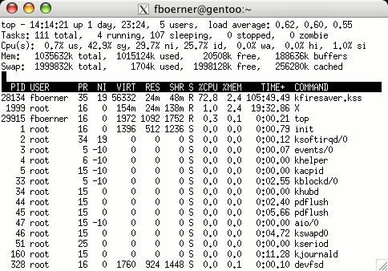

Systemverwaltung¶
Elementare Informationen¶
Benutzerinformationen¶
Einführung¶
Die folgenden Beispiele sind unter X größtenteils nicht funktionsfähig, weil die Kommandos nicht herausfinden können, welcher Benutzer angemeldet ist. Darum ist die Verwendung einer Textkonsole empfehlenswert.
Wenn Sie gerade unter X arbeiten, können Sie mit der Tastenkombination Strg+Alt+F1 bis Strg+Alt+F6 auf eine Textkonsole wechseln. Hier werden Sie sich nun vermutlich erst anmelden müssen. Geben Sie wie üblich Ihren Benutzernamen und Ihr Passwort ein. Um wieder zu X zu wechseln genügt Alt+F7.
id¶
id gibt Informationen über die Daten, mit denen die Benutzer eines Linux-Systems verwaltet werden, aus. Jeder Benutzer hat eine Benutzernummer, die sogenannte UID. Zudem ist er Mitglied in einer oder mehreren Gruppen von Benutzern, was wichtig für die Regelung von Zugriffsrechten und Rechten zur Nutzung von Systemressourcen ist. user@linux $ id uid=500(pinguin) gid=100(users) groups=100(users),14(uucp)
Unser Pinguin ist der Benutzer mit der Nummer 500, und seine wichtigste Gruppe ist die Gruppe 100 mit dem Namen users. Auf fast jedem Linux-System gibt es diese Gruppe, und normalerweise sind alle Benutzer Mitglied in ihr.
Er gehört auch noch einer anderen Gruppe an, der Gruppe uucp, die traditionell das Recht gibt, über Modemverbindungen Daten mit der Außenwelt auszutauschen.
id kann auch Informationen über andere Benutzer auf dem System liefern: user@linux $ id root uid=0(root) gid=0(root) groups=0(root),1(bin),14(uucp),15(shadow),16(dialout),17(audio),65534 (nogroup)
Dies ist der Systemverwalter root. Er hat seine eigene Gruppe.
logname¶
Mit diesem Kommando wird der Benutzername des Benutzers abgefragt, der es aufruft. logname lässt sich auch von Kommandos, die es einem Benutzer ermöglichen, vorübergehend einen anderen Namen anzunehmen, nicht irritieren: user@linux $ logname pinguin user@linux $ su Kennwort: root@linux # logname pinguin root@linux # exit user@linux $ logname pinguin
who¶
Linux ermöglicht es Benutzern, sich über ein Netzwerk (das kann auch ein Modem sein) am System anzumelden und zu arbeiten. Daher können mehrere Benutzer zur gleichen Zeit angemeldet sein. Das Kommando who gibt einen Überblick über die angemeldeten Benutzer: user@linux $ who pinguin tty1 Jan 18 22:27 eisbaer tty3 Jan 20 07:45
Dies bedeutet, dass der Pinguin auf der ersten Textkonsole angemeldet ist, und der Eisbär auf der dritten. In der dritten Spalte steht der Zeitpunkt der Anmeldung. user@linux $ who am i pinguin tty1 Jan 18 22:27
who am i (Wer bin ich) zeigt nur den Benutzer an, der das Kommando aufgerufen hat. Diese Angaben lassen sich in Shell-Skripten leicht auswerten.
Zwei interessante Optionen sind -H und –login.
-H (headline) gibt zusätzlich noch eine Kopfzeile mit aus, wie Sie es von den meisten anderen Programmen gewöhnt sind. –login gibt nicht die Benutzer, die gerade angemeldet sind aus, sondern zeigt an, wo gerade ein Login-Prozess läuft.
w¶
w ist wesentlich gesprächiger als who. Es gibt alle Informationen, die auch who liefert, und zusätzlich noch statistische Daten über Rechenzeitverbrauch und gerade aktive Programme: user@linux $ w
9:49pm up 14 days, 4:29, 2 users, load average: 1.08, 1.02, 1.01
USER TTY FROM LOGIN@ IDLE JCPU PCPU WHAT pinguin tty1 - Tue10pm 2days 0.42s 0.31s -bash eisbaer pts/3 sp.antarktis.net 9:49pm 0.00s 0.32s 0.06s w
Diese Zeilen enthalten:
Die aktuelle Uhrzeit. (9:49 pm = 21:49 h) Die Uptime: Das System läuft seit zwei Wochen, vier Stunden und 29 Minuten. (up 14 days, 4:29) Die Anzahl der angemeldeten User: 2 (2 users) Die Systemauslastung in der letzten Minute, den letzten fünf Minuten und den letzten 15 Minuten. (load average: 1.08, 1.02, 1.01) Zusätzlich zu den von who bekannten Daten in den Spalten USER, TTY und LOGIN@ noch: FROM: Den Namen des Computers, von dem aus sich der Benutzer angemeldet hat. Der Pinguin sitzt an dem Computer selbst, der Eisbär könnte irgendwo sein, denn er ist über ein Netzwerk angemeldet. IDLE: Die Zeit, seit der jeweilige Benutzer zuletzt etwas getan hat: Pinguin ist schon seit zwei Tagen untätig, er wird wahrscheinlich vergessen haben, sich abzumelden. JCPU: Die Rechenzeit, die alle zum gegenwärtigen Zeitpunkt laufenden Programme bisher belegt haben. Hier lässt sich erkennen, ob ein Benutzer ein Programm gestartet hat, das viel Rechenzeit verbraucht. Der Systemverwalter kann dann den Benutzer auffordern, das Programm zu beenden, er kann dem Programm weniger Rechenzeit zuteilen, oder er kann es eigenmächtig beenden. WHAT: Das Programm, dass der Benutzer zuletzt gestartet hat, wenn es nicht im Hintergrund abläuft. PCPU: Die bisher von dem unter WHAT angegebenen Programm verbrauchte Rechenzeit.
finger¶
Um mehr über einen Benutzer zu erfahren, gibt es das Tool finger. Wie viel Informationen finger ausgibt, hängt davon ab, wie viel der Systemverwalter und der Benutzer zulässt. finger sucht unter anderem nach Informationen in den Dateien ~/.plan und ~/.project. Damit finger die Dateien .plan und .project ausgeben kann, muss finger darauf zugreifen können. Da diese Dateien im home-Verzeichnis liegen, ist dieser Umstand nicht immer gegeben.
Ohne Angabe eines Benutzernamens wird eine Kurzinformation über alle angemeldeten Benutzer ausgegeben. user@linux $ finger Login Name Tty Idle Login Time Office Office Phone pinguin *tty1 1:45 Jul 26 9:56 eisbaer *tty2 7 Jul 26 11:18
Login: Hiermit ist der Login-Name gemeint. Name: Das ist der reale Name des Users. Bei beiden wurde kein Name angegeben. Tty: Hier ist das Terminal angegeben, von wo aus sich der Benutzer angemeldet hat. Idle: Gibt wie auch bei w die Zeitspanne an seit dem der Benutzer inaktiv ist. Login Time: Das ist die Angabe, wann er sich angemeldet hat. Office: Gibt Informationen zum Büro, z. B. Adresse aus. Office Phone: Hier steht, wenn vorhanden, die Telefonnummer des Büros, in welchem der Benutzer arbeitet.
Gibt man einen Benutzernamen mit an, werden genauere Informationen über diesen einen Benutzer ausgegeben. user@linux $ finger pinguin Login: pinguin Name: (null) Directory: /home/pinguin Shell: /bin/bash On since Sat Jul 26 11:08 (CEST) on tty2 8 minutes 2 seconds idle
(messages off)
No mail. No Plan.
Login und Name wurden schon weiter oben erklärt. Directory gibt das home-Verzeichnis des Benutzers an. In diesem Fall ist es wie für Benutzer üblich /home/pinguin. Shell gibt die Standardshell des Benutzers an. Pinguin benutzt /bin/bash. Danach erfolgt die Angabe, seit wann und wo der Benutzer angemeldet ist, gefolgt von der Idle-Zeit. messages off sagt aus, dass der Benutzer keine Nachrichten empfangen kann. No mail bedeutet dass der Benutzer keine Mails in seinem Mailordner hat. Wenn ungelesene Mails vorhanden sind, wird zum dem noch angegeben, seit wann die Mails nicht gelesen wurden. No Plan sagt aus, dass die Datei .plan nicht vorhanden ist oder finger darauf keinen Zugriff hat.
Informationen über die Speicherbelegung¶
free¶
Von Zeit zu Zeit ist es nützlich, die Speicherbelegung in Augenschein zu nehmen, beispielsweise weil ein Programm nicht genug Speicher bekommt, oder wenn der Systemverwalter sich für die Auslastung des Auslagerungsbereiches interessiert. user@linux $ free
total used free shared buffers cached
Mem: 128284(1) 117228(2) 11056(3) 25644(4) 5736(5) 64304(6)
-/+ buffers/cache: 47188(7) 81096(8)
Swap: 128480(9) 13376(10) 115104(11)
(Die Zahl in Klammern dient lediglich der Erklärng und ist keine Ausgabe von free.)
Diese vielen Zahlen bedeuten:
Die gesamte für das System verfügbare Speichermenge. Hier ist der größte Teil von 128 MB verfügbar, weil der vom Kernel belegte Speicherplatz nicht mitgerechnet wird. Die Menge des belegten Speichers. Die Menge des freien Speichers. Die Größe von zwischen Prozessen geteilten Speicherbereichen. Der für verschiedene Arten von Zwischenspeichern (Caches) verwendete Speicher. Der Unterschied ist nicht von Bedeutung, wenn man nicht gerade am Kernel programmiert. siehe 5. Der belegte Speicher nach Abzug aller Zwischenspeicherarten. Diese Speichermenge ist tatsächlich von Programmen belegt. Der freie Speicher nach Abzug aller Zwischenspeicherarten. Dieser Speicher ist noch für Programme verfügbar. Die Gesamtgröße der vorhandenen Auslagerungsbereiche. Hier sind es knapp 128 MB. Der genutzte Teil des Auslagerungsbereiches. Untätige Prozesse werden in den Auslagerungsbereich verschoben, wenn der von ihnen belegte Arbeitsspeicher besser für andere Zwecke verwendet werden kann. Der freie Teil des Auslagerungsbereiches.
Mit den Optionen -b, -k und -m wird der Speicher in Byte, KByte, bzw. in MByte ausgegeben. Als Standard-Einstellung wird KByte verwendet.
Die Option -t (total) gibt zusätzlich noch die Summe der Gesamtgrößen aus.
df¶
Eines der häufigsten Probleme beim Betrieb eines Linux-Systems, und noch dazu eines, das sich oft nicht rechtzeitig zu erkennen gibt, ist eine vollgelaufene Festplatte. Heutige Linux-Distributionen enthalten derartige Mengen an Software, dass es überhaupt kein Problem ist, auch eine Fünf- oder mehr Gigabyte-Partition in kürzester Zeit zu füllen.
df zeigt den Belegungszustand jedes eingehängten Dateisystems an. user@linux $ df Filesystem 1k-blocks Used Available Use% Mounted on /dev/sda2 208820 76912 131908 37% / /dev/sda5 763012 104468 658544 14% /var /dev/sda3 5245048 3128612 2116436 60% /usr /dev/sda1 7988 2404 5184 32% /boot ser1:/home/pinguin 2097286 1305429 686633 66% /home/pinguin
In der ersten Spalte (Filesystem) steht die Bezeichnung des Dateisystems, meistens eine Festplattenpartition. Dahinter steht die Gesamtgröße in Kilobyte (1k-blocks), der belegte Speicher (Used) und der noch vorhandene freie Platz (Available). Außerdem noch der Anteil des belegten Speichers an der Gesamtgröße (Use%) und das Verzeichnis, in das das Dateisystem eingehängt ist (Mounted on).
In der letzten Zeile ist ein Dateisystem zu sehen, auf das über das Netzwerk zugegriffen wird.
Mit der Option -a werden auch Dateisystem angezeigt, die eine Kapazität von 0 Byte haben. Damit sind Dateisysteme gemeint, die im Prinzip keinen Speicherplatz belegen, sondern eine bestimmte Funktionalität zur Verfügung stellen. Ein Beispiel ist das devfs-Dateisystem, welches nur Dateien beinhaltet, die Geräte darstellen.
Wenn man noch zu jedem Dateisystem dem Typ erfahren will, so gibt es dafür noch die Option -T.
Die Option -i zeigt anstelle der Speicherbelegung die Belegung der Inodes an. Unter Linux benötigt jede Datei eine bestimmte Inode-Nummer. Es gibt allerdings immer eine maximale Anzahl an Inode-Nummern pro Dateisystem. Wenn diese Anzahl erreicht ist, kann keine weitere Datei mehr angelegt werden, egal wie viel Speicher noch frei ist.
Wie Sie im Beispiel sehen konnten, sind die Zahlen zum Teil ziemlich unhandlich und somit weniger aussagekräftig. Aus diesem Grund gibt es die Optionen -h, bzw. -H (human-readable). Diese haben die Aufgabe, die Zahlen für den Menschen besser lesbar darzustellen. Der Unterschied zwischen den beiden Optionen besteht darin, dass -h mit einer Potenz von 1024 und -H von 1000 rechnet. Zudem stehen noch die Optionen -k und -m zur Verfügung. Diese geben den Plattenplatz in Kilobyte, bzw. in Megabyte aus. Mit –block-size=n erfolgt die Ausgabe in n-Byte-Blöcken.
du¶
Mit Hilfe von du (disk usage) wird der Speicherplatzverbrauch für ein Verzeichnis und dessen Unterverzeichnisse angezeigt. Als Standard-Einstellung wird das aktuelle Arbeitsverzeichnis verwendet. user@linux $ du ... 120 ./.kde/share/apps/kMail ...
Beim Autor war die Ausgabe von du wesentlich länger. Diese eine Zeile soll exemplarisch betrachtet werden.
Das Beispiel sagt aus, dass das Verzeichnis ./.kde/share/apps/kMail insgesamt 120 Kilobyte belegt (als Standard-Einstellung erfolgt die Ausgabe in Kilobytes). Um die Ausgabe besser lesbar darzustellen, gibt es wie bei df die Optionen -h und -H.
Ebenfalls stehen wie bei df die Optionen -k und -m für eine Ausgabe in Kilo- bzw. Megabyte zur Verfügung. Hinzu kommt noch die Option -b für Byte.
Um nur die Gesamtsumme, die ein bestimmtes Verzeichnis belegt, zu erfahren, verwendet man die Option -s. user@linux $ du -s 40248 .
Auf den ersten Blick mag diese Ausgabe ein wenig ungewohnt erscheinen, haben wir doch erwartet, dass alle Verzeichnisse im aktuellem Verzeichnis ausgegeben werden. Bei genauerer Betrachtung ist die Ausgabe aber durchaus logisch. Als Standard-Einstellung wird das aktuelle Arbeitsverzeichnis genommen und das ist nun mal ./”.
Will man alle Unterverzeichnisse aufgelistet haben, so muss der Befehl du -s * lauten.
Um zusätzlich noch den belegten Speicher für jede Datei auszugeben, gibt es die Optionen -a, bzw. –all.
Die Option -c gibt am Ende noch die Gesamtsumme aus.
Weitere Kommandos¶
dmesg¶
Der Kernel gibt im Laufe der Zeit eine Menge Informationen an den klogd, den kernel log daemon weiter. dmesg zeigt die aktuellsten Meldungen an. Hier sind z. B. die Bootmeldungen nachzulesen, aber auch das Einlegen einer neuen CD wird hier vermerkt. Weil in diesen Meldungen auch all die Hardwareinformationen enthalten sind, die beim Hochfahren des Systems anfallen, ist dmesg für die Fehlersuche oder die Konfiguration sehr nützlich.
date¶
Wer möchte nicht gerne wissen, welcher Tag heute ist (vor allem nach stundenlangem Programmieren, vorzugsweise nachts). Dazu gibt date das aktuelle Datum und die Uhrzeit aus: user@linux $ date Fr Jan 21 22:57:58 CET 2000
Manchmal kann es aber notwendig sein, sich das Datum in einem individuellem Format ausgeben zu lassen. Wenn dies der Fall ist, sieht der Befehl folgendermaßen aus:
date +’Format’
Format ist eine Zeichenfolge, die angibt, wie das ausgegebene Datum aussehen soll. Dabei stehen dem Benutzer verschiede Platzhalter, die durch aktuelle Werte ersetzt werden, zur Verfügung. Die wichtigsten sind unter anderem:
%d: Aktueller Tag des Monats von 01 bis 31 %H: Aktuelle Stunde von 00 bis 23 %m: Aktueller Monat von 01 bis 12 %M: Aktuelle Minute von 00 bis 59 %Y: Aktuelles Jahr von 1970 bis ...
Beispiel: user@linux $ date +’%Y-%m-%d’ 2000-01-21
Von Zeit zu Zeit will man sich aber auch das Datum in einem bestimmten standarisiertem Format ausgeben lassen. Dazu stehen folgen Optionen zur Verfügung:
-I[TIMESPEC], –iso-8601[=TIMESPEC] Gibt das Datum im ISO 8601 Format aus. Als TIMESPEC kann date (gibt nur das Datum aus), hours (gibt zudem noch die Stunde an), minutes (die Minuten werden noch zusätzlich angezeigt) oder seconds (die Sekunden werden auch noch angezeigt) sein. Als Default für TIMESPEC ist date eingestellt. -R, –rfc-822 Gibt das Datum im RFC 822 Format aus. -u, –utc, –universal Gibt das Datum im UTC Format aus.
Besitzt man die nötigen administrativen Rechte, kann man mit date auch Datum und Uhrzeit ändern. Dazu gibt es die Option -s. Wichtig dabei ist dennoch ein Format anzugeben. Das Format gibt dann an in welcher Form das Datum übergeben wird. Die genaue Syntax lautet wie folgt:
date +’Format’ -s “Datum”
bzw.
date +’Format’ –set=”Datum”
Dabei gibt ‘Datum’ das neue Datum an. Selbstverständlich kann anstelle von +’Format’ auch eine der Optionen -I, -R oder -u verwendet werden.
dd¶
Die primäre Aufgabe von dd ist es Daten zu kopieren und entsprechend zu konvertieren. Dabei kopiert dd die Daten nicht Dateiweise, sondern Blockweise. Das Haupteinsatzgebiet von dd ist es Kopien von ganzen Devices auf einem anderen (physikalischen) Device anzulegen. Somit eignet sich dd auch dafür, ein ISO-Abbild von einer CD auf der Festplatte zu sichern.
dd besitzt eine Reihe von verschiedenen Optionen, die verschiedene Möglichkeiten der Konvertierung darstellen. Die beiden wichtigsten Optionen sind allerdings if=DATEI und of=DATEI. if=DATEI gibt dabei die Datei an, von der gelesen werden soll. of=DATEI gibt die Datei an, in die geschrieben werden soll.
Ein Beispiel, um ein ISO-Abbild auf der Festplatte im aktuellen Verzeichnis anzulegen, lautet: root@linux # dd if=/dev/cdrom of=cdrom.iso
Wie schon angesprochen kopiert dd nicht Dateiweise sondern Blockweise. Aus diesem Grund ist es auch möglich Daten zu kopieren und dabei die Blockgröße zu ändern. Ebenso ist es auch möglich nur bestimmte Blöcke von einem Device zu kopieren.
Um die Blockgröße für die Ein- und Ausgabe festzulegen, stehen drei Optionen zur Verfügung:
ibs=n: Legt die Eingabeblockgröße auf n Bytes fest. obs=n: Legt die Ausgabeblockgröße auf n Bytes fest. bs=n: Legt die Ein- und Ausgabeblockgröße auf n Bytes fest. bs hat Vorrang von ibs und obs. cbs=n: Legt die Datensatzlänge auf n Bytes fest.
Die voreingestellte Größe für die Ein- und Ausgabeblöcke ist 512 Byte.
Um nur bestimmte Blöcke zu kopieren, stehen folgende Optionen zur Verfügung:
skip=n: Überspringt n-Blöcke am Anfang der Eingabedatei. seek=n: Überspringt n-Blöcke am Anfang der Ausgabedatei count=n: Kopiert nur n Eingabeblöcke.
Als Blockgröße wird logischerweise, der durch bs, ibs, bzw. obs angegeben Wert genutzt.
Eine weitere wichtige Option ist conv=Key. Wenn diese Option angegeben ist, wird die Eingabedatei entsprechend durch das mit Key angegeben Schlüsselwort in die Ausgabedatei konvertiert. Als Key können auch mehrere Schlüsselwörter, durch Kommata getrennt angeben werden.
Unter anderem stehen dem Benutzer dabei folgenden Schlüsselwörter zur Verfügung:
block/unblock Es gibt Datensätze fester Länge und es gibt Datensätze mit variabler Länge, deren Ende durch einen Zeilenumbruch markiert ist. Das Schlüsselwort block füllt einen Datensatz, der kleiner als cbs-Bytes ist mit Leerzeilen auf, bis die entsprechende Datensatzlänge erreicht ist. Somit wandelt block Datensätze variabler Länge in Datensätze mit fester Länge um. Entsprechend entfernt unblock die nachfolgenden Leerzeilen und wandelt somit Datensätze mit fester Länge in Datensätze mit variabler Länge um. lcase Sämtliche Großbuchstaben werden in Kleinbuchstaben umgewandelt ucase Sämtliche Kleinbuchstaben werden in Großbuchstaben umgewandelt noerror Die Verarbeitung wird auch nach einem Fehler fortgesetzt.
which¶
Wenn Sie auf der Shell einen Befehl eingeben, werden der Reihe nach alle Verzeichnisse in $PATH nach diesem Befehl durchsucht. Nachdem der Befehl in einem Verzeichnis gefunden wurde, wird die Suche abgebrochen. Dabei kann allerdings das Problem auftreten, dass Sie ein anderes Kommando meinen, das sich in einem anderen Verzeichnis befindet. Um heraus zufinden, wo sich nun das Programm befindet, das ausgeführt wird, gibt es das Werkzeug which.
which durchsucht alle Verzeichnisse, die in der Umgebungsvariablen $PATH aufgelistet sind, nach einer ausführbaren Datei mit dem angegebenen Namen: user@linux $ which man /usr/bin/man
Auf diese Weise finden Sie heraus, ob das seltsame Verhalten eines Kommandos dadurch verursacht wird, dass ein anderes Programm in ein Verzeichnis geraten ist, das sich im Pfad weiter vorne befindet: user@linux $ man ls cat: ls: No such file or directory user@linux $ which man /usr/local/bin/man
Hier ist ein Programm namens man in dem Verzeichnis /usr/local/bin, das im Suchpfad vor dem Verzeichnis /usr/bin steht, in dem sich das gewünschte Kommando man befindet. Durch den Aufruf: user@linux $ /usr/bin/man ls
können Sie jetzt das richtige Programm aufrufen.
which” kann zudem nützlich sein, um festzustellen, ob ein bestimmtes Programm vorhanden ist ohne dieses Programm gleich ausführen zu müssen.
Bearbeitung von Programmausgaben¶
Manchmal können Ausgaben von Programmen recht umfangreich werden. Um die Ausgaben ein wenig übersichtlicher zu gestalten, stehen dem Benutzer dieselben Werkzeuge mit denselben Optionen und derselben Funktionalität zur Verfügung wie bei der Dateiverwaltung, also z. B. less, grep usw. Dabei muss man die Ausgabe von dem einem Programm per Pipe in ein anderes Programm weiterleiteten, z. B.: user@linux $ ps -ax | less
Der Befehl ps -ax” wird ganz normal ausgeführt, aber die Ausgabe dient in diesem Fall als Eingabe für less. Aus diesem Grund muss auch kein Dateiname für less angeben werden, da die Ausgabe von ps -ax von less wie eine Datei behandelt wird. Das Resultat dieser Kombination ist, dass man durch die gesamte Ausgabe von ps -ax bewegen kann und man sich nicht nur mit den letzten Zeilen zu Frieden geben muss.
Ausführliche Informationen zu ps findet man unter ps.
Autoren
Frank Börner f.boerner@ngi.de Ferdinand Hahmann FerdinandHahmann@gmx.net
Formatierung
Florian Frank florian.frank@pingos.org Matthias Hagedorn matthias.hagedorn@selflinux.org
Prozessverwaltung¶
Einleitung¶
Linux ist ein de Multitasking-Betriebssystem. Das heißt, es können mehrere Programme zur selben Zeit ablaufen. Üblicherweise benutzt jeder Anwender ein Programm im Vordergrund, während mögliche weitere im Hintergrund ablaufen. Es ist ein Mechanismus vorhanden, um Hintergrundprozesse zu beeinflussen, sie beispielsweise anzuhalten, fortzusetzen oder zu beenden. Ebenso unterstützen die meisten Shells Job-Control, also die Möglichkeit, Vordergrundprozesse in den Hintergrund zu schicken und umgekehrt.
ps¶
In einem Multitasking-Betriebssystem wie Linux läuft zu jedem Zeitpunkt eine Vielzahl von Prozessen, über die es interessante Dinge herauszufinden gibt. Dazu gibt es das Kommando ps: user@linux $ ps
PID TTY TIME CMD
18301 pts/1 0:00 bash 18901 pts/1 0:00 ps
Die Ausgabe bedeutet, dass unser Pinguin momentan zwei Prozesse betreibt: Eine Shell und ps selbst.
Die einzelnen Spalten bedeuten folgendes:
Die PID (Prozess ID) ist eine Nummer, die jeden Prozess eindeutig identifiziert. Unter TTY wird der Name des Terminals angegeben, das den Prozess kontrolliert. Meist bedeutet dieser Name, dass der Prozess von diesem Terminal aus gestartet worden ist, und für die Ein- und Ausgabe benutzt wird. TIME zeigt die von jedem dieser Prozesse bisher genutzte Rechenzeit an. CMD (oder COMMAND) zeigt den Befehl an, mit dem der Prozess gestartet worden ist.
ps hat eine Unmenge von Optionen, die alle dazu dienen, die Berge von Daten, die sich über Prozesse gewinnen lassen, zu filtern. Die einfachste Möglichkeit der Auflistung aller laufenden Prozesse ist ps -ax. Es werden alle Prozesse aufgelistet, auch diejenigen, die nicht vom aktuellen Benutzer gestartet wurden und die, die nicht mit einem Terminal verbunden sind (also im Hintergrund laufen). Diese Liste ist normalerweise sehr lang, daher sind nur die ersten paar Zeilen wiedergegeben. user@linux $ ps -ax PID TTY STATE TIME COMMAND 1 ? S 0:04 init [2] 2 ? SW 0:00 [keventd] 3 ? SWN 0:00 [ksoftirqd_CPU0] ...
Bei ps -ax wird auch noch der Status (STATE) des jeweiligen Prozesses ausgegeben. Dabei werden folgen Abkürzungen verwendet:
D (Deep sleeping) Der Prozess befindet sich in einem ununterbrechbarer Schlaf. R (Running) Der Prozess verarbeitet im Moment gerade Daten. S (Sleeping) Der Prozess wartet auf irgendein Ereignis um Daten zu verarbeiten. T (Traced) Der Prozess wurde angehalten. Z (Zombie) Zombies sind Prozesse, die eigentlich schon beendet sein sollten, aber immer noch auf irgendetwas warten. Sie können immer mal wieder vorkommen und stellen keinen Grund zur Besorgnis dar, solange sie nicht in Mengen auftreten und es sich nicht um viele Zombies mit gleichem Namen handelt.
Stehen neben diesen Statusmeldungen noch ein oder mehrere Zeichen bedeuten diese folgendes:
W bedeutet, dass der Prozess in den Swap-Speicher ausgelagert wurde und somit keine Speicherseiten belegt werden. < bedeutet, dass der Prozess mit einer höheren Priorität läuft. N bedeutet genau das Gegenteil. Der Prozess läuft mit einer niedrigeren Priorität. L (Locked) bedeutet, dass der Prozess im Speicher geladen wurde und auch dort gehalten wird.
pstree¶
Linux merkt sich, wenn ein Programm ein anderes startet. Wenn der Elternprozess beendet wird, wird auch für das Ende aller Kindprozesse gesorgt, damit diese nicht für immer herumliegen und Platz wegnehmen. Die Baumstruktur der laufenden Prozesse wird mit pstree oder mit ps und der Option -f angezeigt: user@linux $ pstree init-+-atd
...
Hier ist ein umfangreicher Ast. Man sieht, wie der Autor an diesem Text mit XEmacs unter de KDE schreibt. Gleichzeitig laufen noch ein Terminalfenster (Eterm), in dem gerade pstree ausprobiert wird und netscape.
top¶
Der Systemverwalter kann seine Augen und Ohren nicht überall haben, darum braucht er ein Programm, das ihm die wichtigsten Prozesse anzeigt, die auf dem System laufen. Die wichtigsten sind die, die am meisten Rechenzeit oder am meisten Speicher belegen. Nach diesen Kriterien entscheidet top.
top
top fasst alle bisher genannten Kommandos zusammen und fügt noch einiges hinzu.
Ganz oben stehen die von uptime bekannten Werte (Systemzeit, Uptime, angemeldete Benutzer und Auslastung). In der nächsten Zeile kommt die Anzahl der laufenden Prozesse und ihre Zustände. Die Zustände wurden bereits bei ps erklärt. Die dritte Zeile zeigt den prozentualen Anteil an, womit sich der (oder die) Prozessor(en) in den letzten Sekunden beschäftigt hat (haben). user: Mit user sind Prozesse gemeint, die von den Benutzern des Systems gestartet worden sind. system: Hierbei sind sämtliche Prozesse gemeint, die vom System gestartet worden sind. nice: Damit sind all die Prozesse gemeint, die nicht mit einem nice von 0 (null) laufen. idle: Mit idle wird die noch zur Verfügung stehende Prozessorlast bezeichnet. Nun kommen noch die von free bekannten Speicherangaben.
Als letztes folgt die Liste mit den ressourcenträchtigesten Prozessen. Im Gegensatz zu ps werden bei top weitere Informationen zu den einzelnen Prozessen ausgegeben:
User gibt den Namen des Users an, unter welchem der Prozess läuft. PR gibt die Priorität des Prozesses an NI gibt den Nice-Wert an. Ein negativer Wert bedeutet eine höhere Priorität, ein positiver Wert eine geringere Priorität. VIRT gibt die gesamte Anzahl an Speicher an, den dieser Prozess benötigt, inklusive den Code, den Daten und den geteilten Bibliotheken. RES gibt die Belegung des physikalischen Arbeitsspeichers an. Auslagerungen im Swap-Speicher werden hier nicht berücksichtigt. SHR gibt die Anzahl des Speichers an Daten an, die auch von anderen Prozessen genutzt werden können. S gibt den Status des Prozesses an. Siehe dazu auch die Erklärung bei ps. %CPU gibt an wieviel Prozent von der gesamten Prozessorleistung der Prozess benötigt. %MEM gibt dasselbe wie %CPU an, diesmal aber bezogen auf den physikalischen Arbeitsspeicher.
tload¶
Die Aufgabe von tload ist es, die durchschnittliche Systemlast in einer einfachen ASCII-Grafik darzustellen. Mit der Option -d kann die Zeit in Sekunden angeben werden, nach der die Grafik aktualisiert wird. Mit -s wird die Skalierung angegeben, also wie viele Zeilen für eine Einheit verwendet werden. Je größer die Zahl ist, desto gröber die Darstellung.
fuser¶
Manchmal kann es ganz nützlich sein, festzustellen welche Prozesse eine bestimmte Datei benutzen. Für diese Aufgabe gibt es den Befehl fuser gefolgt vom Dateinamen. user@linux $ fuser ksycoca ksycoca: 463 463m 471 471m 539 539m 546 546m
Diese Ausgabe sagt aus, dass die Datei ksycoca von den Prozessen mit der PID 463, 471, 539 und 546 benutzt wird. Gefolgt von der PID wird ein Buchstabe mit ausgegeben (in diesem Fall ist es immer ein m). Dieser Buchstabe gibt an, wie der Prozess auf die Datei zugreift. Konkret bedeuten die Buchstaben folgendes:
c: Die Datei wird vom Prozess als Verzeichnis behandelt. e: Die Datei ist ausführbar und wird vom Prozess ausgeführt. f: Die Datei wurde vom Prozess geöffnet. Im Standard-Modus wird das f weg gelassen. Somit ist auch klar, warum in unserem Beispiel jede PID zweimal angegeben wurde. m: Die Datei ist eine Bibliothek, die gemeinsam von den Prozessen genutzt wird. r: wird verwendet, wenn es sich um das Wurzelverzeichnis (root-Verzeichnis) handelt.
Auch für fuser gibt es noch eine Reihe weiterer Optionen. Interessant dabei ist die Option -n. Diese erwartet noch eine weitere Angabe:
file, wenn es sich um eine Datei handelt. Dabei bewirkt fuser -n file ksycoca dasselbe wie fuser ksycoca udp, wenn sich die darauf folgende Angabe um einen UDP-Port handelt. tcp, bedeutet das gleiche wie udp mit dem Unterschied, dass ein TCP-Port gemeint ist.
Der oben beschriebe Buchstaben-Code ist auch für die Port-Angaben gültig, da unter Linux Ports auch als Dateien behandelt werden.
Weitere wichtige Optionen sind noch:
-a: Dabei werden auch Dateien ausgegeben, auf die gerade kein Prozess zugreift. -u: Gibt in Klammern den zur PID gehörenden Benutzernamen aus. -v (verbose) gibt mehr Informationen aus.
kill¶
kill ist - trotz seines Namens - nicht nur zum Beenden von Prozessen geeignet. Es kann alle möglichen Signale an die Prozesse senden, die vom Benutzer gestartet wurden, der kill aufruft. Ist dieser Benutzer der Systemverwalter, dann sind ihm alle Prozesse zugänglich.
Der Aufruf ist:
kill <Signal> <Prozess-ID>
Die Prozess-ID (PID) können Sie beispielsweise aus der Ausgabe des Programmes ps entnehmen: user@linux $ ps [...] 19376 pts/0 00:00:00 ps
Hier ist die PID des ps-Prozesses selbst die 19376.
Wenn die PID negativ ist, wird <Signal> nicht an einen bestimmten Prozess gesendet, sondern an alle Prozesse mit der angegebenen PGID. Der Befehl lautet also dann folgendermaßen:
kill <Signal> -<PGID>
Anstelle der Prozess-ID kann auch -1 angegeben werden. Dabei wird <Signal> an alle Prozesse gesendet, ausser dem kill-Prozess selbst und init. Zudem zeigt dieser Befehl nur bei den Prozessen Wirkung, bei welchen man die nötigen Rechte hat.
Wenn Sie kein Signal angeben, sendet kill das Signal 15 (SIGTERM), das die meisten Programme dazu veranlasst, hinter sich aufzuräumen, um sich dann zu beenden.
Weitere wichtige Signale sind SIGHUP (1) und SIGKILL (9). SIGHUP steht für hang-up. Wenn ein Benutzer sich über das Netzwerk angemeldet hat und die Verbindung abbricht, z. B. weil ein Modem auflegt (eben ein hang-up), wird dieses Signal an alle Prozesse gesendet, die während dieser Anmeldesitzung gestartet wurden. Sie werden dann beendet.
SIGKILL tut genau das, was sein Name andeutet: Es unternimmt alles, um einem Prozess den Garaus zu machen. user@linux $ kill -SIGKILL 12345
Eine Liste mit allen Signalen finden Sie entweder in der Manpage von kill (man kill) oder mit dem Befehl kill -l.
Die Option -p sendet kein Signal an den Prozess, sondern gibt nur den Namen des zur PID passenden Prozesses aus.
Die bash-Shell enthält einen eingebauten Befehl kill, der im Prinzip dieselbe Auswirkung wie /bin/kill hat, jedoch zwei Vorteile bietet:
Er erlaubt die Verwendung von Job-IDs statt PIDs, und wenn Sie die maximale Anzahl von Prozessen gestartet haben, die Ihr Systemverwalter ihnen zubilligt, können Sie einen davon beenden, ohne dazu einen weiteren Prozess mit /bin/kill starten zu müssen. Die Eingabe von kill startet den in die bash eingebauten kill-Befehl. /bin/kill verwendet den externen kill-Befehl.
killall¶
killall bewirkt im Prinzip dasselbe wie kill. Es sendet Signale an Prozesse. Der Unterschied zwischen kill und killall ist, an welchen Prozesse ein Signal gesendet wird. Bei killall wird nicht die PID des Prozesses angegeben, sondern dessen Name. Da allerdings der Name, im Gegensatz zur PID, nicht eindeutig ist, wird das Signal an alle Prozesse mit diesem Namen gesendet. Der genaue Aufruf lautet:
killall [Option] [Signal] <Name>
Wenn <Name> einen / enthält so ist damit nicht der Name eines Prozesses gemeint, sondern der Name einer auszuführenden Datei. Dabei wird ein Signal an alle Prozesse gesendet, die diese Datei ausführen.
Die Signale sind dieselben wie bei kill. Ohne Angabe von Signal wird auch ein SIGTERM (15) gesendet.
Eine wichtige Option ist -e (–exact). Normalerweise wertet killall nur die ersten 15 Zeichen von <Name> aus. Haben nun zwei Prozesse unterschiedliche Namen stimmen aber trotzdem in den ersten 15 Zeichen überein, so sind dennoch beide Prozesse von killall betroffen. Die Option -e erzwingt dass der volle Name ausgewertet wird.
Eventuell will man nicht blind alle Prozesse mit gleichen Namen beenden, sondern vorher noch eine Nachfrage haben. Dafür gibt es die Option -i (–interactive).
nice¶
Unter Linux ist es möglich, dass mehrere Befehle, auch Jobs genannt, zur gleichen Zeit ausgeführt werden. Da allerdings nicht alle Ressourcen unbegrenzt zur Verfügung stehen, muss eine Auswahl getroffen werden, welche Priorität ein Job hat. Diese Aufgabe erledigt der Befehl nice:
nice <Priorität> <Befehl> [Argumente]
<Priorität> ist für normale User eine Zahl zwischen 0 und 19, wobei 19 die niedrigste Priorität ist. Der Superuser hat die Möglichkeit Prioritäten von -20 bis 19 zu vergeben. Dabei ist -20 die höchste Priorität.
<Befehl> ist der eigentliche Befehl, der ausgeführt werden soll. [Argumente] sind dabei Optionen, die an <Befehl> übergeben werden.
Autor
Ferdinand Hahmann FerdinandHahmann@gmx.net
Formatierung
Matthias Hagedorn matthias.hagedorn@selflinux.org
Software-Installation¶
Installieren und Deinstallieren von Software¶
Leider gibt es noch kein einheitliches Installations-Verfahren unter Linux, aber mit dem RPM (Redhat Package Manager}-Format von RedHat hat sich mittlerweile ein Format durchgesetzt, das auch von anderen Distributoren verwendet wird. Daneben gibt es noch andere Formate und Verfahren, von denen die Gebräuchlichsten hier vorgestellt werden.
Eines kennzeichnet aber sämtliche Installationsverfahren: kein Reboot nach erfolgter Installation. Sämtliche Tools können sofort gestartet werden, evtl. ist das Starten eines Dienstes (Unix-Jargon: Daemon) nötig, was von der Kommandozeile aus erfolgt.
Linux-Distributoren¶
Die meisten Linux-Distributionen sind recht umfangreich und enthalten bereits die nötigen Tools und Programme, die bei der Grund-Installation ausgewählt wurden. Will man später das eine oder andere Programm nachträglich installieren, kann dies mit den Distributions-eigenen Werkzeugen erfolgen. Auch die Deinstallation ist über diesen Weg möglich. Voraussetzung dafür ist, dass das gewünschte Programm im Distributions-Umfang mit dabei ist.
Leider liegen manche Programme nicht in der neuesten Version vor, andere Programme fehlen, weil beispielsweise die Lizenz des Herstellers nicht mit der Distribution vereinbar ist. Dann muss man sich selbst darum kümmern, an die aktuelle Version des gewünschten Paketes zu kommen, um diese auf dem Rechner installieren zu können.
RPM¶
Das RPM-Format, das von RedHat für ihre Distribution entwickelt wurde, enthält zusammen mit einigen Verwaltungsdaten das compilierte Programm-Paket. Erkennbar sind RPM-Dateien an der Endung .rpm, wobei zusätzlich die Architektur (z. B. i386 oder alpha) im Namen der Datei enthalten ist. So kennzeichnet
kaffe-1.0.6-2.i386.rpm
das Kaffe-Paket für die Intel386-Architektur. Pakete, die nicht an eine bestimmte Architektur gebunden sind (z. B. manche Java-Pakete) erhalten die Endung .noarch.rpm. Handelt es sich um ein Paket in Source-Form, so wird dies durch .src.rpm gekennzeichnet.
Folgende Eigenschaften kennzeichnen das RPM-Format:
Prüfung, ob die Voraussetzung für ein Paket vorhanden ist lokale Installation Installation per FTP möglich Deinstallation
Wer über FTP installieren will, kann als Paket-Name eine URL angeben, z. B. user@linux ~$ rpm -ih ftp://ftp.redhat.com/pub/redhat/i386/RedHat/RPMS/kaffe-1.0.6-2.i386.rpm
Das Schöne an der Installation per FTP ist, dass die Abhängigkeiten vor der eigentlichen Installation überprüft werden, d. h. das restliche Paket wird erst heruntergeladen, wenn die Abhängigkeiten erfüllt sind. Dazu teilt sich der eigentliche Installations-Vorgang in drei Phasen auf:
das Pre-Install-Skript wird ausgeführt (falls vorhanden) das eigentliche Archiv wird ausgepackt und in das Dateisystem kopiert das Post-Install-Skript wird ausgeführt (falls vorhanden)
Ein ähnliches Schema wird bei der Deinstallation angewandt, auch hier gibt es häufig ein Pre-Uninstall- und Post-Uninstall-Skript.
Andere Distributoren, wie z. B. SuSE oder Mandrake, sind mittlerweile auch auf den RPM-Zug aufgesprungen, so dass dieses Format recht häufig im Internet anzutreffen ist. Allerdings kann man nicht einfach ein SuSE rpm unter Mandrake installieren oder umgekehrt, da die Pakete von den verschiedenen Distributoren teilweise unterschiedlich zusammengebaut werden.
Mit rpm kann man Pakete einzeln, aber auch mehrere auf einmal installieren, erneuern oder entfernen. Sind Pakete dabei, die voneinander abhängig sind, sortiert sie rpm in der richtigen Reihenfolge für die Installation. Dies bedeutet eine erhebliche Erleichterung für den Administrator, da er sich keine Gedanken darüber zu machen braucht, welche Pakete er zuerst installieren muss – er gibt einfach alle in Frage kommenden Pakete an. Kommando Kurzbeschreibung rpm -ih x.rpm Installation; die Option -h (oder auch -vh) gibt zusätzlich noch einen Fortschrittsbalken aus rpm -U x.rpm Update; werden Konfigurationsdaten verändert, werden sie vorher unter der Endung .rpmsave gesichert. Alternativ wird die neue Version einer Konfigurationsdatei mit der Endung .rpmnew angelegt. Während des Updates macht der RedHat Package Manager auf diese Aktionen aufmerksam. rpm -qa Query – Abfrage aller Pakete; ohne die Option -a kann man gezielt nach einem Paket nachfragen (z.B. rpm -q fileutils) Hilfreich ist auch die Option -f, mit der man abfragen kann, zu welchem Paket eine Datei (z. B. /bin/ls) gehört. rpm -e x.rpm Erase – zum Deinstallieren eines Paketes rmp -V x Verify – ist das Paket noch ordnungsgemäß installiert oder hat da etwa jemand dran manipuliert?
Die Manual-Page von rpm ist recht umfangreich, entsprechend dem Umfang dieses Kommandos. In der Tabelle sind deswegen nur die wichtigsten Befehle aufgelistet, um einen schnellen Einstieg zu ermöglichen. Tiefergehende Information sind über man rpm abrufbar. Eine sehr ausführliche Beschreibung der Möglichkeiten von rpm findet sich unter en http://www.rpm.org/max-rpm/.
Kompilieren von Source-RPMs¶
Hat man ein Paket nur in Source-Form vorliegen (xxx.src.rpm), ist die Option –rebuild ganz hilfreich. Sie sorgt dafür, dass das Paket nach dem Auspacken auch gleich kompiliert wird. Während hierfür bei RPM-Versionen bis 4.0.X auch der Befehl rpm zuständig ist, gibt es seit der Version 4.1 den Befehl rpmbuild.
Das Kompilieren eines Source-RPMs auf dem eigenen Rechner hat auch den Vorteil, dass die Programme auf jeden Fall zu den installierten Bibliotheken passen.
Generell ist es empfehlenswert, diesen Kompilationsvorgang nicht als Benutzer root durchzuführen. Um als normaler Benutzer einen rebuild durchzuführen, muß als erstes eine Datei .rpmmacros im Homeverzeichnis angelegt werden: user@linux ~$ cat ~/.rpmmacros %_topdir /tmp/mirko-redhat user@linux ~$
Nun müssen noch einige Verzeichnisse angelegt werden: user@linux ~$ mkdir /tmp/mirko-redhat user@linux ~$ mkdir /tmp/mirko-redhat/SPECS user@linux ~$ mkdir /tmp/mirko-redhat/BUILD user@linux ~$ mkdir /tmp/mirko-redhat/SOURCES user@linux ~$ mkdir /tmp/mirko-redhat/RPMS user@linux ~$ mkdir /tmp/mirko-redhat/RPMS/i386 user@linux ~$ mkdir /tmp/mirko-redhat/RPMS/i686 user@linux ~$ mkdir /tmp/mirko-redhat/RPMS/noarch user@linux ~$ mkdir /tmp/mirko-redhat/SRPMS
oder in einem Einzeiler: user@linux ~$ mkdir -p /tmp/mirko-redhat/{RPMS/i386,RPMS/noarch,BUILD,SOURCES,SPECS,SRPMS}
Jetzt kann man ein vorhandenes Source-RPM einfach wie folgt kompilieren: user@linux ~$ rpm –rebuild mod_auth_pam-1.0a-1.src.rpm
oder aber bei RPM-Versionen ab 4.1: user@linux ~$ rpmbuild –rebuild mod_auth_pam-1.0a-1.src.rpm
Nach Ausführen des Befehls wird der Kompilationsvorgang durchgeführt:
Die unter SOURCES abgelegten Quellen werden unterhalb von BUILD ausgepackt. Eventuell vorhandene Patches (Quelltext-Änderungen, die der Fehlerkorrektur oder dem Anpassen an das System dienen) verändern den Quelltext. Dann wird meistens automatisch der unter Die klassische Installation beschriebene Ablauf aus ./configure, make, make install ausgeführt. Allerdings werden die Dateien hierbei temporär unter /var/tmp/PAKET-root installiert, da man als normaler Benutzer ja keine Zugriffsrechte auf die Standardverzeichnisse /usr, /etc usw. hat. Nun werden noch automatisch eventuell auftretende Abhängigkeiten aufgelöst. Die dem Programm zugehörigen Dateien werden komprimiert und in einem RPM zusammengefasst.
Am Ende findet sich dann unter RPMS/i386 das fertige RPM-Paket, welches man dann als root installieren kann.
Anfragen der RPM-Datenbank¶
Neben den eigentlichen Programm- oder Source-Dateien, die gepackt vorliegen, enthalten RPM-Dateien zusätzliche Informationen, welche bei der Installation in einer Datenbank gespeichert werden. So umfasst ein RPM zusätzlich eine kurze Beschreibung des Programmes, den Installationszeitpunkt, die Zeit zu dem es kompiliert wurde, eine Auflistung aller dem Programm zugehörigen Dateien nebst Informationen über die Größe dieser Dateien und einen MD5-Hash, durch den sich nachträglich überprüfen lässt, ob die Dateien geändert wurden.
Auch sind in einem RPM die Abhängigkeiten von anderen Bibliotheken abgespeichert, so dass das Aufspielen einer neuen, inkompatiblen Bibliotheksversion durch den RedHat Package Manager verhindert wird. Außerdem lassen sich in einer RPM-Datei Skripte unterbringen, die vor bzw. nach der Installation bzw. Deinstallation eines Programmes automatisch ausgeführt werden. Diese können dann z.B. einen Dienst automatisch als zu startendes Programm eintragen oder einen neuen Benutzer hinzufügen (bei Datenbanken, Web- und Mailservern gebräuchlich) bzw. diese Aktionen bei der Deinstallation rückgängig machen.
Die in der Datenbank während der Installation eingetragenen Informationen lassen sich jederzeit abfragen (s. Tabelle) Option/Argument Bedeutung Beispiel -q query = Abfrage, ob ein Paket installiert ist rpm -q fileutils -qa Anzeige aller installierten Pakete -qf Dateiname zu welchem Paket gehört die Datei? rpm -qf /bin/ls => fileutils-4.1-4 -ql Paketname listet alle zum Paket gehörenden Dateien rpm -ql fileutils oder rpm -qlf /bin/ls -qi Paketname Infos zur Version, Inhaltsangabe, Installationsdatum, etc. rpm -qi fileutils -qd Paketname zeigt nur die zum Paket gehörenden Dokumentationsdateien an rpm -qd xinetd -qc Paketname zum Paket gehörende Konfigurationsdateien rpm -qc xinetd -q –changelog Paketname Anzeigen des RPM-ChangeLog, dieses muss nicht gleichbedeutend mit dem der Software sein, da die Distributoren die Sourcen oft noch patchen. rpm -q –changelog openssl
Viele dieser Abfrageoptionen lassen sich auch auf noch nicht installierte RPM-Pakete anwenden, hierzu dient die Option -p: user@linux ~$ rpm -qip /mnt/cdrom/RedHat/RPMS/pinfo-0.5-1.i386.rpm
Graphische RPM-Frontends¶

gnorpm, kpackage und xrpm
Wer mit der Kommandozeile des rpm-Kommandos auf Kriegsfuß steht oder Probleme hat, sich die wichtigsten Optionen zu behalten, hat die Auswahl zwischen mehreren graphischen Frontends, die aber nicht alle Optionen von rpm abdecken.
kpackage ist bei KDE dabei und unterstützt Drag & Drop, d. h. man kann ein heruntergeladenes Paket aus dem Datei-Manager heraus in kpackage hineinschieben und fallen lassen. Es versteht auch das de Debian-Paketformat, das an der Endung .deb erkennbar ist.
GnoRPM ist für Freunde des Gnome-Desktops.
xrpm ist ein in Python geschriebenes Frontend, das einfach zu bedienen ist und alle wichtigen Funktionen enthält.
mc – der Midnight Commander ist zwar kein graphisches RPM-Frontend, kann aber RPM-Archive lesen und anzeigen
Debian Paket Format¶
Das de Debian Paketformat ist detaillierter als RPM. Debian definiert nicht nur das Format, sondern auch die Datei-Struktur und vieles mehr. Deswegen ist das System problemloser aktualisierbar.
Während die meisten Distributionen inzwischen auf das RPM-Format umgestiegen sind, ist Debian seinem Paket-Format treu geblieben. Erkennbar sind diese Pakete an der Endung .deb. Zum Auspacken dient der Debian Packager (dpkg) oder das Kommando apt-get. dselect bietet ein Standard-Menü zur Paket-Installation, tasksel ein Menue mit verschiedenen vordefinierten Paketauswahlen. z.B. x-window-system oder mail-server.
Es gibt neben der Menü-gesteuerten Alternative (dselect, aptitude) auch graphische Frontends (gnome-apt, kpackage). Kommando Beschreibung apt-get install <paketname> Paket installieren apt-get install <kernel-name> anderen Kernel installieren apt-get –purge remove <paketname> Paket löschen apt-get remove <paketname> Paket löschen, aber Konfigurations-Dateien behalten apt-get update / upgrade System auf den neuesten Stand bringen
Ausführliche Informationen zu apt erhalten Sie in dem Text APT-Howto.
Da die Unterstützung von Debian-Paketen manchmal hinter der von RPM-Paketen hinterherhinkt, gibt es einen Konverter (alien), mit dem sich diese Pakete ins Debian-Format umwandeln lassen (und umgekehrt). Kritisch für eine Konvertierung sind systemnahen Paketen, da hier hierbei evtl. wichtige Informationen verloren gehen können.
Weitere Angaben zu Debian können dem Online-Manuel (man ...) oder dem Debian GNU/Linux Anwenderhandbuch (de http://www.openoffice.de/linux/buch/) entnommen werden.
Die klassische Installation¶
Bevor Linux auf der Bildfläche erschien, wurden Programm-Pakete in Source-Form zur Verfügung gestellt, die in komprimierte Tar-Archive (auch als Tar-Ball bezeichnet) verpackt wurden. Während früher hauptsächlich das Unix-eigene compress zum Komprimieren verwendet wurde, ist es inzwischen weitgehend von gzip verdrängt worden, das einen besseren Komprimierungs-Faktor erzielt. Vereinzelt wird auch bzip2 eingesetzt (z. B. von http://www.blackdown.org), da es noch einen Tick besser ist (vgl. Abbildung “tar-archive.png”} – hier wurde zum Vergleich die Tar-Datei von tkcvs 6.4 herangezogen) Typische Komprimierung von compress, gzip und bzip2 Typische Komprimierung von compress, gzip und bzip2 Endung komprimiert mit auspacken mit .tar (ohne) tar xvf ... .tar.Z compress tar Zxvf ... .tar.gz gzip tar zxvf ... .tgz gzip tar zxvf ... .tar.bz2 bzip2 tar jxvf ...
Das GNU-tar-Kommando, das üblicherweise bei allen Linux-Distributionen verwendet wird, kann mit komprimierten Tar-Archiven umgehen (s. Tabelle). Andere Unix-Systeme (z. B. SunOS) verwenden eine andere Tar-Implementierung. Hier muss man zuerst das Archiv dekomprimieren (mit uncompress, gunzip oder bunzip2), ehe man die Tar-Datei auspacken kann.
Vereinzelt findet man auch im Linux-Bereich Zip-Archive vor, erkennbar an der Endung .zip. Diese werden mit unzip ausgepackt.
Nachdem das Tar-Archiv erfolgreich ausgepackt ist, sollte man nach einer Datei README oder INSTALL Ausschau halten. Dort steht beschrieben, wie das Paket übersetzt und installiert wird. Unabhängig von der Plattform und Distribution sind es meist folgende Schritte, die ausgeführt werden:
./configure oder make config Im ersten Schritt wird untersucht, um was für ein System (Linux, Unix, ...) es sich handelt, welche Bibliotheken vorhanden sind und ob die zur Kompilierung benötigten Tools wie C-Compiler (gcc) oder Linker (ld) installiert sind, um daraus ein Makefile zu generieren. make Mit Hilfe des Makefiles, das im ersten Schritt erzeugt wurde, wird das Paket übersetzt. make test (optional) Mit diesem Schritt wird überprüft, ob die Kompilation erfolgreich war. make install Damit wird das Paket installiert.
Hilfreich bei der Übersetzung ist die Option -n des make-Kommandos. Damit kann man make erst einmal trocken ausführen, um zu sehen, welche Kommandos alle ausgeführt werden und in welches Verzeichnis welche Dateien kopiert werden, um nötigenfalls das Makefile noch anpassen zu können.
Auch wenn dieses Verfahren meist problemlos funktioniert, hat die Sache einen Haken: an die Deinstallation hat der Autor meistens nicht gedacht, d. h. ein make uninstall wird in den wenigsten Fällen klappen. Und so bleiben die installierten Dateien bis in alle Ewigkeit im System, es sei denn, man hat sich bei der Installation gemerkt, welche Dateien wohin kopiert wurden und löscht sie manuell.
Weitere Nachteile der manuellen Installation:
Auf dem Zielsystem müssen alle Werkzeuge (Compiler, Linker, Make etc.), Bibliotheken und Headerdateien zum Kompilieren des Programmes vorhanden sein. Bei der Installation einer neueren Version eines Programmes (Update) werden evtl. die bereits vorhandenen, an das System angepassten Konfigurationsdateien der alten Version überschrieben.
Perl-Archive¶
Für Perl-Module gibt es als zentrale Anlaufstelle den CPAN-Server (Comprehensive Perl Archive Network, en http://www.cpan.org), über den fast alle Perl-Module bezogen und direkt installiert werden können. user@linux ~$ perl -MCPAN -e ‘install Data::JavaScript‘
Mit diesem Aufruf wird das Data::JavaScript-Modul installiert. Beim ersten Mal muss man evtl. noch die automatische Installation konfigurieren. Dazu wird man interaktiv durch verschiedene Fragen durchgelotst (z. B. wo das cmd{gzip}- und cmd{tar}-Kommando liegt, dots).
Danach geht es mit der eigentlichen Installation los, bei der das angegebene Modul von einem CPAN-Server heruntergeladen, ausgepackt, getestet und installiert wird. War alles erfolgreich, sollte am Ende ein /usr/bin/make install – OK
zu sehen sein. Falls nicht, kann es evtl. daran liegen, dass das angegebene Modul noch von weiteren Modulen abhängt, die nicht auf dem System vorhanden sind. In diesem Fall sollte man zuerst diese Module noch installieren.
Selbstauspackende Archive¶
In seltenen Fällen kommen auch Shell-Skripte zum Einsatz, die sich nach dem Aufruf selbst auspacken. Eventuell muss man vorher noch einige Fragen zur Installation beantworten. Meistens heißt das Skript install.sh und wird mit user@linux ~$ ./install.sh
oder user@linux ~$ sh install.sh
aufgerufen. Lässt sich das Skript nicht ausführen, empfiehlt es sich, die erste Zeile zu überprüfen. Sie sollte ein Ausgabe nach der Eingabe von install.sh
#!/bin/sh
enthalten, was leider nicht immer der Fall ist.
Software-Archive¶
Linux ist Allgemeingut, dessen Bestandteile im Internet verstreut sind. Da es niemanden gehört, gibt es auch keine zentralen Stellen, die die ganzen Sourcen verwalten. Es gibt allerdings einige Anlaufstellen, von denen wir hier eine ganz kleine Auswahl präsentieren möchten (ohne Wertung):
Sunsite Unter en http://sunsite.unc.edu/pub finden sich neben GNU-Projekten auch andere OpenSource-Projekte und über 55 GB an Linux-Software und -Dokumentationen. Rpmfind en http://rpmfind.net/linux/RPM ist ein riesiger Katalog von RPM-Archiven. Was man hier nicht findet, ist vermutlich auch nicht als RPM-Paket erhältlich.
Daneben gibt es natürlich noch die einzelnen Distributionen, die auch als Ausgangspunkt dienen können.
Autoren
Oliver Boehm boehm@2xp.de Mirko Zeibig mirko-lists@zeibig.net
Formatierung
Matthias Hagedorn matthias.hagedorn@selflinux.org
APT Howto¶
Beschreibung
Dieses Dokument soll dem Benutzer ein gutes Verständnis für die Arbeitsweise des Debian-Paketmanagement-Werkzeuges APT liefern. Ziel ist es, das Leben für neue Debian-Benutzer zu erleichtern und denen zu helfen, die ihr Verständnis für die Administration dieses Systems vertiefen wollen.
Einführung¶
Am Anfang war das .tar.gz. Benutzer mussten jedes Programm, welches Sie auf ihren GNU/Linux-Systemen benutzen wollten, selbst kompilieren. Zu Beginn der Entwicklung des Debian-Projekts erachtete man es für notwendig, dass das System eine Methode zum Verwalten der Pakete, die auf dem System installiert sind, enthält. Man gab dieser Methode den Namen dpkg. Dadurch war das erste Paket auf GNU/Linux geboren, bevor Red Hat sich entschied, ihr eigenes RPM-System zu erschaffen.
Schnell standen die Macher von GNU/Linux vor einem neuen Problem. Sie brauchten ein schnelles, praktisches und effizientes Mittel, um Pakete zu installieren, das Abhängigkeiten automatisch behandeln und ihre Konfigurationsdateien während des Aktualisierens berücksichtigen würde. Und wieder war es das Debian-Projekt, das den Weg machte und APT, das Advanced Packaging Tool, welches seitdem von Connectiva auf RPM portiert und von einigen anderen Distributionen übernommen wurde, das Licht der Welt erblicken ließ.
Diese Anleitung versucht nicht, apt-rpm (den Connectiva-Port von APT) zu behandeln.
Diese Dokumentation basiert auf der Debian-Version: Sarge.
Basis-Konfiguration¶
Die Datei /etc/apt/sources.list¶
Als Teil seiner Arbeit benutzt APT eine Datei, die die Quellen, von denen man Pakete beziehen kann, auflistet. Diese Datei heisst /etc/apt/sources.list.
Die Einträge in dieser Datei sind von folgendem Format: /etc/apt/sources.list
deb http://site.http.org/debian distribution sektion1 sektion2 sektion3 deb-src http://site.http.org/debian distribution sektion1 sektion2 sektion3
Natürlich sind obige Einträge erfunden und sollten nicht benutzt werden. Das erste Wort jeder Zeile, deb oder deb-src zeigt den Typ des Archivs: Entweder es enthält Binär-Pakete (deb), das sind die vorkompilierten Pakete, die wir normalerweise benutzen, oder Quellpakete (deb-src), welche die originalen Programmquellen, die Debian-Kontrolldatei (.dsc) und das diff.gz, welches die Änderungen enthält, die für das Debianisieren des Programms von Nöten sind.
Normalerweise finden wir folgendes in der Standard-Debian-sources.list: /etc/apt/sources.list
# See sources.list(5) for more information, especialy # Remember that you can only use http, ftp or file URIs # CDROMs are managed through the apt-cdrom tool. deb http://http.us.debian.org/debian stable main contrib non-free deb http://non-us.debian.org/debian-non-US stable/non-US main contrib non-free deb http://security.debian.org stable/updates main contrib non-free
# Uncomment if you want the apt-get source function to work #deb-src http://http.us.debian.org/debian stable main contrib non-free #deb-src http://non-us.debian.org/debian-non-US stable/non-US main contrib non-free
Dieses sind die Zeilen, die eine Debian-Basis-Installation benötigt. Die erste deb-Zeile zeigt auf das offizielle Archiv, die zweite auf das Archiv non-US und die dritte auf das Archiv der Sicherheits-Updates von Debian.
Die letzten beiden Zeilen sind auskommentiert (mit einem # am Anfang). Deshalb wird apt-get sie ignorieren. Sie sind deb-src-Zeilen, das bedeutet, sie führen uns zu Debian-Quellpaketen. Wenn Sie öfters Programm-Quellen herunterladen, um sie zu testen oder neu zu kompilieren, sollten Sie die Kommentarzeichen entfernen.
Die Datei /etc/apt/sources.list kann verschiedene Typen von Zeilen enthalten. APT kann mit Archiven der Typen http, ftp und file (lokale Dateien, z. B. ein Verzeichnis, mit einem gemounteten ISO9660-Dateisystem).
Vergessen Sie nicht, apt-get update auszuführen, nachdem die /etc/apt-/sources.list editiert wurde. Dies ist notwendig, damit APT die Paketlisten der spezifizierten Quellen bezieht.
Wie man APT lokal benutzt¶
Manchmal haben Sie vielleicht einige .debs, bei denen Sie APT für die Installation benutzen wollen, so dass Abhängigkeiten automatisch aufgelöst werden.
Um das zu tun, erstellen Sie ein Verzeichnis und legen die .debs, die Sie indizieren wollen, dort hinein. Zum Beispiel: root@linux # mkdir /root/debs/
Es ist möglich, die Definitionen der paketeigenen Kontrolldatei (debian/control) für das Repository mit Hilfe einer override-Datei zu übergehen. In dieser Datei können Sie einige Optionen definieren, die die paketeigenen Optionen überschreiben. Das Format sieht folgendermassen aus:
Paket Priorität Sektion
Paket ist der Name des Pakets, die Priorität ist low (niedrig), medium (mittel) oder high (hoch) und die Sektion ist die Sektion, zu der das Paket gehört. Der Dateiname spielt keine Rolle, er muss als Argument an dpkg-scanpackages übergeben werden. Wenn keine override-Datei gebraucht wird, kann man dpkg-scanpackages auch /dev/null übergeben.
Immer noch im Verzeichnis /root führen Sie folgendes aus: root@linux # dpkg-scanpackages debs Datei | gzip > debs/Packages.gz
In der obenstehenden Zeile ist Datei die override-Datei. Das Kommando generiert eine Datei Packages.gz, welche verschiedene Informationen über die Pakete enthält, die APT benötigt. Um die Pakete benutzen zu können, fügen Sie folgendes der /etc/apt/sources.list hinzu: /etc/apt/sources.list
deb file:/root debs/
Nachdem Sie das getan haben, können Sie einfach die gewöhnlichen APT-Kommandos benutzen. Sie können ebenfalls ein Quellarchiv erstellen. Die Prozedur ist dieselbe, aber die Dateien .orig.tar.gz, .dsc und .diff.gz müssen sich in dem Verzeichnis befinden und statt Packages.gz heisst es hier Sources.gz. Ausserdem müssen Sie ein anderes Programm benutzen. Es heisst dpkg-scansources. Das Kommando sieht folgendermassen aus: root@linux # dpkg-scansources debs | gzip > debs/Sources.gz
dpkg-scansources braucht keine override-Datei. Die Zeile in der sources.list lautet: /etc/apt/sources.list
deb-src file:/root debs/
Entscheidung - Welcher Mirror ist der beste für die sources.list: netselect, netselect-apt¶
Eine häufige Frage, der meist neuen Benutzer ist: Welchen Debian-Mirror soll ich in die sources.list eintragen?. Es gibt viele Wege, sich für einen Mirror zu entscheiden. Die fortgeschritteneren Benutzer haben möglicherweise ein Skript, welches den Ping mehrerer Mirrors vergleicht. Aber es gibt so ein Programm inzwischen auch für weniger erfahrene Benutzer: netselect.
Installieren tut man netselect wie üblich: root@linux # apt-get install netselect
Wenn man es ohne Parameter ausführt, zeigt es seinen Hilfetext an. Führt man es mit einer durch Leerzeichen separierten Liste von Hostnamen (Mirrors) aus, gibt es uns einen Hostnamen zusammen mit der einer Punktzahl zurück. Diese Punktzahl berücksichtigt die erwartete Pingzeit und die Zahl der Hops (Rechner, die eine Netzwerkanfrage passiert, um ihren Zielort zu erreichen) und ist antiproportional zur erwarteten Downloadgeschwindigkeit (also je niedriger, desto besser). Angezeigt wird nur der Host mit der niedrigsten Punktzahl (Die ganze Liste der Mirrors kann mit der Option -vv angesehen werden). Zum Beispiel: root@linux # netselect ftp.debian.org http.us.debian.org ftp.at.debian.org download.unesp.br ftp.debian.org.br 365 ftp.debian.org.br
Das bedeutet, dass von den Mirrors, die als Parameter an netselect übergeben wurden, ftp.debian.org.br der beste war mit einer Punktzahl von 365. (Achtung! Weil es auf meinem Computer ausgeführt wurde und die Netzwerktopographie extrem unterschiedlich und abhängig vom Standort des Computers ist, ist dieser Wert nicht notwendigerweise die richtige Geschwindigkeit für andere Computer).
Jetzt tragen Sie einfach den schnellsten Mirror in die /etc/apt/sources.list ein (sehen Sie Die Datei /etc/apt/sources.list) und befolgen Sie die Tips im Kapitel Paketverwaltung.
Hinweis: Die Liste der Mirrors ist immer auf en http://www.debian.org/mirror/mirrors_full zu finden.
Ab Version 0.3 enthält das netselect-Paket das netselect-apt-Skript, das obigen Prozess automatisiert. Übergeben Sie einfach die Distribution als Parameter (Der Defaultwert ist stable) und die sources.list wird mit den besten main- und non-US-Mirrors generiert und im aktuellen Verzeichnis gespeichert. Das folgende Beispiel generiert eine sources.list für die stabile Distribution: root@linux # ls sources.list ls: sources.list: File or directory not found root@linux # netselect-apt stable (...) root@linux # ls sources.list sources.list
Hinweis: Die sources.list wird im aktuellen Verzeichnis erzeugt und muss nach /etc/apt verschoben werden.
Danach befolgen Sie die Tips im Kapitel Paketverwaltung.
Hinzufügen einer CD-ROM in die sources.list¶
Wenn Sie lieber eine CD-ROM zum Installieren von Paketen oder Updaten ihres Systems durch APT verwenden möchten, können Sie sie in Ihre sources.list eintragen. Um dieses zu tun, können Sie das Programm apt-cdrom, wie im folgenden beschrieben, benutzen: root@linux # apt-cdrom add
Hierfür muss die Debian CD-ROM im Laufwerk liegen. Die CD-ROM wird gemountet, und wenn sie eine gültige Debian-CD ist, wird nach Paketinformationen gesucht. Wenn Ihre CD-ROM-Konfiguration ein wenig ungewöhnlich ist, können Sie die folgenden Optionen benutzen: -h program help -d directory CD-ROM mount point -r Rename a recognized CD-ROM -m No mounting -f Fast mode, don’t check package files -a Thorough scan mode
Zum Beispiel: root@linux # apt-cdrom -d /home/kov/mycdrom add
Eine CD kann auch identifiziert werden ohne sie zur sources.list hinzuzufügen: root@linux # apt-cdrom ident
Obiges funktioniert nur, wenn das CD-ROM Laufwerk in der /etc/fstab korrekt konfiguriert ist.
Paketverwaltung¶
Update der Liste der verfügbaren Pakete¶
Das Paketsystem benutzt eine eigene Datenbank mit Informationen über installierte, nicht installierte und für eine Installation verfügbare Pakete. Das Programm apt-get benutzt diese Datenbank, um herauszufinden, wie es die vom Benutzer angeforderten Pakete installieren soll und welche zusätzlichen Pakete benötigt werden, damit die ausgewählten Pakete ordentlich funktionieren.
Um diese Liste zu updaten, benutzt man das Kommando apt-get update. apt-get sucht dann nach den Paketlisten in den Archiven aus der /etc/apt/sources.list. Im Kapitel Die Datei /etc/apt/sources.list finden Sie weitere Information über diese Datei.
Es ist eine gute Idee, dieses Kommando regelmäßig auszuführen, um sich selbst und sein System auf dem neusten Stand über mögliche Paket- bzw. Sicherheitsupdates zu halten.
Installieren von Paketen¶
Endlich kommt das, worauf Sie alle gewartet haben! Mit der fertigen sources.list und der Liste der verfügbaren Pakete auf dem neusten Stand ist alles, was Sie zu tun haben apt-get auszuführen, um das gewünschte Paket zu installieren. Zum Beispiel: root@linux # apt-get install xchat
APT durchsucht seine Datenbank nach der aktuellsten Version dieses Paketes und holt es aus dem entsprechenden Archiv, welches in der sources.list spezifiziert ist. Wenn es eintritt, dass das Paket von einem anderen abhängt – wie es hier der Fall ist – überprüft APT die Abhängigkeiten und installiert die benötigten Pakete. Sehen Sie folgendes Beispiel: root@linux # apt-get install nautilus Reading Package Lists... Done Building Dependency Tree... Done
The following extra packages will be installed: bonobo libmedusa0 libnautilus0
- The following NEW packages will be installed:
- bonobo libmedusa0 libnautilus0 nautilus
0 packages upgraded, 4 newly installed, 0 to remove and 1 not upgraded. Need to get 8329kB of archives. After unpacking 17.2MB will be used. Do you want to continue? [Y/n]
Das Paket nautilus benötigt die genannten Bibliotheken (bonobo libmedusa0 libnautilus0), deshalb holt APT sie aus dem Archiv. Übergibt man apt-get die Namen der Bibliotheken beim Aufruf mit, fragt es nicht, ob es fortfahren soll, es akzeptiert automatisch, dass die genannten Pakete installiert werden sollen.
Das bedeutet, dass APT nur um Bestätigung bittet, wenn es Pakete installieren muss, die man nicht auf der Kommandozeile übergeben hat.
Die folgenden Optionen von apt-get können hilfreich sein: -h Dieser Hilfetext -d Nur herunterladen - Nicht installieren oder entpacken -f Versuche fortzufahren wenn der integrity check fehlschlägt -s Nichts wirklich tun. Simulation durchführen. -y Beantworte alle Fragen mit Ja anstatt sie zu stellen. -u Zeige eine Liste der Pakete die geupgraded werden.
Es können mehrere Pakete in einer Zeile zur Installation ausgewählt werden. Pakete, die über das Netzwerk oder Internet heruntergeladen wurden, werden im Verzeichnis /var/cache/apt/archives für spätere Installationen gespeichert.
Ebenfalls kann man Pakete zum Entfernen auf derselben Zeile angeben, indem man ein -direkt hinter den Paketnamen hängt wie im folgenden: root@linux # apt-get install nautilus gnome-panel- Reading Package Lists... Done Building Dependency Tree... Done The following extra packages will be installed:
bonobo libmedusa0 libnautilus0
- The following packages will be REMOVED:
- gnome-applets gnome-panel gnome-panel-data gnome-session
- The following NEW packages will be installed:
- bonobo libmedusa0 libnautilus0 nautilus
0 packages upgraded, 4 newly installed, 4 to remove and 1 not upgraded. Need to get 8329kB of archives. After unpacking 2594kB will be used. Do you want to continue? [Y/n]
Im Abschnitt Pakete entfernen finden Sie weitere Details zum Entfernen von Paketen.
Wenn Sie ein installiertes Paket irgendwie beschädigt haben oder einfach die Dateien eines Paketes mit der aktuellsten verfügbaren Version neu installieren möchten, können Sie die Option –reinstall wie im folgenden nutzen: root@linux # apt-get –reinstall install gdm Reading Package Lists... Done Building Dependency Tree... Done 0 packages upgraded, 0 newly installed, 1 reinstalled, 0 to remove and 1 not upgraded. Need to get 0B/182kB of archives. After unpacking 0B will be used. Do you want to continue? [Y/n]
Die Version des APT, die zur Erstellung dieser Anleitung benutzt wurde, ist Version 0.5.3, die aktuelle Version in Debian unstable (sid) zur Zeit als sie geschrieben wurde. Wenn diese Version installiert ist, kann APT auf Ihren Wunsch noch mehr: Sie können ein Kommando der Form apt-get install paket/distribution benutzen, um ein Paket einer anderen Distribution zu installieren, oder apt-get install package=version. Zum Beispiel: root@linux # apt-get install nautilus/unstable
Dies installiert nautilus aus der Distribution unstable, auch wenn die aktuell laufende Distribution stable ist. Mögliche Werte für distribution sind stable, testing, und unstable.
Meistens ist es besser, die Option -t zu benutzen, um eine Distribution zu wählen, was dazu führt, dass apt-get diese Distribution beim Auflösen von Abhängigkeiten bevorzugt.
WICHTIG: Die unstable-Version von Debian ist die Version, in welcher neue Versionen von Debian-Paketen zuerst erscheinen. Diese Distribution sieht alle Änderungen, die an Paketen vorgenommen werden, kleinere und größere, welche mehrere Pakete oder das ganze System betreffen können. Aus diesem Grund sollte sie nicht von unerfahrenen Benutzern oder solchen, die geprüfte Stabilität brauchen, verwendet werden.
Die testing-Distribution ist ein wenig besser als unstable was Stabilität angeht, jedoch sollte für Produktionssysteme die Distribution stable benutzt werden.
Pakete entfernen¶
Wenn ein Paket nicht mehr gebraucht wird, kann es mit APT vom System entfernt werden. Geben Sie einfach apt-get remove package ein. Zum Beispiel: root@linux # apt-get remove gnome-panel Reading Package Lists... Done Building Dependency Tree... Done The following packages will be REMOVED:
gnome-applets gnome-panel gnome-panel-data gnome-session
0 packages upgraded, 0 newly installed, 4 to remove and 1 not upgraded. Need to get 0B of archives. After unpacking 14.6MB will be freed. Do you want to continue? [Y/n]
Wie im obigen Beispiel zu sehen ist, kümmert sich APT ebenfalls um das Entfernen der Pakete, die das Paket, das Sie entfernen wollen, benötigen. Es gibt keine Möglichkeit, Pakete mit APT zu entfernen, ohne gleichzeitig die Pakete zu entfernen, die von dem entfernten Paket abhängen.
Wenn man apt-get ausführt wie oben angegeben, werden die Pakete entfernt, aber die Konfigurationsdateien, falls es welche gibt, bleiben auf dem System. Für eine komplette Entfernung der Pakete, sehen Sie folgendes Beispiel: root@linux # apt-get –purge remove gnome-panel Reading Package Lists... Done Building Dependency Tree... Done The following packages will be REMOVED:
gnome-applets* gnome-panel* gnome-panel-data* gnome-session*
0 packages upgraded, 0 newly installed, 4 to remove and 1 not upgraded. Need to get 0B of archives. After unpacking 14.6MB will be freed. Do you want to continue? [Y/n]
Der * hinter den Namen der Pakete, die vom zu entfernenden Paket abhängen, bedeutet, dass deren Konfigurationsdateien ebenso entfernt werden.
Genau wie bei der Methode install kann man auch bei remove ein Symbol benutzen, um die Wirkung für ein einzelnes Paket umzukehren. Hier fügt man einem Paket ein + zu und das Paket wird installiert, anstatt entfernt zu werden. root@linux # apt-get –purge remove gnome-panel nautilus+ Reading Package Lists... Done Building Dependency Tree... Done The following extra packages will be installed:
bonobo libmedusa0 libnautilus0 nautilus
- The following packages will be REMOVED:
- gnome-applets* gnome-panel* gnome-panel-data* gnome-session*
- The following NEW packages will be installed:
- bonobo libmedusa0 libnautilus0 nautilus
0 packages upgraded, 4 newly installed, 4 to remove and 1 not upgraded. Need to get 8329kB of archives. After unpacking 2594kB will be used. Do you want to continue? [Y/n]
apt-get listet die Pakete auf, die extra installiert werden (die gebraucht werden, damit das Programm einwandfrei funktionieren kann), die entfernt werden und die installiert werden (hier werden die extra-Pakete noch einmal mit aufgelistet).
Upgrade von Paketen¶
Das Aktualisieren von Paketen ist eine tolle Sache mit APT. Es braucht dafür nur einen einzigen Befehl: apt-get upgrade. Man kann diesen benutzen, um Pakete aus der gleichen Distribution zu aktualisieren, oder aus einer neuen Distribution, obwohl für letzteres apt-get dist-upgrade empfehlenswerter ist; siehe Upgrade einer Debian-Version für weitere Einzelheiten.
Es ist sinnvoll, diesen Befehl mit der Option -u auszuführen. Diese Option lässt APT die komplette Liste der Pakete anzeigen, die aktualisiert werden sollen. Ohne diese Option aktualisiert man quasi blind. APT lädt die aktuellsten Versionen aller Pakete herunter und installiert sie in der richtigen Reihenfolge. Es ist wichtig, dass vor jedem Aktualisieren der Pakete apt-get update ausgeführt wird. Siehe Abschnitt Update der Liste der verfügbaren Pakete. Zum Beispiel: root@linux # apt-get -u upgrade Reading Package Lists... Done Building Dependency Tree... Done The following packages have been kept back
cpp gcc lilo
- The following packages will be upgraded
- adduser ae apt autoconf debhelper dpkg-dev esound esound-common ftp
- indent
- ipchains isapnptools libaudiofile-dev libaudiofile0 libesd0
- libesd0-dev
- libgtk1.2 libgtk1.2-dev liblockfile1 libnewt0 liborbit-dev liborbit0 libstdc++2.10-glibc2.2 libtiff3g libtiff3g-dev modconf orbit procps psmisc
29 packages upgraded, 0 newly installed, 0 to remove and 3 not upgraded. Need to get 5055B/5055kB of archives. After unpacking 1161kB will be used. Do you want to continue? [Y/n]
Das Ganze ist extrem einfach. Die ersten paar Zeilen sagen, dass einige Pakete zurückgehalten werden (have been kept back). Das bedeutet, dass es neuere Versionen dieser Pakete gibt, die aus irgendeinem Grund nicht installiert werden. Mögliche Gründe sind unerfüllbare Abhängigkeiten (z.B. wenn ein Paket, von dem das neue Paket abhängt, nicht im Archiv verfügbar ist) oder neue Abhängigkeiten (das Paket hängt nun von neuen Paketen ab).
Es gibt keine saubere Lösung für das erste Problem. Für den zweiten Fall kann man apt-get install für das spezielle Paket ausführen, das zurückgehalten wurde, da dann auch die Abhängigkeiten aufgelöst werden. Eine noch sauberere Lösung ist es, dist-upgrade zu benutzen. Siehe Abschnitt Upgrade einer Debian-Version.
Upgrade einer Debian-Version¶
Diese Funktion erlaubt es, ein ganzes Debian-System entweder über das Internet oder von einer neuen CD (die sie kaufen oder aus dem Internet herunterladen können) auf einmal zu aktualisieren.
Ausserdem ist es sinnvoll, wenn an den Abhängigkeiten zwischen den Paketen Änderungen vorgenommen wurden. Mit apt-get upgrade werden solche Pakete nicht installiert (sie werden auf dem derzeitigen Stand gehalten kept back).
Wenn auf Ihrem System z.B. Revision 0 der stabilen Debian-Version läuft und Sie sich Revision 3 auf CD kaufen, können Sie APT benutzen, um ein Upgrade auf die neue Version von CD durchzuführen. Dafür benutzen Sie apt-cdrom (siehe Abschnitt Hinzufügen einer CD-ROM in die sources.list), um die CD zu ihrer /etc/apt/sources.list hinzuzufügen und führen Sie apt-get dist-upgrade aus.
Es ist wichtig zu wissen, dass APT immer nach der aktuellsten Version eines Pakets sucht. Wenn also Ihre /etc/apt/sources.list auf ein Archiv zeigt, das eine neuere Version eines Pakets enthält als sich auf der CD befindet, lädt APT das Paket aus diesem herunter.
In dem Beispiel aus Upgrade von Paketen sehen wir, dass manche Pakete nicht aktualisiert wurden (kept back). Wir werden dieses Problem nun mit der Funktion dist-upgrade lösen: root@linux # apt-get -u dist-upgrade Reading Package Lists... Done Building Dependency Tree... Done Calculating Upgrade... Done The following NEW packages will be installed:
cpp-2.95 cron exim gcc-2.95 libident libopenldap-runtime libopenldap1 libpcre2 logrotate mailx
- The following packages have been kept back
- lilo
- The following packages will be upgraded
- adduser ae apt autoconf cpp debhelper dpkg-dev esound esound-common
- ftp gcc
- indent ipchains isapnptools libaudiofile-dev libaudiofile0 libesd0 libesd0-dev libgtk1.2 libgtk1.2-dev liblockfile1 libnewt0 liborbit-dev liborbit0 libstdc++2.10-glibc2.2 libtiff3g libtiff3g-dev modconf orbit procps psmisc
31 packages upgraded, 10 newly installed, 0 to remove and 1 not upgraded. Need to get 0B/7098kB of archives. After unpacking 3118kB will be used. Do you want to continue? [Y/n]
Hier ist zu bemerken, dass die Pakete aktualisiert werden, aber neue Pakete (neue Abhängigkeiten der aktualisierten Pakete) zusätzlich installiert werden. Weiterhin wird lilo immer noch nicht aktualisiert, es gibt möglicherweise schwerwiegendere Probleme mit diesem Paket. Wir können das prüfen, in dem wir folgendes ausführen: root@linux # apt-get -u install lilo Reading Package Lists... Done Building Dependency Tree... Done The following extra packages will be installed:
cron debconf exim libident libopenldap-runtime libopenldap1 libpcre2 logrotate mailx
- The following packages will be REMOVED:
- debconf-tiny
- The following NEW packages will be installed:
- cron debconf exim libident libopenldap-runtime libopenldap1 libpcre2 logrotate mailx
- The following packages will be upgraded
- lilo
1 packages upgraded, 9 newly installed, 1 to remove and 31 not upgraded. Need to get 225kB/1179kB of archives. After unpacking 2659kB will be used. Do you want to continue? [Y/n]
Hier erfahren wir, dass das neue lilo einen Konflikt mit dem Paket debconf-tiny hat, was bedeutet, dass wir es nicht installieren (oder aktualisieren) können, ohne debconf-tiny zu entfernen.
Um herauszufinden, wovon ein Paket zurückgehalten oder entfernt wird, können Sie folgendes tun: root@linux # apt-get -o Debug::pkgProblemResolver=yes dist-upgrade Reading Package Lists... Done Building Dependency Tree... Done Calculating Upgrade... Starting Starting 2 Investigating python1.5 Package python1.5 has broken dep on python1.5-base
Considering python1.5-base 0 as a solution to python1.5 0 Holding Back python1.5 rather than change python1.5-base
Investigating python1.5-dev Package python1.5-dev has broken dep on python1.5
Considering python1.5 0 as a solution to python1.5-dev 0 Holding Back python1.5-dev rather than change python1.5
Try to Re-Instate python1.5-dev Done Done The following packages have been kept back
gs python1.5-dev
0 packages upgraded, 0 newly installed, 0 to remove and 2 not upgraded.
Auf diesem Wege ist es einfach festzustellen, dass das Packet python1.5-dev wegen einer ungelösten Abhängigkeit zu python1.5 nicht installiert werden kann.
Ungenutzte Pakete entfernen: apt-get clean and autoclean¶
Wenn ein Paket installiert werden soll, bezieht APT von den Quellen, die in der /etc/apt/sources.list aufgelistet sind, die nötigen Dateien, legt sie in ein lokales Archiv (/var/cache/apt/archives/) und fährt mit der Installation fort. (sehen Sie Installieren von Paketen).
Nach und nach kann dieses lokale Archiv immer größer werden und eine Menge Platz auf der Festplatte belegen. Auch für diesen Fall bietet APT Werkzeuge an, um sein lokales Archiv zu warten: apt-get clean und autoclean Methoden.
apt-get clean entfernt alles bis auf Lock-Dateien aus /var/cache/apt/archives/ und /var/cache/apt/archives/partial/. In der Folge muss APT ein Paket, das Sie erneut installieren wollen auch erneut herunterladen.
apt-get autoclean entfernt nur Pakete, die nicht mehr heruntergeladen werden können.
Das folgende Beispiel sollte zeigen, wie apt-get autoclean arbeitet: root@linux # ls /var/cache/apt/archives/logrotate* /var/cache/apt/archives/gpm* logrotate_3.5.9-7_i386.deb logrotate_3.5.9-8_i386.deb gpm_1.19.6-11_i386.deb
In /var/cache/apt/archives liegen zwei Versionen des Pakets logrotate und eine Version des Pakets gpm. root@linux # apt-show-versions -p logrotate logrotate/stable uptodate 3.5.9-8 root@linux # apt-show-versions -p gpm gpm/stable upgradeable from 1.19.6-11 to 1.19.6-12
apt-show-versions zeigt, dass logrotate_3.5.9-8_i386.deb die aktuelle Version von logrotate bereitstellt, daher wird logrotate_3.5.9-7_i386.deb nicht mehr benötigt. Ebenso wird gpm_1.19.6-11_i386.deb nicht mehr benötigt, da eine aktuellere Version von den Debian-Archiven heruntergeladen werden kann. root@linux # apt-get autoclean Reading Package Lists... Done Building Dependency Tree... Done Del gpm 1.19.6-11 [145kB] Del logrotate 3.5.9-7 [26.5kB]
apt-get autoclean entfernt also nur die alten Pakete. Für weitere Informationen über apt-show-versions sehen Sie Upgrade von Paketen spezieller Debian-Versionen.
APT unter dselect verwenden¶
dselect ist ein Programm, das Debian-Benutzern hilft, zu installierende Pakete auszuwählen. Viele halten es für zu kompliziert und vielmehr langweilig, aber mit ein wenig Übung kann man durchaus Gefallen an seiner konsolen-basierten ncurses-Oberfläche finden.
Eine Stärke von dselect ist es, dass es mit den Möglichkeiten umgehen kann, die Debian-Pakete haben, um andere Pakete zu empfehlen (suggesting) oder vorzustellen (recommending). Um es zu benutzen, rufen Sie dselect als root auf. Wählen Sie apt als Zugriffsmethode. Das ist zwar nicht dringend notwendig, aber wenn Sie keine CD-ROM benutzen und Pakete aus dem Internet herunterladen möchten, ist es der beste Weg.
Um ein besseres Verständnis über die Benutzung von dselect zu erhalten, lesen sie die Dokumentation auf der Debian-Homepage de http://www.debian.org/doc/ddp.
Nachdem Sie Ihre Auswahl mit dselect getroffen haben, benutzen Sie folgendes Kommando root@linux # apt-get -u dselect-upgrade
wie im folgenden Beispiel: root@linux # apt-get -u dselect-upgrade Reading Package Lists... Done Building Dependency Tree... Done The following packages will be REMOVED:
lbxproxy
- The following NEW packages will be installed:
- bonobo console-tools-libs cpp-3.0 enscript expat fingerd gcc-3.0 gcc-3.0-base icepref klogd libdigest-md5-perl libfnlib0 libft-perl libgc5-dev libgcc300 libhtml-clean-perl libltdl0-dev libsasl-modules libstdc++3.0 metamail nethack proftpd-doc psfontmgr python-newt talk
- tidy
- util-linux-locales vacation xbill xplanet-images
- The following packages will be upgraded
- debian-policy
1 packages upgraded, 30 newly installed, 1 to remove and 0 not upgraded. Need to get 7140kB of archives. After unpacking 16.3MB will be used. Do you want to continue? [Y/n]
Im Vergleich: apt-get dist-upgrade auf demselben System: root@linux # apt-get -u dist-upgrade Reading Package Lists... Done Building Dependency Tree... Done Calculating Upgrade... Done The following packages will be upgraded
debian-policy
1 packages upgraded, 0 newly installed, 0 to remove and 0 not upgraded. Need to get 421kB of archives. After unpacking 25.6kB will be freed. Do you want to continue? [Y/n]
Viele der Pakete im oberen Beispiel werden installiert, weil andere Pakete sie empfehlen (suggest or recommend). Andere werden aufgrund unserer Auswahl, die wir beim Navigieren durch die Paketlisten von dselect getroffen haben, installiert oder entfernt (Im Falle von lbxproxy z. B.). dselect kann in Verbindung mit APT ein nützliches Werkzeug sein.
Wartung eines “gemischten” Systems¶
Viele benutzen die testing-Distribution, da sie stabiler ist als unstable und aktueller als stable ist. Benutzer, die aktuelle Versionen von Paketen wollen, sich aber nicht trauen, ihr ganzes System auf unstable umzustellen, haben die Möglichkeit testing und unstable zu mischen. Auf der anderen Seite möchten konservativere Benutzer vielleicht stable und testing mischen.
Für diesen Zweck muss die folgende Zeile in die /etc/apt/apt.conf eingefügt werden: /etc/apt/apt.conf
APT::Default-Release “testing”;
Um nun Pakete aus unstable zu installieren, muss die Option -t benutzt werden: root@linux # apt-get -t unstable install Paketname
Vergessen Sie aber nicht, dass sie, um ein Paket aus einer anderen Debian Version zu installieren, eine Quellzeile in die /etc/apt/sources.list einfügen müssen. In unserem Beispiel brauchen wir Quellzeilen für die unstable-Distribution neben denen für testing.
Upgrade von Paketen spezieller Debian-Versionen¶
apt-show-versions bietet einen sicheren Weg für Benutzer gemischter Systeme, um ihre Systeme zu aktualisieren, ohne mehr aus der weniger stabilen Distribution zu installieren als sie im Sinn haben. Zum Beispiel ist es möglich, nur die unstable-Pakete zu aktualisieren, in dem man folgendes ausführt: root@linux # apt-get install apt-show-versions -u -b | grep unstable
Wie man bestimmte Versionen eines Paketes behält (komplex)¶
Manchmal gibt es Gründe, etwas in einem Paket zu verändern, und es fehlt die Zeit oder die Lust, diese Dinge auf neue Versionen des Paketes zu übertragen. Vielleicht haben Sie auch gerade ihre Debian-Version auf 3.0 aktualisiert, aber möchten trotzdem ein Paket aus Version 2.2 behalten. Es ist möglich, die installierte Version zu markieren (pin), so dass sie nicht aktualisiert wird.
Diese Möglichkeit einzusetzen ist einfach. Editieren Sie einfach die Datei /etc/apt/preferences.
Das Format ist trivial: /etc/apt/preferences
Package: <Paket> Pin: <Pin-Definition> Pin-Priority: <Priorität des Pins>
Um zum Beispiel das Paket sylpheed in Version 0.4.99 zu behalten, fügen wir folgendes hinzu: /etc/apt/preferences
Package: sylpheed Pin: version 0.4.99*
Beachten Sie das * (Sternchen/Asterisk). Es funktioniert als Platzhalter; das bedeutet, dass dieser Pin für alle Versionen, die mit 0.4.99 beginnen, gültig sein soll. Das ist nötig, da Pakete in Debian eine Nummer für die Debian-Revision enthalten und ich nicht verhindern möchte, dass diese Revisionen installiert werden. Folglich werden die Versionen 0.4.99-1 und 0.4.99-10 installiert, sobald sie verfügbar sind. Beachten Sie, dass Sie das vermutlich nicht möchten, wenn Sie das Paket modifiziert haben, da diese Änderungen dann verloren gehen.
Das Feld Pin-Priority ist optional; wenn nicht anders spezifiziert, hat der Pin die Priorität 989.
Lassen Sie uns einen Blick darauf werfen, wie die Pin-Priorität funktioniert. Eine niedrigere Priorität als Null bewirkt, dass das Paket nie installiert wird. Prioritäten von 0 bis 100 bezeichnen Pakete, die nicht installiert sind und keine verfügbare Version haben. Solche Pakete werden in der Auswahl verfügbarer Versionen nicht berücksichtigt. Die Priorität 100 bezeichnet ein installiertes Paket. Damit eine installierte Version von einer anderen ersetzt wird, muss die Priorität über 100 liegen.
Prioritäten über 100 sagen aus, dass ein Paket installiert werden soll. Normalerweise wird ein installiertes Paket nur durch neuere Versionen ersetzt. Alle Prioritäten zwischen 100 und 1000 (inklusive) führen zu diesem Normalverhalten. Ein Paket mit solcher Priorität wird nicht durch eine niedrigere Version ersetzt. Wenn ich also zum Beispiel sylpheed 0.5.3 installiert habe und einen Pin auf sylpheed 0.4.99 mit der Priorität 999 definiert habe, wird Version 0.4.99 nicht installiert werden, um den Pin zu erfüllen. Um Pakete deaktualisieren zu können, um einen Pin zu erfüllen, braucht der Pin eine Priorität von über 1000.
Ein Pin kann für die Version, das Release oder die Herkunft (origin) definiert werden.
Für einen Pin auf die Version, wie oben beschrieben, kann man sowohl Versionsnummern als auch Platzhalter (Sternchen) verwenden. Letzteres spezifiziert mehrere Versionen in einem Pin.
Die Option Release benutzt die Release-Datei aus den APT-Archiven oder von den CDs. Die Brauchbarkeit dieser Version verfällt, wenn Sie APT-Archive benutzen, die diese Datei nicht zur Verfügung stellen. Sie können den Inhalt der Release-Dateien, die Sie haben in /var/lib/apt/lists/ nachlesen. Die Parameter für ein Release sind: a (Archiv(Archive)), c (Sektion(Component)), v (Version(Version)), o (Herkunft(Origin)) und l (Label(Label)).
Beispiel: /etc/apt/preferences
Package: * Pin: release v=2.2*,a=stable,c=main,o=Debian,l=Debian Pin-Priority: 1001
In diesem Beispiel wählen wir die Debian-Version 2.2* (was 2.2r2, 2.2r3 sein kann – r* bezeichnet so genannte point releases, welche normalerweise Sicherheitsupdates und andere extrem wichtige Updates enthalten), das stable Archiv, die Sektion main (im Gegensatz zu contrib oder non-free) und Herkunft und Label Debian. Herkunft (o=) bezeichnet, wer die Release-Datei erstellt hat, das Label (l=) definiert den Namen der Debian-Distribution: Debian für Debian selbst und Progeny für Progeny Linux zum Beispiel. Ein Beispiel einer Release-Datei: root@linux # cat /var/lib/apt/lists/ftp.debian.org.br_debian_dists_potato_main_binary-i386_Release Archive: stable Version: 2.2r3 Component: main Origin: Debian Label: Debian Architecture: i386
Sehr nützliche Helfer¶
Installieren selbstkompilierter Pakete: equivs¶
Manchmal will man spezielle Versionen eines Programms benutzen, die nur als Quellcode verfügbar sind und nicht als Debian-Paket. Hier kann es allerdings Probleme mit dem Paket-System geben. Angenommen Sie wollen eine neue Version ihres Mailservers kompilieren und alles klappt, aber viele Pakete in Debian hängen von einem MTA (Mail Transfer Agent) ab. Da etwas installiert wurde, was Sie selbst kompiliert haben, weiss das Paketsystem darüber nicht Bescheid.
Hier kommt das equivs ins Spiel. Um es zu benutzen, installieren Sie das Paket mit diesem Namen. Es erstellt ein leeres Paket, das die Abhängigkeiten erfüllt und dem Paketsystem mitteilt, so dass es keine Probleme mit Abhängigkeiten gibt.
Bevor wir näher darauf eingehen, ist es wichtig, Sie darauf hinzuweisen, dass es sicherere Möglichkeiten gibt, Programme, für die in Debian schon Pakete existieren, mit anderen Optionen zu kompilieren und man equivs nicht benutzen sollte, um Abhängigkeiten zu entfernen, ohne genau zu wissen, was man tut. Siehe Das Arbeiten mit Quellpaketen für nähere Informationen.
Lassen Sie uns mit dem MTA-Beispiel fortfahren. Sie haben also gerade ihren frisch kompilierten postfix installiert und wollen nun mutt (ein Mailprogramm) installieren. Plötzlich stellen Sie fest, dass mutt einen anderen MTA installieren möchte, obwohl Sie schon ihren selbstkompilierten MTA laufen haben.
Wechseln Sie in irgendein Verzeichnis (z. B. /tmp), und führen Sie folgendes aus: root@linux # equivs-control name
Ersetzen Sie name durch den Namen der Kontrolldatei, die Sie erstellen wollen. Die Datei wird wie folgt erstellt:
Section: misc Priority: optional Standards-Version: 3.0.1
Package: <Paketname; wenn nicht angegeben: equivs-dummy> Version: <Versionsnummer; wenn nicht angegeben: 1.0> Maintainer: <Ihr Name mit Emailadresse; wenn nicht angegeben: Benutzername> Pre-Depends: <Pakete> Depends: <Pakete> Recommends: <Pakete> Suggests: <Pakete> Provides: <(virtuelles) Paket> Architecture: all Copyright: <copyright Datei; normalerweise GPL2> Changelog: <changelog file; normalerweise ein generisches Changelog> Readme: <README.Debian file; wenn nicht angegeben, ebenfalls ein generisches> Extra-Files: <Zusätzliche Dateien für das doc-Verzeichnis, kommasepariert> Description: <kurze Beschreibung; Standard ist “some wise words”>
Lange Beschreibung und Info . Zweiter Paragraph
Nun muss das so angepasst werden, dass es tut, was wir wollen. Schauen Sie sich die Felder und ihre Beschreibungen an, es ist nicht nötig, jedes einzelne hier zu erklären, lassen Sie uns das Nötigste tun:
Section: misc Priority: optional Standards-Version: 3.0.1
Package: mta-local Provides: mail-transport-agent
Das war es schon. mutt hängt von mail-transport-agent ab, was ein virtuelles Paket ist, das alle MTAs liefern. Ich hätte das Paket einfach mail-transport-agent nennen können, aber ich bevorzugte das Schema für virtuelle Pakete, welches das Feld Provides benutzt.
Nun muss das Paket nur noch gebaut werden: root@linux # equivs-build name dh_testdir touch build-stamp dh_testdir dh_testroot dh_clean -k # Add here commands to install the package into debian/tmp. touch install-stamp dh_testdir dh_testroot dh_installdocs dh_installchangelogs dh_compress dh_fixperms dh_installdeb dh_gencontrol dh_md5sums dh_builddeb dpkg-deb: building package `name’ in `../name_1.0_all.deb’.
The package has been created. Attention, the package has been created in the current directory,
Und nun installieren Sie das erzeugte .deb.
Wie man unschwer erkennen kann, gibt es verschiedene Anwendungen für equivs. Man könnte sogar ein Favoriten-Paket erstellen, was von den Paketen abhängt, die Sie normalerweise installieren. Lassen Sie Ihren Vorstellungen einfach freien Lauf, aber seien Sie vorsichtig.
Es ist wichtig zu erwähnen, dass es in /usr/share/doc/equivs/examples einige Beispiel-Kontrolldateien gibt. Werfen Sie mal einen Blick darauf.
Entfernen von unbenutzten locale-Dateien: localepurge¶
Viele Debian-Benutzer verwenden nur ein locale (Spracheinstellung). Ein brasilianischer Debian-Benutzer benutzt z. B. vermutlich immer das brasilianische pt_BR-locale und interessiert sich nicht für das spanische es-locale.
localepurge ist ein sehr nützliches Werkzeug für diese Art von Benutzern. Sie können eine Menge Festplattenplatz sparen, wenn Sie nur die locales installiert haben, die Sie auch wirklich brauchen. Installieren Sie einfach apt-get install localepurge.
Es ist wirklich einfach zu konfigurieren, Debconf-Fragen führen den Benutzer Schritt für Schritt durch die Konfiguration. Seien Sie vorsichtig beim Beantworten der ersten Frage, da falsche Antworten alle locales entfernen können - selbst die, die Sie benutzen. Die einzige Möglichkeit, sie wiederherzustellen, ist, alle Pakete neu zu installieren, die sie enthalten.
Erfahren, welche Pakete aktualisiert werden können¶
apt-show-versions ist ein Programm, das zeigt, welche Pakete im System aktualisiert werden können und andere hilfreiche Informationen bietet. Die Option -u zeigt eine Liste der Pakete, die aktualisiert werden können: root@linux # apt-show-versions -u libeel0/unstable upgradeable from 1.0.2-5 to 1.0.2-7 libeel-data/unstable upgradeable from 1.0.2-5 to 1.0.2-7
Informationen über Pakete¶
Es gibt einige Oberflächen für das APT-System, die es signifikant einfacher machen, Listen über verfügbare Pakete oder schon installierte Pakete zu bekommen oder auch herauszufinden, zu welcher Sektion ein Paket gehört, welche Priorität es hat, wie seine Beschreibung lautet, etc.
Unser Ziel aber hier ist, APT selbst benutzen zu lernen. Wie können wir also den Namen eines Paketes herausfinden, welches wir installieren wollen?
Es gibt eine Reihe von Möglichkeiten für eine solche Aufgabe. Fangen wir mit apt-cache an. Dieses Programm wird vom APT-System zum Warten seiner Datenbank benutzt. Werfen wir nur einen kleinen Blick auf einige seiner praktischeren Anwendungen.
Paketnamen entdecken¶
Angenommen Sie wollen die alten Zeiten des Atari 2600 wieder aufleben lassen. Sie möchten APT benutzen, um einen Atari-Emulator zu installieren und dann Spiele herunterladen. Sie haben folgende Möglichkeit: root@linux # apt-cache search atari atari-fdisk-cross - Partition editor for Atari (running on non-Atari) circuslinux - The clowns are trying to pop balloons to score points! madbomber - A Kaboom! clone tcs - Character set translator. atari800 - Atari emulator for svgalib/X/curses stella - Atari 2600 Emulator for X windows xmess-x - X binaries for Multi-Emulator Super System
Wir finden verschiedene Pakete mit kurzen Beschreibungen. Um weitere Informationen über ein bestimmtes Paket zu erhalten, können wir folgendes machen: root@linux # apt-cache show stella Package: stella Priority: extra Section: non-free/otherosfs Installed-Size: 830 Maintainer: Tom Lear <tom@trap.mtview.ca.us> Architecture: i386 Version: 1.1-2 Depends: libc6 (>= 2.1), libstdc++2.10, xlib6g (>= 3.3.5-1) Filename: dists/potato/non-free/binary-i386/otherosfs/stella_1.1-2.deb Size: 483430 MD5sum: 11b3e86a41a60fa1c4b334dd96c1d4b5 Description: Atari 2600 Emulator for X windows Stella is a portable emulator of the old Atari 2600 video-game console written in C++. You can play most Atari 2600 games with it. The latest news, code and binaries for Stella can be found at: http://www4.ncsu.edu/~bwmott/2600
Mit dieser Ausgabe erhalten Sie eine Menge Details über das Paket, das Sie installieren wollen (oder nicht wollen) inklusive der vollständigen Beschreibung des Pakets. Wenn das Paket schon installiert ist und es eine neuere Version gibt, bekommen Sie Informationen über beide Versionen. Beispiel: root@linux # apt-cache show lilo Package: lilo Priority: important Section: base Installed-Size: 271 Maintainer: Russell Coker <russell@coker.com.au> Architecture: i386 Version: 1:21.7-3 Depends: libc6 (>= 2.2.1-2), debconf (>=0.2.26), logrotate Suggests: lilo-doc Conflicts: manpages (>>1.29-3) Filename: pool/main/l/lilo/lilo_21.7-3_i386.deb Size: 143052 MD5sum: 63fe29b5317fe34ed8ec3ae955f8270e Description: LInux LOader - The Classic OS loader can load Linux and others This Package contains lilo (the installer) and boot-record-images to install Linux, OS/2, DOS and generic Boot Sectors of other OSes. . You can use Lilo to manage your Master Boot Record (with a simple text screen) or call Lilo from other Boot-Loaders to jump-start the Linux kernel.
Package: lilo Status: install ok installed Priority: important Section: base Installed-Size: 190 Maintainer: Vincent Renardias <vincent@debian.org> Version: 1:21.4.3-2 Depends: libc6 (>= 2.1.2) Recommends: mbr Suggests: lilo-doc Description: LInux LOader - The Classic OS loader can load Linux and others This Package contains lilo (the installer) and boot-record-images to install Linux, OS/2, DOS and generic Boot Sectors of other OSes. . You can use Lilo to manage your Master Boot Record (with a simple text screen) or call Lilo from other Boot-Loaders to jump-start the Linux kernel.
Das erste in der Liste ist die neu verfügbare Version und das zweite die installierte Version. Für generellere Informationen über ein Paket können sie folgendes benutzen: root@linux # apt-cache showpkg penguin-command Package: penguin-command Versions: 1.4.5-1(...)(/var/lib/dpkg/status)
Reverse Depends: Dependencies: 1.4.5-1 - libc6 (2 2.2.1-2) libpng2 (0 (null)) libsdl-mixer1.1 (2 1.1.0) libsdl1.1 (0 (null)) zlib1g (2 1:1.1.3) Provides: 1.4.5-1 - Reverse Provides:
Und um nur herauszufinden, von welchen Paketen es abhängt: root@linux # apt-cache depends penguin-command penguin-command
Depends: libc6 Depends: libpng2 Depends: libsdl-mixer1.1 Depends: libsdl1.1 Depends: zlib1g
Zusammengefasst haben wir eine handvoll Waffen, die wir benutzen können, um den Namen des Paketes herauszufinden, das wir installieren wollen.
Paketnamen mit dpkg finden¶
Ein Weg, den Namen eines Pakets zu finden, ist, den Namen einer wichtigen Datei zu kennen, die sich in dem Paket befindet. Um zum Beispiel das Paket zu finden, welches eine bestimmte .h Datei enthält, die für das Kompilieren eines Programms benötigt wird, ist folgendes auszuführen: root@linux # dpkg -S stdio.h libc6-dev: /usr/include/stdio.h libc6-dev: /usr/include/bits/stdio.h perl: /usr/lib/perl/5.6.0/CORE/nostdio.h
oder: root@linux # dpkg -S /usr/include/stdio.h libc6-dev: /usr/include/stdio.h
Um den Namen installierter Pakete herauszufinden, was zum Beispiel zum Aufräumen der Festplatte nützlich sein kann, benutzen Sie: root@linux # dpkg -l | grep mozilla ii mozilla-browse 0.9.6-7 Mozilla Web Browser
Das Problem mit diesem Befehl ist, dass er Paketnamen brechen kann. Im obigen Beispiel ist der ganze Name des Pakets mozilla-browser. Um das Problem zu beheben, können Sie die Umgebungsvariable COLUMNS folgendermaßen benutzen: root@linux # COLUMNS=132 dpkg -l | grep mozilla ii mozilla-browser 0.9.6-7 Mozilla Web Browser - core and browser
oder die Beschreibung bzw. einen Teil dieser wie im folgenden: root@linux # apt-cache search “Mozilla Web Browser” mozilla-browser - Mozilla Web Browser
Pakete nach Bedarf installieren¶
Sie kompilieren gerade ein Programm, und es gibt einen Fehler, da eine .h Datei gebraucht wird, die Sie nicht haben. Das Programm auto-apt kann Sie vor solchen Szenarios bewahren. Es fragt, ob es die benötigten Pakete installieren soll, nachdem es den betroffenden Prozess gestoppt hat und führt ihn fort, wenn die relevanten Pakete installiert sind.
Der Befehl sieht folgendermassen aus: root@linux # auto-apt run Kommando
Wobei Kommando das Kommando ist, das ausgeführt werden soll und evtl. nicht vorhandene Dateien benötigt. Beispiel: root@linux # auto-apt run ./configure
Es wird fragen, ob die benötigten Pakete installiert werden sollen, und apt-get automatisch aufrufen. Wenn X läuft, ersetzt eine grafische Oberfläche die übliche Text-Oberfläche.
Auto-apt funktioniert mit einer Datenbank welche aktuell gehalten werden muss, um effektiv zu funktionieren. Das erreicht man mit den Kommandos auto-apt update, auto-apt updatedb und auto-apt update-local.
Herausfinden, zu welchem Paket eine Datei gehört¶
Wenn ein Paket installiert werden soll und Sie nicht herausfinden können, wie es heißt, indem Sie mit apt-cache suchen, aber den Dateinamen des Programms oder einer Datei, die zu dem Paket gehört kennen, können Sie apt-file benutzen, um den Dateinamen zu finden. Das wird folgendermaßen gemacht: root@linux # apt-file search Dateinamen
Es funktioniert genau wie dpkg -S, es zeigt Ihnen aber auch nicht installierte Pakete, die die Datei enthalten. Man kann es auch dazu benutzen, benötigte include-Dateien, die beim Kompilieren von Programmen fehlen, zu installieren, allerdings ist auto-apt eine wesentlich bessere Methode solche Fälle zu lösen, siehe Pakete nach Bedarf installieren.
Man kann auch den Inhalt von Paketen auflisten: root@linux # apt-file list Paketname
apt-file hat genau wie auto-apt eine Datenbank über die Dateien aller Pakete und diese muss aktuell gehalten werden: root@linux # apt-file update
Normalerweise benutzt apt-file die gleiche Datenbank wie auto-apt, sehen Sie Pakete nach Bedarf installieren.
Über Änderungen in Paketen informiert bleiben¶
Jedes Paket installiert in sein Dokumentationsverzeichnis (/usr/share/doc/Paketname) eine Datei mit Namen changelog.Debian.gz, welche die Liste der Änderungen gegenüber der letzten Version enthält. Sie können diese Dateien z. B. mit Hilfe von zless lesen, aber es ist nicht wirklich leicht, nach einem System-Upgrade nach dem changelog jedes aktualisierten Paketes zu suchen.
Es gibt aber eine Möglichkeit, diese Aufgabe zu automatisieren mit Hilfe eines Werkzeugs mit Namen apt-listchanges. Hierfür muss das Paket apt-listchanges erst einmal installiert werden. Während der Installation übernimmt Debconf die Installation. Beantworten Sie die Fragen nach Ihren Bedürfnissen.
Die Option Soll apt-listchanges nach dem Anzeigen der Changelogs um eine Bestätigung bitten? ist sehr nützlich, da es eine Liste der Änderungen jedes Paketes, das während eines Upgrades installiert wird, anzeigt und Ihnen die Möglichkeit bietet, diese vor dem Fortfahren einzusehen. Wenn Sie hier sagen, dass Sie nicht fortfahren möchten, gibt apt-listchanges einen Fehlercode zurück und APT bricht die Installation ab.
Nachdem apt-listchanges installiert wurde, zeigt es die Liste der Änderungen installierter Pakete an, wenn Pakete aus dem Netz (oder von einer CD oder gemounteten Partition) heruntergeladen werden, bevor sie installiert werden.
Das Arbeiten mit Quellpaketen¶
Herunterladen von Quellpaketen¶
In der Welt der freien Software ist es üblich, den Quellcode zu studieren oder auch Korrekturen an fehlerhaftem Code vorzunehmen. Um dieses zu tun, muss der Quellcode des Programms heruntergeladen werden. Das APT-System bietet eine einfache Möglichkeit, den Quellcode der vielen Programme der Distribution einschließlich aller für das Erstellen eines .deb des Programms nötigen Dateien zu beziehen.
Eine andere übliche Anwendung für Debian-Quellen ist es eine aktuellere Version eines Programms aus der Distribution unstable zum Beispiel in stable zu benutzen. Das Paket gegen stable zu kompilieren erzeugt ein Paket mit Abhängigkeiten, die auf die Pakete aus stable ausgerichtet sind.
Hierfür sollte der deb-src-Eintrag in Ihrer /etc/apt/sources.list auf unstable zeigen. Er sollte ausserdem aktiviert sein, d.h. eventuelle Kommentarzeichen vor der Zeile müssen entfernt werden (siehe Abschnitt Die Datei /etc/apt/sources.list).
Um ein Quellpaket herunterzuladen, benutzen Sie folgendes Kommando: root@linux # apt-get source Paketname
Drei Dateien werden daraufhin heruntergeladen: ein .orig.tar.gz, ein .dsc und ein .diff.gz. Im Falle von Paketen, die speziell für Debian erzeugt wurden, fällt das letzte weg und das erste hat kein orig im Namen.
Die Datei .dsc wird von dpkg-source benutzt, um das Quellpaket in das Verzeichnis Paketname-Version zu entpacken. In jedem heruntergeladenen Quellpaket befindet sich ein Verzeichnis debian/, welches die für das Bauen des .deb-Paketes nötigen Dateien enthält.
Um das Paket beim Herunterladen automatisch zu erzeugen, fügen Sie einfach -b zur Kommandozeile hinzu: user@linux $ apt-get -b source Paketname
Wenn Sie sich dazu entscheiden, das Paket noch nicht beim Herunterladen zu erzeugen, können Sie dieses später nachholen mittels user@linux $ dpkg-buildpackage -rfakeroot -uc -b
in dem Verzeichnis, welches für das Paket nach dem Herunterladen erstellt wurde. Um das zuvor erzeugte Paket zu installieren, muss man den Paketmanager direkt einsetzen: root@linux # dpkg -i Datei.deb
Es besteht ein Unterschied zwischen der Methode apt-get source und den anderen Methoden von apt-get. Die source-Methode kann von normalen Benutzern ohne Root-Rechte benutzt werden. Die Dateien werden in das Verzeichnis heruntergeladen, aus dem das apt-get source Paket aufgerufen wurde.
Für das Kompilieren eines Quellpaketes nötige Pakete¶
Normalerweise müssen sich spezielle Bibliotheken auf dem System befinden, um ein Quellpaket zu kompilieren. Alle Quellpakete haben ein Feld mit Namen Build-Depends in ihrer Kontrolldatei, welches die Namen der zusätzlichen Pakete enthält, die für das Erzeugen des Paketes aus dem Quellcode nötig sind.
APT bietet eine einfache Möglichkeit diese Pakete herunterzuladen. Führen Sie einfach apt-get build-dep Paket aus, wobei Paket für den Namen des Pakets, welches Sie erzeugen wollen steht. Beispiel: root@linux # apt-get build-dep gmc Reading Package Lists... Done Building Dependency Tree... Done The following NEW packages will be installed:
comerr-dev e2fslibs-dev gdk-imlib-dev imlib-progs libgnome-dev
- libgnorba-dev
- libgpmg1-dev
0 packages upgraded, 7 newly installed, 0 to remove and 1 not upgraded. Need to get 1069kB of archives. After unpacking 3514kB will be used. Do you want to continue? [Y/n]
Die Pakete, die hier installiert werden, werden gebraucht, um gmc korrekt zu erzeugen. Beachten Sie jedoch, dass dieses Kommando sich nicht um das Quellpaket selbst kümmert, welches Sie bauen möchten. Sie müssen hierfür zusätzlich apt-get source ausführen.
Falls Sie nur feststellen möchten, welche Pakete zum Bau eines bestimmten Paketes benötigt werden, ist eine Variante des Kommandos apt-cache show (siehe Informationen über Pakete), die neben anderer Information die Zeile Build-Depends aufführt, die ihrerseits die erforderlichen Pakete auflistet. root@linux # apt-cache showsrc Paket
Der Umgang mit Fehlern¶
Häufige Fehler¶
Fehler wird es immer geben. Viele werden durch unachtsame Benutzer verursacht. Im folgenden finden Sie eine Liste mit häufig gemeldeten Fehlern und wie Sie mit ihnen umgehen sollten.
Wenn Sie eine Nachricht erhalten, die aussieht wie die im unteren Beispiel, bei dem Versuch apt-get install Paket auszuführen ... Reading Package Lists... Done Building Dependency Tree... Done W: Couldn’t stat source package list ‘http://people.debian.org unstable/ Packages’ (/var/state/apt/lists/people.debian.org_%7ekov_debian_unstable_Packages) - stat (2 No such file or directory) W: You may want to run apt-get update to correct these missing files E: Couldn’t find package penguineyes
haben Sie vergessen apt-get update nach Ihrer letzten Änderung in der /etc/apt/sources.list auszuführen.
Wenn folgender Fehler auftritt... E: Could not open lock file /var/lib/dpkg/lock - open (13 Permission denied) E: Unable to lock the administration directory (/var/lib/dpkg/), are you root?
nach dem Versuch, irgend eine andere apt-get-Methode auszuführen als source, haben Sie keine Root-Rechte, d.h. Sie haben sie als normaler Benutzer ausgeführt.
Der gleiche Fehler wie oben tritt auf, wenn versucht wird, zweimal apt-get gleichzeitig auszuführen oder auch, wenn versucht wird apt-get auszuführen während ein dpkg-Prozess läuft. Die einzige Methode, die simultan zu anderen ausgeführt werden darf, ist die source-Methode.
Wenn eine Installation mitten im Prozess abbricht und Sie merken, dass es nicht länger möglich ist, Pakete zu installieren oder zu entfernen, versuchen Sie diese zwei Befehle auszuführen: root@linux # apt-get -f install dpkg –configure -a
Danach versuchen Sie es erneut. Es kann nötig sein, den zweiten der beiden Befehle mehr als einmal auszuführen. Dies ist eine wichtige Information für die Abenteurer, die unstable benutzen.
Tritt E: Dynamic MMap ran out of room beim Ausführen von apt-get update auf, sollte die folgende Zeile der /etc/apt/apt.conf hinzugefügt werden: /etc/apt/apt.conf
APT::Cache-Limit 10000000;
Wo gibt es Hilfe?¶
Wenn Sie sich von Zweifeln geplagt fühlen, ziehen Sie die umfangreiche Dokumentation des Debian-Paketsystems zu Rate. –help und Manpages können eine enorme Hilfe sein, genau wie die Dokumentation in den Verzeichnissen in /usr/share/doc ebenso wie in /usr/share/doc/apt.
Wenn diese Dokumentation nicht ausreicht, um Ihre Probleme zu beseitigen, versuchen Sie es auf den Debian-Mailinglisten. Mehr Informationen über die speziellen Benutzer-Listen gibt es auf der Debian-Webseite: de http://www.debian.org.
Natürlich sind diese Listen und Hilfen nur für Debian-Benutzer; Benutzer anderer Systeme werden von der Gemeinschaft ihrer Distribution bessere Hilfe erlangen.
Welche Distributionen unterstützen APT?¶
Hier finden Sie die Namen einiger Distributionen, die APT unterstützen:
Debian GNU/Linux (de http://www.debian.org) - Für diese Distribution wurde APT entwickelt Debian-Derivate wie (K)Ubuntu (en http://www.ubuntu.com, en http://www.kubuntu.com) Conectiva (en http://www.conectiva.com.br) - Die erste Distribution, die APT mit RPM benutzt Mandrake (en http://www.mandrake.com) PLD (en http://www.pld.org.pl) Vine (en http://www.vinelinux.org) APT4RPM (en http://apt4rpm.sf.net) Alt Linux (en http://www.altlinux.ru/) Red Hat (en http://www.redhat.com/) Sun Solaris (en http://www.sun.com/) SuSE (de http://www.suse.de/) Yellow Dog Linux (en http://www.yellowdoglinux.com/) Yoper (de http://www.yoper.de/, en http://www.yoper.com/)
Autoren
Florian Frank florian.frank@pingos.org David Spreen netzwurm@debian.org Gustavo Noronha Silva kov@debian.org
Formatierung
Florian Frank florian.frank@pingos.org
Richtlinien zur Systemverwaltung¶
Richtlinien und Grundsätze¶
Dieser kurze Text geht auf die wichtigsten Grundsätze der Systemverwaltung ein. Es sind allgemein gültige Grundsätze und Richtlinien, die jedem Administrator bekannt sein sollten.
Auch Administratoren von Heimrechnern sollten die wichtigsten Punkte verinnerlichen. Auch bei solchen Rechnern schmerzt der Verlust der Daten...
Sollte eine wichtige Richtlinie fehlen, senden Sie uns bitte einige Zeilen dazu an unsere Adresse ( info@selflinux.org). Wir werden Ihren Vorschlag prüfen und gegebenenfalls in das nächste Release von SelfLinux aufnehmen.
Den root-Account nur so lange verwenden, wie unbedingt notwendig. Keinesfalls root für die tägliche Arbeit verwenden. Hierfür sollten ausschließlich die gewöhnlichen Benutzeraccounts genutzt werden. Administrative Aufgaben sollten niemals müde oder in Eile ausgeführt werden. Zu jeder Maschine sollte ein Maschinenbuch mit Einträgen über aufgetretene Probleme, einer Liste aller wichtigen Dateien (und deren Veränderung), einer Liste der Backups etc. geführt werden. “Never touch a running system” ist out. Security-Updates müssen so bald als möglich eingespielt werden. Um immer auf dem laufenden zu sein, empfiehlt sich das Lesen der Nachrichten von de DFN-CERT. Deren Sicherheits-Infos werden auf zahlreichen Webseiten angeboten. Immer an die Backups denken. Backup-Strategien schon vor dem Systemausbau planen. Zudem dafür sorgen, dass Backups nicht nur erstellt, sondern auch geprüft werden. Bei wichtigen Systemen nicht nur ans Backup denken, sondern auch von vornherein einen Desaster-Recovery-Plan anfertigen. Größere Veränderungen an einer Maschine besser zuerst an einer baugleichen Maschine testen, sofern dies möglich ist. Nur Software installieren, die wirklich benötigt wird. Weniger Software bedeutet weniger potentielle Sicherheitslöcher. Auf einem Multiusersystem die Benutzer über Veränderungen schnellstens informieren. Nur informierte Benutzer können sich an neue Regeln halten. Regelmäßiges Sichten von Logfiles. Vorkehrungen treffen, dass bei Unregelmäßigkeiten schnell gehandelt werden kann. Sichere Passworte verwenden. Keine nebeneinander liegenden Tastenkombinationen (wie asdf oder qwer), Vornamen oder Geburtstage verwenden.
Autoren
Formatierung
Johnny Graber linux@jgraber.ch
Benutzerverwaltung unter Linux¶
Einleitung¶
Dieses Kapitel führt in das Benutzerkonzept von Linux ein. Die Benutzerverwaltung sowie alle daraus resultierenden Aufgaben werden in späteren Kapiteln ausführlich behandelt. Die Grundlagen zum Benutzer- und Berechtigungskonzepte unter Linux werden in diesem Kapitel erklärt.
Grundlagen¶
Zu den wichtigsten Eigenschaften von Linux zählt sicher die Fähigkeit zu echtem Multitasking und zum Multiuser-Betrieb. “Multitasking” bedeutet dabei, dass mehrere Prozesse (englisch “tasks”) parallel ablaufen, und sich dabei die vorhandenen Ressourcen teilen. “Multiuser” bedeutet, dass mehrere Benutzer gleichzeitig am System arbeiten und damit die Multitasking-Fähigkeiten des Systems nutzen können. Hierbei trennt das Betriebssystem die einzelnen Benutzer, die von diesen Benutzern gestarteten Prozesse/Tasks sowie die von ihnen angelegten Dateien und Verzeichnisse voneinander und kontrolliert restriktiv den Zugriff darauf.
In der Windows-Welt ist dieser Multiuser-Betrieb wenig bekannt. Zwar ist es auch unter Windows z. B. möglich, mehrere Benutzer auf demselben System anzulegen. Diese können im Normalfall aber nicht gleichzeitig an diesem System arbeiten.
Vorteile von Multiuser-Systemen¶
Für Privatanwender scheint ein Multiuser-System zunächst wenig vorteilhaft zu sein. In erster Linie denkt man bei solchen Systemen sicher an Server, auf die über Shell-Accounts, FTP, Internet usw. viele Kunden gleichzeitig zugreifen können. Trotzdem bringt dieses Konzept auch für “normale” Anwender entscheidende Vorteile:
Ein Multiuser-System ist eine gute Basis für diszipliniertes Arbeiten. Man kann z. B. sehr genau beobachten, unter welchem Account man welche Aufgaben erledigt. Es bietet eine wesentlich höhere Sicherheit als ein “Single-User-System”, da die Zugriffsrechte auf Daten, Prozesse etc. je nach Benutzer und Nutzergruppe kontrolliert und eingeschränkt werden können. Dadurch ist es z. B. möglich, dass ein Virus nur Zugriff auf die Daten desjenigen Benutzers erhält, über den er in das System gelangt ist. Voraussetzung dafür ist natürlich das bereits genannte disziplinierte Arbeiten.
Das Benutzerkonzept von Linux¶
Unter Linux werden alle Benutzer, die zur Arbeit am System berechtigt sein sollen, zu Benutzergruppen zusammengefasst. Alle Ressourcen können nun für bestimmte Gruppen oder Benutzer freigegeben werden. Diese Rechtevergabe beruht auf:
User-ID (uid) Dies ist die ID, mit der sich ein Benutzer am System anmeldet. effektive User-ID (euid) Dies ist die ID, mit der ein Benutzer auf eine Ressource zuzugreifen versucht. Group-ID (gid) Dies ist die ID, mit der sich eine Gruppe am System anmeldet. effektive Group-ID (egid) Dies ist die ID, mit der eine Gruppe auf eine Ressource zuzugreifen versucht.
Für die Zugriffskontrolle überprüft das System bei jedem Zugriff auf eine Ressource, unter welcher effektiven uid und guid der Zugriff erfolgt. Durch diese Unterscheidung von ID und effektiver ID ist es z. B. möglich, dass ein Benutzer zwar unter seiner eigenen uid arbeitet, zugleich aber (temporär) auf Dateien zugreift, die anderen Gruppen gehören.
Beispiel:
Wird das Passwort eines Benutzers geändert, so muss das Programm passwd z. B. auf die Datei /etc/shadow zugreifen. Normalerweise ist kein Benutzer berechtigt, auf diese Datei zuzugreifen. Trotzdem kann das Programm passwd diese Datei lesen, da es während dieses Vorganges einmal von der uid des aufrufenden Benutzers zur uid von root wechselt und damit über alle notwendigen Rechte verfügt. Dies ist möglich, da bei der ausführbaren Datei /usr/bin/passwd das Bit “set uid” gesetzt ist (in der folgenden Codezeile wird dies durch das erste “s” angezeigt):
user@linux ~/temp$ ls -al /usr/bin/passwd -rwsr-xr-x 1 root root 24680 Apr 7 17:59
Weitere Informationen hierzu finden Sie mit “info chmod” und “man chmod”. Mehr Information zu man und info finden Sie im Kapitel Linux Hilfe.
Wichtige Befehle¶
ls -al - Anzeigen von Datei- und Verzeichniseigenschaften¶
Beispiel: user@linux ~/temp$ ls -al total 8 drwxr-xr-x 2 hede hede 4096 Jul 10 07:25 . drwxr-xr-x 8 hede hede 4096 Jul 10 07:25 .. -rw-r–r– 1 hede hede 0 Jul 10 07:25 test.txt
Die Datei test.txt gehört dem Benutzer hede und der Gruppe hede. Der Eigentümer hat Lese- und Schreibzugriff auf die Datei, während die Gruppe und alle anderen Benutzer die Datei nur lesen dürfen.
chmod - Ändern der Dateizugriffsrechte¶
Beispiel:
Das folgende Shellkommando bestimmt, dass alle Mitglieder der Gruppe auch Schreibzugriff auf die Datei erhalten und andere Benutzer sie nicht lesen dürfen:
user@linux ~/temp$ chmod 660 test.txt
Überprüfung: user@linux ~/temp$ ls -al total 8 drwxr-xr-x 2 hede hede 4096 Jul 10 07:25 . drwxr-xr-x 8 hede hede 4096 Jul 10 07:25 .. -rw-rw—- 1 hede hede 0 Jul 10 07:25 test.txt
chown - Ändern des Eigentümers und der Gruppenzugehörigkeit von Dateien und Verzeichnisse¶
Test: user@linux ~/temp$ ls -al total 8 drwxr-xr-x 2 hede users 4096 Jul 10 07:25 . drwxr-xr-x 8 hede users 4096 Jul 10 07:25 .. -rw-rw—- 1 user users 0 Jul 10 07:25 test.txt
Die folgende Codezeile ändert den Besitzer der Datei: user@linux ~/temp$ chown hede.users test.txt user@linux ~/temp$ ls -al total 8 drwxr-xr-x 2 hede users 4096 Jul 10 07:25 . drwxr-xr-x 8 hede users 4096 Jul 10 07:25 .. -rw-rw—- 1 hede users 0 Jul 10 07:25 test.txt
Um den Eigentümer und die Gruppe zu ändern, braucht man ausreichende Rechte. Meist müssen derartige Änderungen also vom root-Benutzer vorgenommen werden. Grundsätzlich können sie nur von einem Angehörigen derjenigen Gruppe durchgeführt werden, die zum Eigentümer der Datei erklärt werden soll.
chgrp - Ändern der Gruppenzugehörigkeit von Dateien oder Verzeichnissen¶
Auch mit diesem Befehl kann man die Gruppenzugehörigkeit von Dateien und Verzeichnissen ändern. Soll nun die Gruppe users der Eigentümer der Datei test.txt werden, geht man folgendermaßen vor: user@linux ~/temp$ chgrp users test.txt
Nachweis: user@linux ~/temp$ ls -al total 8 drwxr-xr-x 2 hede hede 4096 Jul 10 07:25 . drwxr-xr-x 8 hede hede 4096 Jul 10 07:25 .. -rw-rw—- 1 hede users 0 Jul 10 07:25 test.txt
Auch diese Änderung kann nur von einem Benutzer vorgenommen werden, der über die erforderlichen Rechte verfügt.
id - Ermitteln der effektiven UIDs und GIDs¶
Mit dem Befehl “id” kann man ermitteln, unter welcher UID man eingeloggt ist, zu welchen Gruppen man gehört, welche die primäre Gruppe ist usw.: user@linux ~/temp$ id uid=1000(hede) gid=1000(hede) groups=1000(hede),25(floppy),100(users)
groups - die Gruppenzugehörigkeit ermitteln¶
Mit dem Befehl groups kann man anzeigen lassen, welchen Gruppen man angehört: user@linux ~/temp$ groups hede floppy users
Diese Informationen kann man auch für andere Benutzer anzeigen lassen: user@linux ~/temp$ groups root root : root
Angemeldete Benutzer ermitteln¶
Der folgende Befehl zeigt an, wer momentan beim System angemeldet ist: user@linux ~/temp$ w 07:37:58 up 15 days, 49 min, 5 users, load average: 0.05, 0.08 0.03 USER TTY FROM LOGIN@ IDLE JCPU PCPU WHAT root tty1 - 25Jun02 6:20 0.82s 0.82s -bash hede tty2 - 02Jul02 7days 0.30s 0.30s -bash hede tty3 - Thu16 5days 0.21s 0.21s -bash hede pts/0 www2 Mon11 3.00s 3.94s 3.45s vim t.txt hede pts/1 www2 07:32 0.00s 0.13s 0.06s w
Damit kann man also auch erkennen, wer sich von wo aus angemeldet hat und was die einzelnen Benutzer gerade machen.
Eine verkürzte Information liefert der Befehl who: user@linux ~/temp$ who root tty1 Jun 25 06:49 hede tty2 Jul 2 07:47 hede tty3 Jul 4 16:28 hede pts/0 Jul 8 11:45 (www2.sentec-elektronik.de) hede pts/1 Jul 10 07:32 (www2.sentec-elektronik.de)
Um zu ermitteln, unter welcher ID man selbst angemeldet ist, gibt man den Befehl whoami ein. Dieser zeigt aktuelle uid an: user@linux ~/temp$ hede@www:~/temp$ whoami hede
Informationen über laufende Prozesse, offene Dateien etc. ermitteln¶
Mit “lsof” (“list open files”) kann man herausfinden, welche Dateien im Moment geöffnet sind, und wer sie geöffnet hat.
“ps aux” zeigt die laufenden Prozesse sowie zusätzliche Informationen über Eigentümer, Ressourcenverbrauch usw. an.
Benutzerverwaltung¶
Die folgenden Befehle dienen der Benutzerverwaltung, also dem Anlegen, Ändern und Löschen von Benutzern und Gruppen: useradd Neuen Benutzer anlegen usermod Existierenden Benutzer ändern groupadd Gruppe anlegen groupmod Existierende Gruppe ändern
Diese Befehle werden in einem eigenen Kapitel ausführlich behandelt.
Die einzelnen Distributionen bieten darüber hinaus noch weitere Möglichkeiten, diese Verwaltungsaufgaben zu erledigen. So stellt z. B. de Debian die Tools adduser, addgroup, deluser, delgroup bereit. Unter de SuSE Linux kann man diese Aufgaben auch bequem mit yast erledigen.
Hinweise¶
Hier folgen noch ein paar Hinweise zur Arbeit mit dem Benutzerkonzept:
Man sollte grundsätzlich nur dann als root arbeiten, wenn es unbedingt notwendig ist. Dadurch wird gewährleistet, dass man nicht aus Versehen wichtige Dateien löscht. Alle Prozesse (also z.B. auch Mail-Tools), die unter dem root-Account laufen, können uneingeschränkt auf das ganze System zugreifen. Tritt dabei ein Fehler auf oder enthält das Programm z. B. potenziell schädlichen Code, so ist das gesamte System gefährdet! Alle Dienste und Server sollten mit möglichst wenigen Rechten betrieben werden. Dieses Verhalten ist bei den meisten Systemen als Standard voreingestellt. Als Benutzer sollte man sich gut überlegen, welche Zugriffsrechte man Dateien und Verzeichnissen gibt. Mit einer behutsamen Rechtevergabe schützt man nicht nur die eigene Privatssphäre, sondern auch die Sicherheit des Systems.
Autor
Heiko Degenhardt hede@pingos.org
Formatierung
Matthias Hagedorn matthias.hagedorn@selflinux.org
Backups¶
Beschreibung
Das Anlegen eines Backups sollte man nicht so lange hinauszögern, bis man es brauchen könnte. In dem Fall ist es zu spät und man hat nichts mehr, das sich sichern lässt. Dieser Text soll einige grundlegende Begriffe erklären und einem Ermöglichen zu entscheiden, was gesichert werden muss und was nicht.
Begriffe¶
Backup¶
Mit Backup wird die Datensicherung bezeichnet. Der Sinn dieser Sicherung ist es, in möglichst kurzer Zeit wieder über all seine Daten zu verfügen, sollten diese durch einen äusseren Einfluss, einen Bedienungs- oder Programmfehler zerstört worden sein. Man muss sich schon vorher Gedanken über die Datensicherung machen, denn wenn man das Backup brauchen könnte, ist es bekanntlich zu spät für eine Sicherung.
Vollständiges Backup¶
Bei einem vollständigen Backup werden alle zu sichernden Daten auf einmal gesichert. Der Vorteil liegt darin, das all diese Daten in einem Durchgang zurückgespielt werden können, sollte dies notwendig werden. Bei den heutigen Standardinstallationen der Distributionen wird man aber das Problem haben, sein ganzes System auf ein Medium zu schreiben. Einen Streamer haben die wenigsten Heimanwender und auf eine CD oder DVD passt ein komplettes System selten.
Zudem dauert ein vollständiges Backup ziemlich lange. Da man meist ungeduldig ist, kommt die lange Dauer des Backups als Ausrede gerade recht. Wieso sollte man auch täglich unzählige Dateien speichern, die man schon seit Wochen nicht mehr angefasst hat?
Differentielles Backup¶
Bei einem differentiellen Backup werden nur die seit dem letzten vollständigen Backup geänderten Dateien gesichert. Dies spart sowohl Zeit als auch Speicherplatz.
Bei einer Wiederherstellung der Daten muss man aber mit mehreren Medien arbeiten. Einerseits das vollständige Backup einspielen und danach noch das differentielle Backup.
Inkrementelles Backup¶
Beim inkrementellen Backup werden nur die Dateien gespeichert, die sich seit dem letzten Backup, geändert haben. Daher eignet sich das inkrementelle Backup besonders für die tägliche Sicherung.
Backup-Medien¶
Als Backup-Medium kann man alles verwenden, auf das man Daten speichern kann. Dies reicht von der Floppy-Diskette über Zips, CDs, DVD, Magnetbänder bis hin zu Festplatten. Schafft man sich ein neues Backup System an, sollte man sich vorher Gedanken über die notwendige Kapazität machen. Dadurch erspart man sich einen Fehlkauf und hat auch beim Betrieb weniger Ärger. Jedes mal für ein paar Dateien extra noch ein weiteres Medium anfangen nervt einen sehr bald.
Backup-Strategien¶
Was soll gesichert werden?¶
Schlussendlich will man bei einem Datenverlust sein System möglichst schnell wieder herstellen können. Daher ergibt es sich, das man alle persönlichen Daten und Einstellungen sichern muss. Arbeitet man an Projekten oder mit Datenbanken, muss man diese auch ins Backup mit einbeziehen.
Was braucht man nicht zu sichern?¶
Es muss nichts gesichert werden, das man schon auf anderen CDs hat. Es macht wenig Sinn, bei jedem vollen Backup auch noch alle Programme, die mit der Distribution mitgeliefert wurden, zu sichern. Braucht man für seine Arbeit aber zusätzliche Programme oder hat diese selber modifiziert, sollte man diese neben dem Backup auf eine Spezielle CD sichern. Diese Programme ändern sich ja kaum und wenn sie einmal gesichert sind, kann man diese wieder herstellen.
Wie geht man vor? Ein Beispiel¶
Wir nehmen an, dass wir 5 Dateien haben (a, b, c, d und e) und uns 8 CD-RWs zur Verfügung stehen.
Am Montag machen wir ein volles Backup und sichern dabei alle Dateien auf unsere CD1. Am Dienstag ändern wir die Dateien b, c und d. Da unsere Arbeit sehr wichtig ist, machen wir ein differentielles Backup und sichern dabei die Dateien b, c und d auf die CD2. Am Mittwoch ändern wir die Dateien d und e. Würden wir nun ein weiteres differentielles Backup machen, müssten wir die Dateien b, c, d und e sichern, da sich diese seit dem vollständigen Backup geändert haben. Machen wir stattdessen ein inkrementelles Backup, sichern wir nur die Differenzen zum letzten Backup - also die Dateien d und e auf CD3.
Mit dem inkrementellen Backup fahren wir nun täglich weiter und fangen jeden Tag eine neue CD an, bis wir am nächsten Montag wieder ein volles Backup machen. Wichtig ist dabei, das wir dies auf die CD8 und nicht auf die CD1 machen. Geht beim Backup etwas schief, ist sonst unser volles Backup zerstört und alle unsere anderen CDs nutzen uns nichts mehr.
Sobald die CD8 korrekt geschrieben wurde, sind die CDs 1-7 nicht mehr notwendig um das System wieder aufzusetzen. CD1 sollte man vorerst bei Seite legen und erst wieder für das nächste volle Backup verwenden. CD 2-7 können für die inkrementellen Backups der nächsten Tage verwendet werden und helfen dabei beim Einsparen von Kosten.
So machen wir an den ersten 8 Tagen 8 Backups und brauchen 8 CDs. Dies mag auf den ersten Blick übertrieben erscheinen. Aber wie viel kostet ein Rohling? Wie wichtig ist die Arbeit und wie viel Zeit steckt dahinter? Berechnet man die Kosten eines Datenverlustes (Erstellungszeit * Stundensatz), überwiegt diese Summe um Längen den Preis von 8 CD-RWs. Zumal diese 8 CDs ja wiederverwendet werden können.
komprimierte Archive¶
Man stellt sich bald einmal die Frage, ob man die Archive nicht komprimieren könnte. Dadurch spart man zwar Platz, doch wird das Archiv anfälliger für Fehler. Werden beim Schreiben des komprimierten Archivs nur wenige Bits falsch kopiert, kann das ganze Archiv unbrauchbar werden. Daher sollte man sicher sein, das beim Schreiben keine Fehler passieren.
tar¶
Mit tar können einzelne Dateien oder ganze Verzeichnisse in ein ein Archiv gepackt werden. Da tar für grössere Systeme geschrieben wurde, versucht es standardmässig auf ein Bandlaufwerk zu schreiben. Dies stellt kein grosses Problem dar, da man mit der Option -f den Datenstrom in eine Datei (f für File) umleiten kann. Daher wird im Verlauf des Textes tar immer auch mit -f aufgerufen.
tar ist zwar ein älteres Programm, doch ist es sehr weit verbreitet und unter vielen Systemen verfügbar. So kann man davon ausgehen, tar immer zur Verfügung zu haben.
Vollständiges Backup mit tar¶
user@linux $ tar [Optionen] [Ziel] [Dateien und Verzeichnisse]
Will man eine neue Datei erstellen, genügen die Optionen -cf. Dabei werden aber die vorangestellten / der Pfadangaben entfernt. Will man die Dateien im Rahmen eines Restore zurückschreiben, braucht man aber die ganzen Pfade. Diese müssen beim Restore entweder angegeben werden oder beim Erstellen durch die Option -P explizit angefordert werden: user@linux $ tar -Pcf /mnt/disk2/backup-1.tar /home/
Mit diesem Aufruf werden alle Dateien unter /home in die Datei /mnt/disk2/backup-1.tar gespeichert. Die gesamten Pfade bleiben erhalten, doch werden diese relativ von dem Ort aus eingetragen, von dem man tar aufruft. Hinweis: Durch die Verwendung von -P kann man die Dateien nur an ihren ursprünglichen Ort wiederherstellen. Will man sich alle Möglichkeiten offen halten, sollte man daher auf -P verzichten.
Inkrementelles Backup mit tar¶
tar wurde vor allem für ganze Backups gemacht. Es gibt aber einige mehr oder weniger einfache Möglichkeiten, inkrementelle Backups zu machen.
Die einfachste Form ist wohl die Verwendung der Option -g beim ersten vollen Backup. Dabei werden Informationen über die gesicherten Dateien in eine externe Datei zeitstempel geschrieben: user@linux $ tar -vcf /mnt/disk2/backup-1.tar -g zeitstempel /home/
Beim inkrementellen Backup lautet der Aufruf bis auf den Archivnamen gleich, doch sichert tar diesmal nur die Dateien, die sich seit dem vollen Backup geändert haben.
Man kann tar auch mitteilen, das es nur Dateien sichern soll, die sich seit einem bestimmten Datum geändert haben. Bei diesem Aufruf werden die seit dem 1. November modifizierten Dateien getart: user@linux $ tar -N 2002-11-01 -Pcf /mnt/disk2/backup-1.tar /home/
Will man ein eigenes kleines Backupscript schreiben, das einem alle Dateien sichert, die neuer als 5 Tage sind, kann man date zur Mitarbeit bewegen: user@linux $ tar -N $(date -d “now 5 days ago” +%Y-%b-%d) -Pcf /mnt/disk2/backup-1.tar /home/
komprimierte Backups mit tar¶
Man kann ein nach dem zuvor erklärten Verfahren erstelltes Archiv auch komprimieren. Dazu genügt der Aufruf von gzip: user@linux $ gzip backup-1.tar
Danach befindet sich im Verzeichnis eine Datei mit dem Namen backup-1.tar.gz. Um die Datei zu dekomprimieren, ruft man an der Stelle von gzip das Tool gunzip auf: user@linux $ gunzip backup-1.tar.gz
Es gibt bei tar aber auch eine integrierte Methode. Mit der Option -z wird gzip durch tar aufgerufen und es gibt keinen Umweg über einen zweiten Befehl. Neben gzip kann auch bzip2 für die Komprimierung verwendet werden. Dafür dient die Option -j. user@linux $ tar -zcf /mnt/disk2/backup-1.tar /home/ user@linux $ ls backup-1.tar.gz
Überprüfen mit tar¶
Eine der wichtigsten Schritte beim Anlegen eines Backups ist dessen Überprüfung. Mit der Option -d geht dies sehr einfach, sofern man noch in dem Verzeichnis ist, in dem man tar gestartet hatte, keine Komprimierung -z oder -j und die Option -P verwendet hat: user@linux $ tar -df /mnt/disk2/backup-1.tar
Wenn alles stimmt, gibt tar keine Fehlermeldung aus. Hat man -P nicht verwendet, muss man tar den Pfad mitgeben: user@linux $ tar -C /home -df /mnt/disk2/backup-1.tar
Diese Option geht ebenfalls, wenn man zwischenzeitlich das Verzeichnis gewechselt hat. Will man wissen, was alles im Archiv ist, genügt ein -t user@linux $ tar -tf /mnt/disk2/backup-1.tar /home/jg/datei1 /home/jg/datei2 /home/jg/datei3 /home/jg/datei4
Restore mit tar¶
Nachdem das Archiv ordentlich geschrieben und geprüft wurde, kann man sich erst einmal ruhig zurücklehnen. Da aber erfahrungsgemäss immer etwas passieren kann, sollte man auch etwas über die Wiederherstellung wissen. Die dafür notwendige Option ist -x (extract = extrahieren). Damit man weiss was gerade passiert, gibt es -v (verbose = wortreich): user@linux $ tar -xvzf /mnt/disk2/backup-1.tar.gz
oder mit zusätzlicher Pfadangabe und einem nicht komprimierten Archiv: user@linux $ tar -C /home -xvf /mnt/disk2/backup-1.tar
cpio¶
cpio (copy in/out) ist tar sehr ähnlich, doch kann es im Gegensatz dazu mit beschädigten Archiven umgehen. So kann man den unbeschadeten Teil des Archivs meistens noch retten. Allerdings funktioniert cpio nur auf Festplatten mit dem Dateisystem ext2.
Vollständiges Backup mit cpio¶
Will man die zu sichernden Dateien an cpio übergeben, müssen diese nach einem speziellen Muster mitgeteilt werden. Pro übergebene Zeile erwartet cpio einen Dateinamen. Daher verwendet man am Besten eine Pipe: user@linux $ ls *.tex | cpio -o > /mnt/disk2/backup-2
Bei dieser Befehlskette werden zuerst alle TeX-Dateien (Endung .tex) aufgelistet und an cpio übergeben. Mit der Option -o wird die Datei backup-2 erstellt.
Der Nachteil beim Aufruf über ls ist, das man keine Unterverzeichnisse sichern kann. Verwendet man stattdessen find, kann man dieses Problem mit der Option -depth umgehen: user@linux $ find /home/jg/ -maxdepth 2 -depth | cpio -o > /mnt/disk2/backup-3
Inkrementelles Backup mit cpio¶
Mit find kann man sich nicht nur Verzeichnisebenen anzeigen lassen, sondern Dateien auch auf ihre letzte Modifikation prüfen. Daher genügt die Ergänzung des vorhin verwendeten Befehls um -mtime -5 um alle Dateien zu erhalten, die in den letzten 5 Tagen geändert wurden: user@linux $ find /home/jg/ -mtime -5 -maxdepth 2 -depth | cpio -o > /mnt/disk2/backup-4
Für weitere Optionen von find empfielt sich ein Blick in man find.
Überprüfen mit cpio¶
Ein Nachteil von cpio ist die fehlende direkte Überprüfung der gesicherten Dateien. Um einen wirklichen Vergleich zu machen, müsste man die Dateien in ein anderes Verzeichnis entpacken und mit Hilfe von diff sicherstellen, das die Dateien korrekt sind.
Es gibt aber wenigstens eine Möglichkeit, sich die Dateien im Archiv anzeigen zu lassen: user@linux $ cpio -itvI /mnt/disk2/backup-2 -rw-r–r– 1 jg jg 100 Nov 5 20:03 /home/jg/test1.tex -rw-r–r– 1 jg jg 91 Nov 1 19:24 /home/jg/test2.tex -rw-r–r– 1 jg jg 212 Nov 4 17:05 /home/jg/test3.tex -rw-r–r– 1 jg jg 69 Nov 5 15:38 /home/jg/test4.tex
Da die Option i das Archiv auspacken würde, setzt man um dies zu Verhindern ein t davor. Über I teilt man das Verzeichnis mit und dank v werden die Dateirechte ebenfalls ausgegeben.
Zurückspielen mit cpio¶
user@linux $ cpio -id %lt; /mnt/disk2/backup-2
Damit werden die Dateien aus dem Archiv an ihren Platz zurück kopiert, sofern die dort vorhandenen Dateien nicht identisch oder älter sind.
Autor
Johnny Graber selflinux@jgraber.ch
Formatierung
Alexander Fischer Alexander.Fischer@SelfLinux.org
cron¶
Beschreibung
Linux bietet zwei verwandte Programme für das Automatisieren von Aufgaben: cron und at. Beide starten beim Booten und laufen als Daemons, so werden sie niemals beendet.
Cron ist für sich wiederholende Aufgaben zuständig, at für einmalig ablaufende.
Der cron Batchdaemon¶
Linux bietet etliche Programme für das Automatisieren von Aufgaben. Ein Beispiel ist cron. Der Batchdaemon cron ist für Aufgaben zuständig, die automatisch zu festgelegten Zeiten stattfinden sollen. Er wird beim Booten gestartet und im Normalbetrieb nicht beendet. Ein Daemon ist ein Prozess, der im Hintergrund des Systems läuft und von dem man normalerweise keine Ausgabe sieht.
cron liest eine sogenannte crontab-Datei, um Informationen für seine Arbeit zu erhalten. Es gibt eine systemweite und eventuell einige benutzerspezifische crontab-Dateien. Die Datei des Systems befindet sich unter /etc/crontab. Verändern Sie diese Datei auf keinen Fall, wenn Sie nicht genau wissen, was Sie tun. Selbst der Benutzer root sollte seine eigene Datei erzeugen.
Erzeugen der crontab-Datei¶
Prüfen Sie zunächst, ob für den Benutzer, dessen crontab-Datei Sie erzeugen möchten (in unserem Fall root), noch keine solche Datei existiert. Dies können Sie mittels root@linux ~# crontab -l
tun. Es sollte die Ausgabe no crontab for root erscheinen. Andernfalls würde das folgende Kommando die alte crontab-Datei überschreiben. Geben Sie dann Folgendes ein: root@linux ~# crontab /etc/crontab
Das Kommando wird eine crontab-Datei für Sie erzeugen, die eine Kopie der systemweiten crontab-Datei ist. Editieren Sie nun ihre Datei mittels root@linux ~# crontab -e
Beachten Sie, dass crontab sowohl der Name der Datei als auch der Name des ausführbaren Programmes ist, ähnlich wie im Falle des Kommandos passwd. Die erzeugte Datei wird in etwa wie diese Konfiguration aussehen (dies ist ein Beispiel einer RedHat-Datei): Konfiguration RedHat-Datei
SHELL=/bin/bash PATH=/sbin:/bin/:/usr/sbin/:/usr/bin MAILTO=root HOME=/
#run-parts 01 * * * * root run-parts /etc/cron.hourly 01 4 * * * root run-parts /etc/cron.daily 22 4 * * 0 root run-parts /etc/cron.weekly 42 4 1 * * root run-parts /etc/cron.monthly
Löschen Sie alle Zeilen nach der Zeile HOME=/. Dies sind nicht die Aktionen die Sie ausführen wollen. Ändern Sie außerdem die Variable PATH so, dass sie das Verzeichnis enthält, in dem Sie Ihre Skripte oder Programme speichern, die zeitgesteuert ablaufen sollen.
cron Konfiguration¶
Jede Zeile in der crontab-Datei führt ein eigenes Programm aus. Die Zeilen haben ein spezielles Format:
Fünf Zeitfelder, gefolgt von dem auszuführenden Programm. Beachten Sie: In der systemweiten crontab-Datei ist ein weiteres Feld, das den Daemon anweist, das Programm als einen bestimmten Benutzer auszuführen (z. B. root). In einer benutzerspezifischen crontab-Datei wird dieses Feld ignoriert.
Die fünf Zeitfelder sind:
Minuten Stunden Tag-des-Monats Monat Wochentag Auszug aus der Manpage
Die Zeit- und Datumsfelder sind:
Minute 0-59 Stunde 0-23 Tag-des-Monats 1-31 Monat 1-12 (oder Namen, siehe unten) Wochentag 0-7 (0 oder 7 ist Sonntag oder Namen)
Ein Feld kann ein Stern (*) sein, was immer für “Erster-Letzter” steht.
Zahlenbereiche sind erlaubt. Bereiche sind zwei Zahlen, getrennt durch einen Bindestrich. Die angegebenen Grenzen sind inklusive. Beispielsweise: 8-11 in “Stunde” bewirkt die Ausführung um 8, 9, 10, 11 Uhr.
Listen sind erlaubt. Eine Liste ist eine Menge von Nummern (oder Bereichen), getrennt durch Kommata. Beispiele: “1,2,5,9”, “0-4,8-2”. (Die Hochkommata nicht mit in die Datei übernehmen, Anmerkung des Übersetzers)
Schrittweiten können in Verbindung mit Bereichen genutzt werden. Hinter einem Bereich mit “/<Schrittweite>” angegeben, bestimmt die Schrittweite, ob Werte innerhalb des Bereiches übersprungen werden. Beispiel: “0-23/2” kann unter Stunden benutzt werden, um ein spezielles Kommando alle zwei Stunden auszuführen. Die Alternative wäre: “0,2,4,6,8,10,12,14,16,18,20,22”. Schrittweiten sind auch nach Sternen (*) erlaubt, “alle zwei Stunden” lässt sich auch durch “*/2” beschreiben.
Namen können für “Monat” und “Wochentag” benutzt werden. Benutzen Sie die ersten drei Buchstaben des entsprechenden Tages oder Monats (Groß-/Kleinschreibung wird nicht beachtet). Bereiche oder Listen sind mit Namen nicht erlaubt.
Ein praktisches Beispiel¶
Für ein Backup-Skript zur Datensicherung, das um 5 Minuten nach 1 Uhr morgens jeden Tag laufen soll, würde die zugehörige crontab-Datei folgendermaßen aussehen: Backup-Skript
SHELL=/bin/bash PATH=/sbin:/bin:/usr/sbin:/usr/bin:/usr/local/bin MAILTO=root HOME=/
5 1 * * * /usr/local/bin/run-backup
Durch die Angabe MAILTO=root teilt cron die Beendigung der Aufgabe dem Benutzer root per E-Mail mit. Ist man mit dem Ablauf des Skriptes run-backup zufrieden und der Benachrichtigungen überdrüssig, ändern man die MAILTO-Zeile folgendermaßen: run-backup
MAILTO=”“
Mehr Information¶
Weitere Information findet sich in folgenden Manual-Seiten:
man crontab man 5 crontab man cron
Autor
JC Pollman jpollman@bigfoot.com
Formatierung
Matthias Hagedorn matthias.hagedorn@selflinux.org
Syslog¶
Beschreibung
Syslog ist ein Dienst, der zentral Meldungen von anderen Diensten und Daemonen des Systems einsammelt, und beispielsweise in Logdateien schreibt, zum Beispiel nach /var/log/messages oder über das Netzwerk auf einen zentralen Logserver schickt.
Einleitung¶
Auf einem System laufen, selbst wenn man momentan gerade nicht direkt damit arbeitet, stets viele Dienste. Bei typischen Linuxinstallationen sind es schnell einhundert Prozesse, die im Hintergrund ihre Arbeit verrichten. Auf einem Server ist “ständig was los”, auch wenn man diesem das nicht unbedingt ansieht.
Hintergrundaktivitäten¶
Etliche dieser Hintergrundprozesse sind Dienste, Server oder Daemons. Alle drei Begriffe meinen im Wesentlichen das Gleiche.
Beispiele für solche Dienste sind FTP-, Web- und Mailserver. Da ein Dienst über keine direkte Benutzerschnittstelle verfügt (das heißt, er hat kein “Fenster”), kann er Meldungen und Fehler nicht direkt an den Benutzer melden. Oft sind die Benutzer, die gerade mit einem System arbeiten, auch die nicht gewünschten Empfänger, denn viele Meldungen sind eher für Systemadministratoren gedacht. Auf kleinen Systemen jedoch sind die Benutzer oft gleichzeitig Administratoren.
Um einen ordnungsgemäßen Betrieb zu gewährleisten, muß das System überwacht, und gegebenenfalls auf Fehler reagiert werden.
Auch der Linux-Kernel selbst erzeugt Meldungen, beispielsweise über Hardwarefehler (wie kaputte Festplatten).
Logdateien¶
Um derartige Meldungen zu verarbeiten, können diese beispielsweise in Logdateien geschrieben werden. Diese können dann von Zeit zu Zeit von einem Administrator geprüft werden, oder bei Fehleranalysen verwendet werden. Der Apache-Webserver schreibt beispielsweise solche Logdateien.
Dieser Weg ist aber für Meldungen von vielen kleineren Diensten umständlich, da man viele Logdateien in unterschiedlichen Formaten analysieren müßte: Zwanzig verschiedene Dienste würden zwanzig verschiedene Logdateien schreiben.
Hier gibt es jedoch einen Dienst, der dafür zuständig ist, von beliebigen Diensten Meldungen einzusammeln, und zentral in Logdateien zu schreiben. Der Dienst, der sehr häufig hierfür eingesetzt wird, ist Syslog.
Syslog - der System Logger¶
Syslog bietet anderen Diensten eine Schnittstelle, über die Meldungen übergeben werden. Syslog verarbeitet diese Meldungen dann weiter, in dem sie in Dateien geschrieben werden.
Dieser Dienst ist einfach zu handhaben und wird deshalb insbesondere von kleineren Diensten gerne verwendet. Diese Dienste müssen sich dann nicht alle einzeln um Logdateien kümmern. Für den Administrator hat dies Vorteile: Es gibt eine zentrale Konfigurationsdatei und zentrale Logdateien.
Zusätzlich erlaubt es Syslog auch, Logmeldungen an andere Server über das Netzwerk weiterzureichen. Auf dem Zielserver nimmt wiederum Syslog diese Nachrichten ab, und schreibt sie in Logdateien. Damit lassen sich die Nachrichten von mehreren Systemen auf einem Server zusammenfassen.
Meldungen¶
Wenn ein Dienst den Syslog-Dienst verwendet, schickt er seine Meldungen also einfach an Syslog. Eine Meldung ist im Wesentlichen eine Textzeile. Zusätzlich enthält diese noch einige Statusinformationen, beispielsweise wie wichtig diese Meldung ist und zu welchem “Themengebiet” sie gehört bzw. von welcher Quelle sie kommt.
Syslog prüft anhand dieser Werte, ob und wie diese Meldung verarbeitet werden soll. Man kann Syslog zum Beispiel so konfigurieren, dass wichtige Meldungen in der einen und unwichtige in einer anderen Datei stehen, oder dass alle Meldungen, die vom Mailsystem kommen, auf einen anderen Rechner übertragen werden sollen und weiteres.
Quellen von Meldungen¶
Syslog definiert eine Reihe von Quellen oder Themengebieten für Meldungen. Diese werden als facilities bezeichnet. Dabei ist es nur eine Konvention, wann welche Facility verwendet wird. Manchmal ist eine eindeutige Zuordnung nicht einfach möglich. Hier muß man nachsehen, welche Facility ein Dienst benutzt (bei manchen Diensten läßt sie diese auch einstellen).
Die nachfolgende Übersicht beschreibt die Facilities kurz: Name Bedeutung auth, authpriv Meldungen, die zur Authentifizierung gehören, beispielsweise falsche Passwörter. cron Meldungen, die von Cron erzeugt wurden, oder von Prozessen, die von Cron gestartet werden (die Standard-Ausgabe und Stardard-Fehler-Ausgabe werden jedoch von Cron nicht an Syslog gereicht, sondern per EMail verschickt). daemon Meldungen von allgemeinen Diensten, wie zum Beispiel einem FTP-Server. kern Meldungen des Systemkernels. Sollte von keinem Dienst verwendet werden. Hierzu gehören beispielsweise Hardware-bezogene Meldungen. lpr Meldungen des Drucksystems (Druckerspooler). mail Meldungen des Mailsystems (beispielsweise von sendmail und fetchmail). mark Nur für Syslog-interne Zwecke, sollte nie verwendet werden. news Meldungen des News-Systems, zum Beispiel eines Newsservers. syslog Meldungen von Syslog selbst. user Meldungen von Benutzersystemen wie zum Beispiel eigenen Scripten. uucp Meldungen von Unix-Unix-Copy (UUCP wird heute kaum noch verwendet). local0 bis local7 Diese sind frei und können nach Belieben verwendet werden. Bei Diensten, bei denen man die zu verwendende Facility einstellen kann, kann man diese verwenden und je nach Bedarf verteilen.
Priorität von Meldungen¶
Syslog definiert eine Reihe von Namen, die die Wichtigkeit beschreiben. Diese Priorität wird englisch als priority oder severity bezeichnet. Manchmal spricht man auch vom log level. Auch diese Eigenschaft kann man verwenden, um die Meldungen differenziert zu verarbeiten, wie bereits angedeutet.
Die folgende Übersicht nennt die definierten Prioritäten: Name Beschreibung debug Unwichtige Meldungen, dienen nur zu Debug-Zwecken (Fehlerfindung vor allem bei der Entwicklung). info Informative, nicht weiter wichtige Meldungen. notice Informative Meldungen, die größere Bedeutung haben als info. warning Warnungen, also Meldungen, die nicht-fatale Fehler anzeigen. err Fehlermeldungen, die kleine Störungen anzeigen. crit Kritische (schwerere) Fehler, die beispielsweise Teilausfälle anzeigen. alert Schwere Fehler, die erhebliche Störungen und Ausfälle anzeigen. emerg Sehr schwere Fehler, die beispielweise den Totalausfall des Systems anzeigen können und schwere Kernelfehler (Hardwareausfälle).
Als Faustregel gilt hier: Alles, was wichtiger oder gleich warning ist, verdient auf jeden Fall Aufmerksamkeit.
Weitere Eigenschaften von Meldungen¶
Zu diesen beiden essentiellen Eigenschaften kommt die Information über den Zeitpunkt der Meldung hinzu (diese wird von Syslog automatisch beigefügt), die Prozeß-ID des Prozesses, der diese Meldung erzeugte, und ein Tag, das meistens den Namen des Programmes enthält, das die Meldung erzeugte (beispielsweise verwendet Sendmail das Tag sendmail). Auch der Hostname des Systems wird hinzugefügt, was insbesondere wichtig ist, wenn man von mehreren Systemen über das Netzwerk auf ein zentrales loggt.
Festes Format der Meldungen¶
Beim Schreiben in Logdateien verwendet Syslog ein festes Format. Eine Meldung ist immer eine Zeile. Zu Beginn steht der Zeitstempel, dann folgt der Hostname des Systems. Das dritte Feld ist das Tag (also meistens der Programmname) und in eckigen Klammern dessen Prozeß-ID. Der Rest der Zeile ist die Textnachricht dieser Meldung. Bei einigen Meldungen weicht das Format geringfügig ab, beispielsweise kann die Prozeß-ID entfallen (wie etwa bei Kernel und syslog Meldungen).
Die Facility und Priority sind aus einer solchen Zeile leider nicht mehr erkennbar.
Ein Beispiel für eine Logmeldung: /var/log/messages
Mar 10 13:30:30 atlas syslogd 1.3-3: restart.
Diese Meldung wurde am 10. März um 13:30 Uhr auf einem Host namens atlas erzeugt, und gibt an, dass Syslog gestartet wurde (diese Meldung erzeugt Syslog selbst beim Start).
Meldungen des Kernels¶
Der Kernel verschickt seine Meldungen auf eine etwas andere Art. Der Kernel kann sich nicht wie ein normales Programm verhalten, beispielsweise weil er als erstes läuft, kein normaler Prozeß ist, und weil er aus Performancegründen nicht auf die Fertigstellung von Schreiboperationen warten kann.
Der Kernel legt alle Meldungen in einem speziellen Speicherbereich ab. Diese kann man zunächst überhaupt nicht lesen. Es gibt nun einen speziellen Dienst, den Kernel-Logger klogd. Dieser Dienst holt die Meldungen aus dem Speicherbereich ab und wandelt sie auch in menschenlesbare Meldungen um. Der Kernel-Logger kann die Kernelmeldungen in eine Datei schreiben, oder an Syslog weiterversenden. Die zweite Möglichkeit ist die Voreinstellung. Startet man den Kernel-Logger, holt er die Kernelmeldungen sofort ab, und verschickt diese an Syslog. Syslog schreibt sie dann in eine Datei. Normalerweise wird klogd automatisch direkt nach syslogd gestartet.
Konfiguration von Syslog¶
Über eine zentrale Datei wird das Verhalten von Syslog gesteuert. Zusätzlich akzeptiert Syslog einige Kommandozeilen-Parameter, die das Verhalten beeinflussen.
Die Konfigurationsdatei¶
Fast immer heißt diese Datei /etc/syslog.conf. Hier wird eingestellt, wie Meldungen in Dateien zu schreiben sind, bzw. wie diese über das Netzwerk übertragen werden.
Diese Datei ist zeilenorientiert. Zeilen, die mit einem Hashmark (“#”) beginnen, sind Kommentare und werden ignoriert.
Zeilen bestehen aus zwei Teilen, die durch mindestens einen Tabstop getrennt sind (moderne GNU/Linux Syslog Implementierungen erlauben oft auch Leerzeichen, es sollten aber sicherheitshalber Tabstops verwendet werden). Zu Beginn der Zeile, also auf der linken Seite, steht eine Beschreibung der Nachricht. Hier können über die Facility und Priority Meldungen ausgewählt werden.
Der zweite Teil gibt dann an, was mit diesen ausgewählten Meldungen passieren soll. Hier steht meistens ein Dateiname. In diese Datei werden dann die Meldungen geschrieben. Es sind nicht nur Dateinamen erlaubt: NetzwerkAdressen (IP-Adressen oder Hostnamen) sind hier erlaubt und auch Benutzernamen können hier stehen. Im letzten Fall werden die Meldungen auf die Konsolen der entsprechenden Benutzer geschrieben. Das kann für sehr wichtige Meldungen Sinn machen, wird aber im Allgemeinen als störend empfunden. Oft verwendet man als einzigen Benutzernamen root, damit ein eventuell angemeldeter Administrator wichtige Meldungen sofort auf sein Terminal bekommt (insbesondere bei Störungen und der Suche nach den Ursachen für diese ist das oft hilfreich).
Es werden immer alle Aktionen ausgeführt, deren Beschreibung auf die Meldung paßt. Dadurch kann ein- und dieselbe Meldung in mehrere Dateien geschrieben und gleichzeitig beispielsweise über das Netzwerk verschickt werden.
Meldungsbeschreibung
Die Meldungsbeschreibung ist eine Liste aus Facility/Priority-Paaren. Das wird so verwendet: Ist eine Meldung der entsprechenden Facility mindestens so wichtig, wie die Priority angibt, wird die rechte Seite verwendet (die Aktion wird ausgeführt). Hat man viele Regeln, so werden wichtige Meldungen damit oft in mehrere Dateien geloggt; dies ist erwünscht.
Der Grundaufbau der durch Semikolon (;) getrennten Facility/Priority-Paaren ist einfach: Facility und Priority stehen in dieser Reihenfolge durch einen Punkt getrennt. Wichtige Kernelmeldungen lassen sich beispielsweise durch:
kern.warning
beschreiben. Hier sind nicht nur die Meldungen der Priorität warning, sondern auch alle höheren (also err, crit, alert und emerg) gemeint. Man kann auch Wildcards verwenden, so zum Beispiel .warning für alle wichtigen Meldungen und kern. für alle Kernelmeldungen. Hierbei ist jedoch zu beachten, daß nicht alle Syslogdienste Wildcard verstehen (aber die unter GNU/Linux verwendeten können dies). Bei GNU/Linux-Syslog kann man auch mehrere Facilities durch Komma (,) getrennt aufführen. Dies ist jedoch nur zulässig, wenn diese alle die gleiche Priorität haben (die nur an der letzten Facility angehängt steht). Nach dieser komplizierten Erklärung ein einfaches Beispiel: Wichtige Meldungen von News oder Mail:
news,mailwarning
Oft wird jedoch auch hier lieber eine durch Semikolon getrennte Liste verwendet, weil es als lesbarer und weniger verwirrend empfunden wird:
news.warning;mail.warning
Verwendet man Wildcards, kann man sämtliche Meldungen mit . erfassen. GNU/Linux-Syslog bietet neben Wildcards weitere nützliche Erweiterungen: Möchte man nicht, dass alle Meldungen auch höherer Priorität passen, kann man vor die Priority ein Gleichheitszeichen (=) setzen, beispielsweise *.=warning. In solchen Fällen muß man aber unbedingt Regeln haben, die auch die wichtigeren Meldungen verarbeiten, sonst fehlen am Ende die wichtigsten Meldungen!
Es ist auch möglich, mit einem Ausrufezeichen (!) eine Priorität auszuschließen, zum Beispiel *.=!warning, was man aber sehr selten sieht.
Widersprechen sich Bedingungen einer durch Semikolon getrennten Bedingungsliste, so gilt die zuletzt beschriebene, also
kern.=!info;kern.*
loggt jegliche Kernelmeldung (hier meinte man vermutlich einfach kern.=!info). Solche Konstrukte sind natürlich zu vermeiden.
Es gibt eine spezielle Priority none, die für keine Priority der dazugehörigen Facility steht:
*.info;mail.none
bezeichnet alle Meldungen mit Priority info, außer von der Facility mail.
Meldungsaktion
Auf der rechten Seite steht dann, was mit Meldungen geschehen soll. Im einfachsten Fall steht hier ein Dateiname. Diese müssen mit vollem Pfad angegeben werden, sie beginnen also mit einem Slash (/). Beispiel: /var/log/messages. Möchte man nicht-synchronisiert schreiben (später mehr dazu), schreibt man noch ein Minus (-) davor: -/var/log/messages. Als spezielle Datei kann man auch ein Terminal, zum Beispiel /dev/tty10, verwenden. Dann erscheinen die Meldungen auf der Konsole 10 (die man meist über ATL+F10 oder STRG+ALT+F10 erreicht).
Neben Dateien kann man auch sogenannte named FIFOs verwenden. Diese beginnen mit einem Pipezeichen (|), gefolgt vom Dateinamen. Für diese Spezialität erfolgt an dieser Stelle jedoch keine detaillierte Diskussion.
Soll die Meldung an einen anderen Server übertragen werden, schreibt man ein At-Zeichen (@) und den Hostnamen oder besser eine IP-Adresse des Systems, zum Beispiel @192.168.1.14.
Um die Meldung auf die Terminals von Benutzern zu schreiben, schreibt man einfach dessen Accountnamen, beispielsweise root. Hier darf auch ein * stehen. Dann werden alle Benutzer (also alle Terminals) informiert. Das kann jedoch stören, denn die Meldungen erscheinen dann “mitten im Terminaltext” und “verunstalten” das Layout der laufenden Anwendung (wenn man zum Beispiel gerade einen Editor offen hat. Etliche Anwendungen haben eine Möglichkeit, die Anzeige neuzuzeichnen, häufig STRG+L ).
Beispielkonfigurationsdatei
Es folgt ein Beispiel mit ausführlichen Kommentaren. /etc/syslog.conf
#/etc/syslog.conf: Syslogkonfigurationsdatei #Zur Trennung der “linken” und “rechten” Seite sollten # Tabstops verwendet werden (moderne GNU/Linux Syslog # Implementierungen kommen meist auch mit Leerzeichen klar)
#sehr wichtige Warnungen vom Kernel, und alle Fehler außer # evtl. Passwortvertipper auf die Konsole ALT-F10 loggen. # Zur Erinnerung: .warn schließt höhere Meldungen (also err, # crit, alert, emerg) mit ein. Diese landen also auch auf # ALT-F10. kern.warning;*.err;authpriv.none /dev/tty10
#Die gleichen Meldungen für die xconsole bereitstellen # (Hier wird ein FIFO verwendet, der von xconsole # ausgelesen wird) kern.warn;*.err;authpriv.none |/dev/xconsole
#ALLE Meldungen auf ALT-F9. Das ist für einen schnellen Überblick # bei “Echtzeit-Fehleranalyse” hilfreich . /dev/tty9
#alle sehr schweren Fehler direkt an alle Benutzer in die Konsolen # schreiben. In solchen Fällen ist das System vermutlich eh kaum # noch benutzbar. Eventuell sieht man aber kurz vor dem Absturz # noch eine Fehlermeldung und kann nach einem Neustart etwas # ändern *.emerg *
#Root möchte eventuell auch schon “crit” auf der Console sehen, # wenn er zufällig gerade an dem System arbeitet: #*.crit root
#Alle EMail-Meldungen in eine eigene Datei. Diese Datei wird # aus Performance-Gründen nicht nach jeder Zeile synchronisiert, # (aber schwere Fehler schreiben wir nochmal in eine extra Datei) mail.* -/var/log/mail
#Warnungen in eine extra Datei. Diese wird hier nicht sync’d (bei # langsameren Systemen hilfreich) .=warn;.=err -/var/log/warn
#”crit” und höhere kommen in die gleiche Datei, aber sync’d *.crit /var/log/warn
#alles außer “debug” und mail in eine andere Datei *.info;mail.none -/var/log/messages
#Für die Fehlersuche hilft oft eine Datei, die sämtliche #Informationen enthält #*.* -/var/log/allmessages
#Hat man einen Loghost, soll dieser eine Kopie von allen # Meldungen erhalten #*.* @192.168.1.1
#Weniger wichtige Systeme sollen das Netzwerk nicht unnötig # belasten #*.warn @192.168.1.1
Kommandozeilenoptionen¶
Kommandozeilenoptionen steuern das Verhalten von Syslog ebenfalls. Über Kommandozeilenoptionen kann Syslog konfiguriert werden, dass Meldungen vom Netzwerk (also anderen System-Loggern) akzeptiert und verarbeitet werden. Man kann Syslog auch veranlassen, eine andere Konfigurationsdatei zu verwenden. Option Beschreibung -a <Socket> Öffnet <Socket> zum Lesen von Meldungen. <Socket> ist auf /dev/log voreingestellt. Hier kann zum Beispiel zusätzlich ein dev/log aus einer “chroot” Umgebung angegeben werden, damit die “chroot” Umgebung auch Syslog verwenden kann. -d Debug Modus (für Entwickler gedacht) -f <Konfigdatei> Lädt eine andere Konfigdatei. Normalerweise wird /etc/syslog.conf verwendet. -h Über das Netzwerk empfangene Meldungen auch über das Netzwerk weitersenden. Damit kann man mehrere Netzwerk-Syslogs “in Reihe schalten”, um Beispielsweise Meldungen durch mehrere Firewalls oder aus einer DMZ zu bekommen. -t sollte auch verwendet werden, siehe dort. -l <Hostnamen> Eine durch : getrennte Liste von Hostnamen, die in kurzer Form in der Logdatei stehen. Gewöhnlich bevorzugt man die Option -s, die ähnliches Verhalten bringt. -m <Mark Zeit> Syslog schreibt alle 20 Minuten einen Eintrag –MARK– in ein Logfile. Daran kann man erkennen, dass das System noch lebt. Bei der nachträglichen Analyse kann man dadurch beispielsweise nächtliche Abstürze zeitlich eingrenzen. Durch diese Option kann man anstatt 20 (Minuten) auch einen anderen Wert verwenden. Der Wert 0 schaltet die Funktion ab. -n Syslog soll nicht automatisch in den Hintergrund gehen. Diese Option wird im Normalfall nicht verwendet. Auf speziellen Systemen (Rettungs- oder Installationsystemen) wird diese manchmal gesetzt. -p <Socket> Öffnet <Socket> zum Lesen von Meldungen. Siehe Option -a. -r Aktiviert den Empfang von Netzwerkmeldungen. Aus Effizienz- und Stabilitätsgründen sollte man alle IPs, von denen man Meldungen empfängt, in die Datei /etc/hosts eintragen (diese werden benutzt, um den Hostnamen für das Logfile zu bilden) -s <Domains> <Domains> ist eine durch : getrennte Liste von Domains, die vor dem Loggen von Hostnamen abgeschnitten werden. Das ist in Verbindung mit -r hilfreich, da die FQDNs (vollen Namen) viel Platz im Logfile wegnehmen, und die Hostnamen meistens sowieso schon eindeutig sind. Hat man einen host mail.selflinux.de und ein -s selflinux.de, so wird der Hostname also als mail in den Logdateien stehen. -t Weitergeleitete Meldungen (siehe Option -h) sollen den empfangenen Hostnamen enthalten, nicht den eigenen. Das heißt also, der Hostname der Meldung wird nicht verändert; diese können damit weiterhin eindeutig zugeordnet werden.
Diese Optionen werden in der Regel vom Syslog-Startscript, häufig /etc/init.d/syslog, beim Start von Syslog an diesen übergeben. Hier kann man also die eigenen Optionen für den Aufruf angeben.
Bei SuSE-Systemen ist das Startscript intelligenter, es gestattet dem Administrator, auf einfachem Weg weiterere Startoptionen zu setzen. Hierzu öffnet man dazu einfach die Datei /etc/rc.config und ändert /etc/rc.config
SYSLOGD_PARAMS=”“
so, dass die erwünschten Startoptionen verwendet werden. Diese werden hier einfach eingetragen.
Auch unter RedHat muß man nicht mehr die Datei /etc/init.d/syslog bearbeiten, unter /etc/sysconfig/syslog kann man durch Ändern von SYSLOGD_OPTIONS=”” (z.B. “-r -m 0 -s picard.inka.de:zeibig.net”) die gewünschten Startoptionen angeben.
Remote-Logging¶
Remote-Logging bedeutet, dass ein Host Syslog-Meldungen auf einen anderen Host weiterversendet. Dieser andere Host schreibt die Meldungen dann in Dateien. Gewöhnlich konfiguriert man das so, daß die Meldungen nicht nur über das Netzwerk verschickt, sondern daneben auch lokal in Dateien geschrieben werden. Dies beugt Informationsverlust bei Netzwerkausfällen oder Störungen vor. Da Syslog eine wichtige Informationsquelle zur Analyse von Störungen ist, soll hier natürlich möglichst nichts fehlen.
Vorteile des Remote-Logging
Oft hat man in LANs einen zentralen Host, der Netzwerk-Syslog-Meldungen erhält, und diese in Dateien schreibt. Diesen Host nennt man Loghost.
Diese Konfiguration hat etliche Vorteile: So kommen die Meldungen zentral auf einer Maschine an, so dass man auch komplexere Störungen analysieren kann (wenn diese mehrere Server betreffen, zum Beispiel einen Mailserverausfall, weil DNS ausgefallen ist).
Ein weiterer Vorteil liegt im Fall von erfolgreichen Angriffen vor. Wenn ein Angreifer ein System kompromitiert hat, wird er in den meisten Fällen die Syslogdateien löschen oder manipulieren, um sich zu tarnen und seine Herkunft zu verschleiern. Wenn nun aber der Administrator einen Loghost verwendet, ist es unwahrscheinlicher, dass auch dieser gleichzeitig gehackt wird. So kann er auf dem Loghost die Meldungen analysieren und wichtige Informationen über den Angriff erlangen.
Ein dritter Vorteil der Zentralisierung ist die Vereinfachung automatischer Behandlung von Logfiles, zum Beispiel wird das Aufbereiten/Filtern und als Mail Verschicken erleichtert: Man muß diesen Vorgang nur auf einer Maschine pflegen.
Nachteile des Remote-Logging
Remote-Logging hat aber auch Nachteile, gerade, wenn man Syslog einsetzt. Syslog verwendet ausschließlich das UDP Protokoll. UDP Pakete werden direkt verschickt, ihr Empfang wird nicht bestätigt. Auf stark ausgelasteten Netzen kann es daher vorkommen, dass Meldungen verloren gehen, ohne dass man es bemerkt. Weiterhin kann ein Angreifer den Loghost überfluten, in dem er sehr viele sinnlose Meldungen verschickt. Dies kann die Last auf dem Loghost stark erhöhen, und im Extremfall dazu führen, dass er nur noch einen Teil der wichtigen Meldungen erhält, und die Netzwerklast kann zu weiteren Störungen führen. Bei sehr massiven Flut-Angriffen ist auch ein Vollaufen der Festplatte denkbar. In diesem Fall ist neben dem Verlust von Logmeldungen in der Regel mit weitereren empfindlichen Störungen zu rechnen, oft mit einem Totalausfall sämtlicher Dienste des Loghosts!
Ein Angreifer, der eine Maschine gehackt hat, und hier über root-Rechte verfügt, kann auch einen Netzwerk-Sniffer verwenden, um die Syslog-Nachrichten, die über das Netzwerk verschickt werden, mitzulesen. Er kann dadurch wichtige Informationen ausspionieren. Syslog gestattet leider keine Verschlüsselung oder andere Absicherung der Netzwerkkommunikation.
Konfiguration des Loghosts
Die Konfiguration des Loghosts ist einfach. Man muß lediglich den Empfang aktivieren, in dem man Syslog mit der Option -r startet. Bei SuSE-Systemen öffnet man dazu einfach die Datei /etc/rc.config, und ändert /etc/rc.config
SYSLOGD_PARAMS=”“
so, dass die Startoption -r verwendet wird. Die IP Adressen der Hosts, die den Loghost verwenden, sollte man in die Datei /etc/hosts eintragen, um Fehlern bei DNS Ausfällen vorzubeugen.
Kommt nun eine Nachricht über das Netzwerk, schaut Syslog anhand der Sender-IP Adresse nach, wie der Hostname des Systems lautet. Ist dieser beispielsweise de www.selflinux.de, so wird dieser Name im Logfile eingetragen. Dies ist unübersichtlich, und man möchte vermutlich die Ausgaben von ”.selflinux.de unterdrücken (sofern der Teil davor eindeutig ist). Dazu verwendet man am einfachsten die Option -s, die die Domainanteile abschneidet. In unserem Beispiel würde der Administrator also -r -s selflinux.de verwenden. Hat er ein SuSE-System, trägt er einfach in /etc/rc.config ein: /etc/rc.config
SYSLOGD_PARAMS=”-r -s selflinux.de”
Syslog verwendet den UDP Port syslog. Dieser wird in der Datei /etc/services nachgesehen. Normalerweise soll Syslog die Portnummer 514 verwenden. Demzufolge muß folgende Zeile in der Datei /etc/services vorhanden sein: /etc/services
syslog 514/udp
Dies ist bei gängigen Distributionen (SuSE, RedHat) jedoch bereits richtig eingetragen.
Nun muß Syslog neu gestartet werden, damit die Änderungen aktiv werden. Dazu schreibt man beispielsweise: root@linux ~# /etc/rc.d/syslog restart
Auf SuSE Systemen kann man auch schreiben: root@linux ~# rcsyslog restart
Nun akzeptiert der Syslog Nachrichten vom Netzwerk.
Konfiguration der anderen Hosts
Die Maschinen, die nun den Loghost verwenden sollen, müssen hierzu angepaßt werden. Ein neuer Eintrag in der Datei /etc/syslog.conf ist auf jedem Server notwendig. Möchte man alle Nachrichten auf den Loghost 192.168.1.1 loggen, verwendet man: /etc/syslog.conf
. @192.168.1.1
Um nur wichtige Meldungen zu verschicken, kann man /etc/syslog.conf
*.warn @192.168.1.1
verwenden. Es kann auch mehrere solcher Zeilen geben, so kann man sich auch eine Konfiguration mit zwei Loghosts vorstellen. Über den Sinn solchen Vorgehens kann man natürlich streiten.
Nach dem Ändern dieser Datei muß Syslog neu geladen oder neu gestartet werden. Dazu kann man Syslog ein Hangup-Signal senden (SIGHUP), in dem man beispielsweise schreibt: root@linux ~# killall -HUP syslog
oder auf SuSE-Systemen das Startscript verwenden: root@linux ~# rcsyslog reload
Man kann Syslog aber auch einfach neu starten (stop/start). Allerdings gehen hier möglicherweise für einige Sekunden Meldungen verloren.
Beispiel für Logeinträge
Auf dem Loghost kann man dann gut das Netzwerksystem beobachten. Ein fiktives Beispiel: /var/log/messages (fiktives Beispiel)
Mar 10 13:30:30 atlas syslogd 1.3-3: restart.
- Apr 1 13:02:01 ns1 named[124]: XX+/127.0.0.1/1.1.168.192.
- in-addr.arpa/PTR/IN
Apr 1 13:02:01 www httpd[123]: GET /login.cgi?username=steffen Apr 1 13:02:03 www httpd[123]: Starting authorization for
“steffen” from “ws1.selflinux.de”
- Apr 1 13:02:04 radius radiusd[125]: autorization request from
- “www.selflinux.de” for “steffen”
- Apr 1 13:02:04 db kernel: end_request: I/O error, dev 03:02 (hda),
- sector 58138452
- Apr 1 13:02:04 db postmaster[111]: Database error: disk read failed
- (I/O error)
- Apr 1 13:02:04 radius radiusd[125]: authorization request for
- “steffen” failed (database error)
- Apr 1 13:02:03 www httpd[123]: Authorization for “steffen” failed
- (incorrect password)
In diesem fiktiven Szenario sieht man eine fehlgeschlagene Web-Anmeldung. Der Webserver (httpd) löste die IP Adresse auf (über “named” auf “ns1”) und fragte dann bei einem Radius-Dienst auf einem separten Server nach. Dieser wiederum verwendete eine PostgreSQL Datenbank auf einem anderen Server. Diese hat ein großes Problem: Eine kaputte Festplatte ( sector 58138452 konnte nicht gelesen werden). Demzufolge kann PostgreSQL (postmaster) die Anfrage nicht bestätigen. Radius meldet also einen Fehler, den der Webserver als incorrect password fehlinterpretiert. Nicht das falsche Passwort war das Problem, sondern eine kaputte Festplatte! In diesem Fall würde man im Webserverlog sehr viele incorrect password finden, und einen Angriff vermuten. Doch durch die Verwendung eines Loghosts sind die Meldungen aller Komponenten zentral verfügbar. Hier hat das die Fehlersuche erheblich beschleunigt (der Administrator hat die Festplatte sofort gewechselt und die Bandsicherung zurückgespielt).
Konfigurationsvorschläge¶
Serverkonfiguration
Bei der Installation eines Servers kann man überlegen, wie man mit großen Logfiles umgehen möchte. Hier ist zunächst von Interesse, dass große Logdateien Filesysteme füllen können. Hat man die Logdateien (in der Regel also das Verzeichnis /var/log) im selben Filesystem gemoutet wie beispielsweise das Root-Filesystem /, so ist damit zu rechnen, dass nach einer Logflut das System vollkommen unbenutzbar ist, also mit dem Ausfall sämtlicher Dienste.
Diese Gefahr kann man durch den Einsatz von Werkzeugen wie logrotate oder dem SuSE-Linux /etc/logfiles Mechanismus senken. Auf SuSE-Systemen trägt man hierzu jede Logdatei in /etc/logfiles ein. Hinter den Dateinamen schreibt man die Größe (z.B. +1024k) und den Zugriffsmodus (beispielsweise 640) und den Eigentümer (beispielsweise root.root). Die erste Option wird für das Dienstkommando find als Parameter verwendet, der zweite für chmod und der dritte für chown. Die manpages dieser drei Werkzeuge geben Auskunft über Art der verwendbaren Werte. Auf SuSE-Systemen sind in dieser Datei die voreingestellten Logdateien bereits eingetragen. Eigene Dateien muß man hier natürlich hinzufügen.
Eine weitere Möglichkeit wäre der Einsatz von separaten Filesystemen. Man kann z.B. /var auf eine andere Partition oder ein anderes LVM LV (logical volume) mounten. Dies hat jedoch auch Nachteile: es wird nicht der gesamte verfügbare Platz für Logfiles verwendet (demzufolge fällt das Logging früher aus), und insbesondere Angriffe und Störungen sind damit nicht mehr rekonstruierbar. Daher ist eine regelmäßige Überprüfung der freien Plattenkapazität durchzuführen, vorzugsweise automatisch, dann kann man es nicht vergessen.
Bootkonfiguration
Syslog sollte stets laufen. Syslog benötigt meist Schreibzugriff auf Festplatten. Bei Konfigurationen mit einem zentralen Loghost wird weiterhin das Netzwerk benötigt. Daher sollte man Syslog unmittelbar nach dem Hochfahren des Netzwerkes starten. Auf SuSE-Systemen verhält sich das bereits so.
Es ist denkbar, den Start von Syslog vor dem des Netzwerkes durchzuführen, wenn man keinen Loghost verwendet. Eventuell erhält man so mehr Meldungen.
Nach dem Start von Syslog sollte man den Kernel-Logger klogd starten. Sicherheitshalber wartet man z.B. eine Sekunde dazwischen. Die GNU/Linux-Startscripte sollten dies bereits so machen (bei SuSE-Systemen ist es der Fall).
Syslog-Konfiguration
Man sollte darauf achten, dass keine Meldungen überhaupt nicht geloggt werden. Meistens möchte man verschiedene Dateien haben, um schnell Meldungen zu finden. Oft werden mindestens die Dateien /var/log/messages und /var/log/warn verwendet. Letzere enthält nur wichtige Meldungen. Sehr üblich ist auch eine Datei /var/log/mail und eventuell /var/log/news für Meldungen des Mail- bzw. Newssystems. Häufig sieht man auch /var/log/allmessages oder /var/log/allinone, die sämtliche Meldungen enthalten.
Zusätzlich empfiehlt es sich, Meldungen auf einer virtuellen Konsole zu haben.
Weitere Informationen und ein Beispiel finden sich im Abschnitt “Die Konfigurationsdatei”, siehe oben.
Einheitliche Netzwerkzeit
Bei der Analyse von Störungen ist es wichtig, Reihenfolgen und Abstände von Fehlermeldungen oder Fehlermails richtig feststellen zu können. Oft sind Zeitstempel bekannt. Diese sind natürlich Rechner-übergreifend nur verwendbar, wenn auch alle Maschinen die gleiche Vorstellung der Netzwerkzeit haben, deren Uhren also genau gleich bzw. synchron sind. Es empfiehlt sich also (insbesondere, wenn man keinen Loghost verwendet), die Netzwerkzeiten zu synchronisieren. Dazu verwendet man üblicherweise einen NTP (Network Time Protocol) Dienst, beispielsweise xntpd.
Firewall-Konfiguration
Firewalls sollten verhindern, dass UDP/514 Pakete vom Internet in das LAN geroutet werden, um Flut-Angriffen zu entgehen. Selbst wenn man keinen Loghost verwendet, könnte möglicherweise ein interner Host den Empfang von Netzwerk-Meldungen aktiviert haben. Auskunft darüber gibt das Kommando: root@linux ~# netstat -an –inet | grep 514
Sicherheitshalber sollten Firewalls ohnehin alle nicht benötigten und nicht verwendeten Ports sperren.
Interne Firewalls müssen diese Pakete natürlich zwischen Loghost und den Logsystemen erlauben, aber sollten so eingestellt werden, daß nur die betreffenden IP-Adressen erlaubt sind.
Es ist zu beachten, dass die Absender-Adresse von UDP Paketen sehr einfach fälschbar ist. Demzufolge kann man bei Firewalls diese Adressen nicht zum Filtern verwenden. Man sollte hier an Interfaces blocken. Hat eine Firewall beispielsweise ein externes Interface eth1, sollte eine entsprechende Firewall-Regel den Empfang und Versand von Syslog-Paketen über dieses Interface unterbinden. Wenn die Firewall über eth0 an das interne Netz angebunden ist, kann hier dennoch ein Loghost verwendet werden, der die Firewallmeldungen empfängt.
Bei der Verwendung von Firewalls und Loghosts ist zu beachten, daß normalerweise unerlaubte Pakete geloggt werden, was zu einen hohen Aufkommen an Meldungen führt. Hier sollte Syslog so konfiguriert werden, dass diese Meldungen nicht über das Netzwerk geschrieben werden, wenn sich hier Probleme ergeben (Portscans könnten beispielsweise zu Flut-Verhalten führen).
Häufig sind aber die Außenanbindungen vergleichsweise langsam (beispielsweise E1 (2MBit) extern und 100Mbit intern), so daß hier interne Netzwerküberlastungen eher unwahrscheinlich sind.
Starten und Stoppen von Syslog¶
Der Start erfolgt fast immer und ausschließlich automatisch beim Hochfahren des Systems über ein rc-Script, häufig /etc/rc.d/syslog. Bei gängigen GNU/Linux Distributionen ist das bereits so konfiguriert. Dieses Script startet oft (zum Beispiel bei SuSE-Systemen) auch automatisch den Kernel-Logger. Andere Systeme haben hier eventuell ein eigenes rc-Script. Dieses sollte dann in jedem Fall direkt nach Syslog gestartet werden.
Um Syslog manuell zu starten, verwendet man: root@linux ~# /etc/rc.d/syslog start
oder bei SuSE-Systemen kurz: root@linux ~# rcsyslog start
Um den Dienst zu stoppen, schreibt man analog dazu stop anstatt start.
Meldungen selbst erzeugen¶
Es gibt mehrere Fälle, in denen man selbst Meldungen erzeugen möchte. Denkbar sind beispielsweise Cron-Jobs, die neben dem Verschicken der EMail mit den Script-Ausgaben kurze Erfolgs- oder Mißerfolgsmeldung über Syslog schreiben sollen. Eine weitere Anwendung sind automatisch ausgeführte Scripte, beispielsweise /etc/ppp/ip-up oder rc-Scripte.
Es gibt ein kleines, einfaches Werkzeug, mit dem man Syslog-Meldungen erzeugen kann. Es heißt logger. Diesem Werkzeug kann man über Optionen sagen, wie eine Meldung zu loggen ist. Hier kann man beispielsweise Priority und Facility angeben.
Die wichtigsten Optionen sind: Option Beschreibung -i Prozeß-ID mit in die Nachricht schreiben -p <Fac.>.<Pri.> Angegenene Priorität und Facility verwenden. Mögliche Werte sind die gleichen wie die in /etc/syslog.conf verwendbaren, siehe Abschnitt “Quellen von Meldungen” und “Priorität von Meldungen”. Wird diese Option nicht angegeben, wird user.notice verwendet. -t <Tag> Angegebenes “Tag” verwenden. Meist wird hier der Name des Scriptes verwendet.
Es gibt zwei Arten, logger aufzurufen. Einmal kann man die Meldungen mit in die Kommandozeile schreiben, direkt hinter die Optionen. Mindestens wenn die Meldung Minuszeichen (-) enthalten könnte, sollte man sie mit – abtrennen, um zu vermeiden, dass Meldungsteile als Optionen mißinterpretiert werden. Ein Beispiel: user@linux ~$ logger -i -t MeinProgramm – Ich bin eine Meldung.
Dies erzeugt dann folgenden Logdatei-Eintrag: user@linux ~$ logger -i -t MeinProgramm – Ich bin eine Meldung. Apr 13 13:02:04 atlas MeinProgramm[6178]: Ich bin eine Meldung.
Die zweite Art des Aufrufes unterscheidet sich in der Art, wie die Meldung übergeben wird. Wird nämlich keine auf der Kommandozeile angeben, liest logger die Standard-Eingabe. Damit kann man also schreiben: user@linux ~$ echo “Ich bin eine Meldung.” | logger -i -t MeinProgramm
was zum gleichen Ergebnis führt. logger geht auch mit mehreren Eingabezeilen korrekt um (jede Zeile wird eine Meldung). In Scripten kann man deshalb beispielsweise komfortabel schreiben: Beispielscript
LOGGER=”/usr/bin/logger -t `basename $0`[$$]”
- {
- test -e /etc/irgenteinedatei || echo “Error, Datei nicht gefunden!”; date; echo “eine andere Fehlermeldung”;
} | $LOGGER
Dies erzeugt auf elegante Art und Weise folgende Einträge: /var/log/messages
Apr 13 13:20:45 atlas script.sh[6338]: Error, Datei nicht gefunden! Apr 13 13:20:45 atlas script.sh[6338]: Sat Apr 13 13:20:45 MEST 2002 Apr 13 13:20:45 atlas script.sh[6338]: eine andere Fehlermeldung
Logdateien auswerten¶
Sehr wichtig ist es natürlich, die erzeugten Logdateien auszuwerten. Gewöhnlich hat ein Administrator jedoch nicht die Zeit, täglich tausende von Zeilen zu lesen.
Hier benutzt man Werkzeuge, um diese Arbeit zu automatisieren. Ein Beispiel hierfür ist LogWatch, das von RedHat verwendet wird. Ein weiteres ist logmail, das man sich von en http://sws.dett.de/logmail herrunterladen kann (es enthält auch eine deutsche Dokumentation). Sicherlich gibt es viele weitere ähnliche und leistungsfähigere Werkzeuge.
Verwendet man logmail, so kann man sich eine Konfigurationsdatei anlegen, in dem spezifiziert wird, welche Einträge per EMail an wen verschickt werden. Bei Loghosts kann man zum Beispiel alle Meldungen von postmaster an den PostgreSQL Administrator und alle Meldungen von named an den DNS-Administrator verschicken, und alle Meldungen an einen dritten Administrator. Des weiteren sollte konfiguriert werden, welche Meldungen man nicht haben möchte, sonst erhalten die Administratoren viele langweilige Meldungen. Logmail gestattet es auch, Loghost-Meldungen anhand des Hostnamens per EMail zu verteilen. So kann man den entsprechenden Systemadministratoren ihre Meldungen zustellen.
Man kann sich alle Meldungen, die man per EMail erhält, aber nicht mehr erhalten möchte, einfach in die Konfigurationsdatei als Filter mit aufnehmen. Dann werden diese in Zukunft nicht mehr verschickt. Derartige Systeme bedürfen natürlich der Pflege. In wenigen Tagen erhält man dann aber nur noch neue, interessante Meldungen per EMail, und kann nicht vergessen, Logfiles auszuwerten. So erkennt man auch Störungen, die nachts auftraten, oder bekommt Mitteilungen über Angriffsversuche. Zusätzlich senkt das die Gefahr, dass ein Angreifer Logfiles manipulieren kann, da unter Umständen bereits eine EMail verschickt wurde, die der Angreifer nicht mehr aufhalten oder ungeschehen machen kann.
Nur durch derartiges Vorgehen ist es möglich, mehrere Server richtig zu betreuen, da im Produktionsbetrieb natürlich keine Zeit bleibt, täglich stundenlang Logfiles auszuwerten, die fast immer langweilig sind.
Andere Systemlogger¶
Neben Syslog gibt es weitere Systemlogger, die man verwenden kann. Beispiele sind socklock und syslog-ng. Beide haben interessante Funktionen und Vorteile gegenüber Syslog.
8 Weitere Informationsquellen
Es folgt eine unvollständige Liste:
- syslog manpage
- klogd manpage
HOWTOs oder andere Dokumentationen sind mir nicht bekannt. Über Hinweise freue ich mich natürlich jederzeit.
Autor
Steffen Dettmer steffen@dett.de
Formatierung
Matthias Hagedorn matthias.hagedorn@selflinux.org
syslog-ng¶
Einführung¶
Logfiles werden gerne übersehen und sind doch so extrem wichtig und hilfreich. Einer der großen Vorzüge von Linux ist, dass es fast alles im System protokollieren kann. So kann man immer nachvollziehen, was wann wo passiert oder eben schief läuft.
Logging wird gerade aus Sicherheitsgründen immer wichtiger. Hierüber lässt sich früh erkennen, wann wo im System ein Einbruchsversuch läuft. Neben dem Logging sind vor allem gute Logfile-Analyse-Werkzeuge notwendig.
Der Standard syslog Daemon unter Linux und vielen Unix Varianten ist in vielerlei Hinsicht sehr eingeschränkt. Er konnte mir nicht das liefern, was ich brauchte, um Logfiles vernünftig und einfach auszuwerten.
Ich bin nicht der einzige, dem der syslog Daemon ziemlich angestaubt und unzulänglich vorkam. Und so machte sich dann Balazs Scheidler 1998 auf den Weg, einen neuen besseren syslog zu schreiben. Diesen nannte er syslog-ng. Das ng steht für New Generation.
syslog-ng ist mittlerweile ein fest etablierter und stabil laufender Ersatz für den syslog. Alle großen Distributionen haben ihn mit an Board, jedoch muss er meist noch aktiviert werden. Es spricht eigentlich alles dafür, auf syslog-ng umzusteigen, sobald man Möglichkeiten braucht, die über den normalen syslog hinausreichen.
Diese Beschreibung bezieht sich auf die syslog-ng Version 1.5.15, wie sie in de Debian Woody enthalten ist.
Ein Anwendungsfall¶
Als ich anfing, mir ein Logfile-Analyse-Werkzeug zu bauen, merkte ich, dass der Standard syslog Dämon von Linux und vielen Unix-Systemen doch erhebliche Einschränkungen mit sich bringt. Ich wollte ein Logfile in einer ähnlichen Form, wie es moderne Anwendungen wie cups, samba oder Apache machen. Das Datum sollte mit Jahresangabe sein, Priorität, Facility und das Programm, was loggt, sollten ebenfalls auftauchen. Eine Zeile sollte etwa so aussehen:
[2003/10/13 12:00:42] info mail fetchmail fetchmail[30924]: No mail for ...
Zuerst das Datum in einer samba-like Form, dann die Log-Priorität, die Facility (also der Systembereich, der loggt), das Programm und die Message. Alle erzeugten Logs des Systems, die über syslog laufen, sollten in einer Logdatei landen. Hierzu fügte ich in der syslog-ng.conf folgende Zeilen hinzu:
- destination mysyslog {
file(“/var/log/mysyslog” owner(“root”) group(“adm”) perm(0640) template( “[$YEAR/$MONTH/$DAY $HOUR:$MIN:$SEC] $PRIORITY
$FACILITY $PROGRAM $MESSAGEn”)); };
log { source(src); destination(mysyslog); };
Mit destination wird ein destination-Objekt festgelegt, welches mysyslog heißt und mit der Datei /var/log/mysyslog verbunden wird. Das Ausgabe-Format beschreibt ein Template. Über die Zeile log wird dann ein zuvor definiertes source-Objekt und mein destination-Objekt zu einer Log-Aktion zusammengefügt.
Konfigurationsdetails¶
Die Konfigurations-Syntax ist an C/Java/PHP angelehnt und sehr einfach gehalten. Man sollte jedoch aufpassen, Semikolons immer richtig zu setzen.
Leider gehört es zum Charakter von Linux, dass fast jeder Autor eines Paketes sich in einer eigenwilligen Konfigurations-Syntax verewigt. Wie schön wäre es, wenn gerade bei der Konfigurations-Sprache sich ein Standard durchsetzt, an den sich alle halten. Manche großen Pakete wie en samba, en cups, apache machen schon gute Vorgaben, die andere Paketentwickler übernehmen. Der Einstieg in neue Pakete wird so wesentlich vereinfacht, weil man nur noch wissen muss, was man konfigurieren will und nicht mehr, wie man überhaupt konfigurieren kann. Ein vielversprechender Ansatz ist en http://config4gnu.sourceforge.net/docs/article.html.
Die gesamte Konfiguration erfolgt über die Datei syslog-ng.conf, die bei Debian Linux unter /etc/syslog-ng/syslog-ng.conf liegt.
In dieser Konfigurations-Datei gibt es prinzipiell folgende Einträge:
options { option; option; .. };
Hiermit können globale Optionen festgelegt werden.
source <identifier> { source-driver(params); ... };
Mit jeder source Zeile wird eine syslog-Quelle festgelegt.
filter <identifier> { expression; ... };
Hiermit können beliebig viele Filter-Objekte angelegt werden, die später in der log-Zeile benutzt werden können. Expression beschreibt die Filterregel.
destination <identifier> {dest-driver(params); ... };
Hiermit kann man Ziel-Objekte anlegen, wohin also geloggt werden soll und mit welchen Einstellungen.
- log { source(s1); source(s2); ...; filter(f1); filter(f2); ...; destination (d1);
- destination(d2); ...; flags( flag1; ...) }
Hiermit werden log-Objekte angelegt und log-Objekte sind die einzigen, die auch Aktionen ausführen, wenn sie definiert sind. In dem Log-Objekt werden zuvor definierte Objekte ( source, filter, destination) zusammengefügt und das Logging somit aktiviert.
Nochmal zum Verständnis: Man kann beliebig viele source, filter und destination-Objekte anlegen, die von sich aus gar nichts tun. Erst das Einbinden in ein log-Objekt, aktiviert eine Logausgabe. Das log-Objekt ist das einzige, was irgendwie aktiv wird.
Dieser objektorientierte Aufbau ist sehr leicht überschaubar und wartbar. Nach ein wenig Praxis wird man spüren, wie angenehm diese Form zu handeln ist.
Das options Objekt¶
Hier kann man globale Einstellungen vornehmen. Das meiste ist für erste Gehversuche schon korrekt eingestellt, es geht hauptsächlich um Feintuning. Einige wichtige Einstellungen sind:
sync(n-lines) Hiermit kann man festlegen, wieviele Log-Zeilen auflaufen sollen, bis gesynct wird, bis also die Daten tatsächlich auf der Platte abgelegt werden und nicht noch in irgendeinem Puffer im Ram stecken. Wer sicher gehen will und auch keine Performance-Probleme hat, sollte hier 0 einstellen - es wird dann sofort jede Zeile geschrieben. log_fifo_size(n-lines) Anzahl der Zeilen, die zwischengepuffert werden können. Ist wichtig, wenn mehr Logs einlaufen, als syslog-ng wegschreiben kann. Das kann z. B. passieren, wenn eine kurzzeitige Logzeilen-Flut hereinbricht. Ein typischer Wert ist 1000.
Das source Objekt¶
Hier kann man die Quellen angeben, woher syslog-ng Meldungen empfangen soll. Unter debian Linux reicht für das normale Logging folgende Zeile:
source src { unix-stream(“/dev/log”); internal(); };
Es wird hier ein neues Source-Objekt namens src angelegt. Dieses Source-Objekt wird nun mit zwei Quellen verbunden, zum einen mit /dev/log, zum anderen mit internal. Der Typ internal steht für die Messages, die syslog-ng selber erzeugt. Die sollte man also immer mit aufnehmen. /dev/log ist vom Typ unix-stream, ein Stream mit unix-style Übertragung, was man typischerweise unter Linux nutzt. Ein ähnlicher Typ ist unix-dgram, der in BSD Systemen verwendet wird. Unter Linux funktioniert generell auch unix-dgram, es ist aber nicht so sicher, weil bei zu hoher Systemlast Logs verloren gehen können.
Weitere Möglichkeiten von Typen einer Datenquelle sind file, pipe, udp, tcp. Hiermit kann man verrückte Sachen anstellen. Im Normalfall dürfte lediglich udp/tcp noch interessant sein, mit dem syslog-ng als Loghost übers Netz fungieren kann. Er verhält sich dann genauso, wie ein syslog, der per udp lauscht. Eine vollständige udp Quelle sieht so aus:
udp( ip(0.0.0.0) port(514) )
Wobei ip und port auch weggelassen werden können, wenn die hier angegebenen Defaultparameter genommen werden sollen. Ip steht für die IP-Adresse, auf der gelauscht werden soll. Hat ein Rechner also mehrere IP-Adressen, kann man hier Einschränkungen machen. Default ist 0.0.0.0, was auf allen Adressen lauscht. Man kann nicht angeben, das z. B. nur Logs von einem bestimmten Host angenommen werden. Port gibt den Port an, auf dem gelauscht werden soll. Default ist lt. altem syslog der Port 514.
UDP ist ein verbindungsloses Protokoll, es kann also passieren, dass bei verlorenen Paketen auch Logs verloren gehen, weil diese nicht erneut angefordert werden. Besser ist es daher, tcp einzusetzen. Konfiguriert wird es genauso, man kann auch den gleichen Port nutzen, insofern man auf das sonst dort sitzende rshell verzichten kann (seit ssh sollte die eh überflüssig sein). Bei tcp gibt es zusätzlich noch den Parameter max-connections(n), der die Anzahl der Verbindungen limitiert.
Wer allerdings von alten syslogs aus Logs entgegennehmen muss, der ist auf udp angewiesen, weil die nur udp können.
Es gibt noch eine weitere Quelle, die man evtl. nicht vergessen darf - die Kernel-Messages. Wenn man auf seinem Linux-System einen klogd laufen hat, dann holt dieser sich alle Kernelmessages aus /proc/kmsg und reicht sie an den Syslog- Daemon (hier: syslog-ng) weiter. Somit hat man diese Messages automatisch. Das dürfte bei den meisten Distributionen der Standard-Fall sein. Der klogd hat auch den Vorteil, das er manche Logs noch weiter aufbereitet, z. B. Funktionsnamen über die .map Kernel Files dekodiert. Dadurch können Probleme leichter gefunden werden.
Läuft kein klogd, so muss man diese Kernel-Messages selber abholen. Eine komplette Sourcezeile könnte dann so aussehen:
source src { unix-stream(“/dev/log”); internal(); file(“/proc/kmsg”);};
Manche Distributionen benutzen hier auch pipe() statt file() für /proc/kmsg.
Das destination Objekt¶
Mit dem Destination Objekt kann man Ziele festlegen, wohin ein Log-Stream gehen soll. Normal ist dies eine Datei. Ein einfaches Ziel könnte so aussehen:
destination syslog { file(“/var/log/syslog” owner(“root”) group(“adm”) perm (0640)); };
Hier wird das Ziel mit dem Namen syslog angelegt, wobei es mit der Datei /var/log/syslog verbunden wird. Diese Datei soll mit dem Benutzer root.adm angelegt werden und 0640er Rechte haben.
Neben den file()-Optionen owner(), group(), perm() gibt es weitere, die man bei speziellen Ansprüchen nutzen kann. Eine sehr interessante Option ist die Möglichkeit, ein Ausgabeformat mit template() festzulegen. Dies hatte ich weiter oben an einem Beispiel schon verdeutlicht. Hiermit kann man sich nahezu beliebige Logfile-Formate erstellen. Das Template ist ein String, in dem Makros mit einem $MakroName eingefügt werden können.
Eine typisches Template könnte so aussehen:
template( “[$YEAR/$MONTH/$DAY $HOUR:$MIN:$SEC] $PRIORITY $FACILITY $MESSAGEn”)
Hier wird zuerst das Datum in einer typischen Form zusammengefügt, dann die Priorität, die Facility und die Message ausgegeben.
Folgende Makros sind verfügbar: FACILITY Facility der Message. Das ist eine der vordefinierten Gruppen des Subsystems, von der eine Message kommt. Möglich sind hier auth, auth-priv, cron, daemon, ftp, kern, lpr, mail, mark, news, syslog, user, uucp, local0 - local7. Was welche bedeuten und welches Programm welche Facility benutzt, ist nicht immer einfach herauszufinden. Ein Beobachten der syslogs hilft am besten. Viele Programme können vor dem Kompilieren eingestellt werden, unter welcher Facility sie loggen. Das Facility-System kann man als starr und veraltet betrachten, weil es für die meisten Filteraufgaben zu grob und unflexibel ist. PRIORITY oder LEVEL Die Priorität der Message. Hier gibt es: debug, info, notice, warn, err, crit, alert, emerg. TAG Die Priorität und Facility als 2-Zeichen Hexzahl codiert. DATE, FULLDATE, ISODATE Das Datum in verschiedenen standardisierten Formaten. YEAR Das Jahr 4-stellig. MONTH Der Monat 2-stellig numerisch, ggf. führende 0. DAY Der Tag 2-stellig numerisch, ggf. führende 0. WEEKDAY Wochentag 3 Buchstaben, wie unter Unix gewohnt. (Mon, Tue...) HOUR Die Stunde 2-stellig, ggf. führende 0. MIN Die Minute 2-stellig, ggf. führende 0. SEC Die Sekunden 2-stellig, ggf. führende 0. FULLHOST Vollständig qualifizierter Host, also host.domain HOST Hostname ohne Domainzusatz. PROGRAM Das Programm, welches die Messages abgesetzt hat. Hierüber lässt sich oft flexibler filtern, als über die Facilitys. MSG oder MESSAGE Die eigentliche Message. Da es im alten syslog keine Möglichkeit gab, das Programm oder den Prozess mitzuloggen, hat es sich als Standard herausgebildet, in die Message als erstes das Programm mit Prozessnummer anzugeben (Programm[ps-id]: ), welches die Message ausgab. Bei Unterprozessen eines Programmes, wird normal Programm/Unterprozess[ps-id]: verwendet. Erst hinter dem Doppelpunkt beginnt die eigentliche Message. Verlassen kann man sich jedoch auf diese Regel nicht, Ausnahmen gibt es immer wieder.
Es gibt bei file() einen leistungsfähigen Mechanismus, die Makro-Substitution für den Dateinamen. So kann man sich dynamische Logfilenamen generieren. Hier kann man die gleichen Makros wie für template() benutzen. Ein
destination mylog { file(“/var/log/syslog-$HOST” owner(“root”) group(“adm”) perm(0640)); };
loggt z. B. jeden Host in in eine getrennte Datei in der Form syslog-MeinErsterHost, syslog-NochEinHost. Natürlich muss man hier auch vorsichtig sein, um DoS- Attacken nicht Tür und Tor zu öffnen. Wer jedoch spezielle Möglichkeiten des Loggens braucht, kommt mit diesem Feature vielleicht weiter.
Neben file gibt es noch folgende Ziel-Typen bzw. Ziel-Treiber: tcp, udp, unix- stream, unix-dgram, fifo, usertty, program.
Udp oder tcp nutzt man ähnlich, wie schon bei dem Source-Objekt beschrieben. Als Ziel angegeben, schickt der syslog-ng nun diesen Log-Stream zu einem anderen Rechner per tcp oder udp. Ein Beispiel:
destination a_udp { udp( “192.168.0.12” port(514) ); };
Hier sollen an den udp-Port 514 des Rechners mit der IP 192.168.0.12 Messages verschickt werden. Port 514 ist sowieso Default, könnte hier also auch weggelassen werden.
Hier gilt auch: Udp nimmt man aus Kompatibilitätsgründen, weil sich dann syslog-ng wie ein altes syslog verhält. Tcp ist das sicherere Verfahren, weil bei diesem verbindungsorientierten Protokoll Pakete nicht verloren gehen können.
Auch udp ist relativ sicher, es werden nicht regelmäßig Packete verloren gehen, vor allem nicht im lokalen Netzwerk. Nur wenn Hardware oder Leitungen defekt sind, kommt es zu Datenverlusten. Aber auch tcp kann durch einen kaputte Leitung nichts mehr schicken, es kann lediglich bei einer kurzen Störung erneut versenden. Man sollte sehen, dass udp Jahrzehnte erfolgreich für diese Aufgabe eingesetzt wird.
Mit usertty kann man Meldungen auf dem Terminal eines Benutzers ausgeben, der natürlich eingeloggt sein muss. Hier ein Beispiel:
destination admin_tty { usertty(admin); };
Sollen Meldungen an alle eingeloggten Benutzer gehen, nimmt man:
destination warn_to_all { usertty(*); };
Das filter Objekt¶
Filter Objekte legen fest, wie Meldungen von einem Source-Objekt gefiltert werden sollen. Hiermit lassen sich also gewünschte Messages aus dem gesamten Datenstrom eines Source-Objektes herauspicken. Und das ist gut, wenn man z.B. in einem Ziel nur bestimmte Meldungen loggen möchte. Auch der alte syslog hat eine einfache Filtersprache, um Logausgaben in verschiedene Logdateien zu schreiben.
Mit syslog-ng kann man wesentlich erweitert und verfeinert filtern.
Ein typisches Filterobjekt könnte so definiert werden:
filter f_cnews { level(notice, err, crit) and facility(news); };
Hier werden alle Meldungen durchgelassen, die vom Level oder der Priority auf notice, err oder crit stehen und die die Facility news haben.
Filterfunktionen lassen sich mit and, or, not verknüpfen und auch klammern. Somit kann man sehr leistungsfähige Filterkonstrukte erstellen.
Wer nicht genau weiß, wie and, or, not aufgelöst werden, sollte besser einmal zuviel klammern, als sich später zu wundern, warum was merkwürdiges bei heraus kommt. Das hilft auch anderen, die die Konfiguration verstehen wollen und auch nicht so genau bescheid wissen. Kurz gesagt bindet and mehr als or mehr als not. Ganz ähnlich wie Punktrechnung vor Strichrechnung kommt. a or b and c ist was anderes wie (a or b) and c.
Folgende Filterfunktionen gibt es:
facility(facility1,facility2,...) Lass alle Messages durch, die dieser Facility entsprechen. level(prio1, prio2,...) (oder synonym priority()) Lass alle Messages durch, die der angegebenen Priorität/Level entsprechen. program(regexp) Alle Meldungen, die vom Programm kommen, worauf regexp passt, werden durchgelassen. Hierbei ist regexp ein regulärer Ausdruck. Hat man Whitespaces im Programmnamen, sollte man den Ausdruck zwischen doppelte Anführungsstriche setzen. host(regexp) Filterung nach Host, woher die Message kommt, ebenfalls regulärer Ausdruck. Ein Tipp, wenn du nichts von regulären Ausdrücken verstehst: Nimm einfach den Hostnamen, z. B. so: host(myhost). Genau genommen müsstest du host(“^myhost$”) schreiben. match(regexp) Dies lässt nur Meldungen durch, wo die eigentliche Message auf dieses Muster passt. Dies ist ein sehr leistungsfähiger Mechanismus, lassen sich doch so ganz gezielt Meldungen herausfischen. Es gibt fast nichts, was man nicht mit regulären Ausdrücken erschlagen könnte. filter(filter_name) Um kompliziertere Filterregeln zu erstellen, kann man mehrere Filter zu einem neuen Filterkonstrukt zusammenfügen. Hiermit kann man also andere Filter in einem neuen Filter aufrufen. Damit kann man verschachtelte Filterkonstrukte erstellen. Es ist oft auch für die Lesbarkeit besser, zuerst mehrere Teilfilter zu definieren, die man dann in einer weiteren Filterregel zusammenfügt.
Mach keine Meisterschaft daraus, möglichst komplizierte Konfigurationen zu produzieren. Durch komplizierte Filterregeln kann man das hier durchaus schaffen. Das zeigt zwar deine intellektuellen Fähigkeiten, produziert aber schwer wartbare Konfig-Dateien. Mach es so einfach wie möglich, andere werden es dir danken.
Das log Objekt¶
Alle bisherigen Objekte waren Vorarbeiten, um jetzt Zeilen zu generieren, die wirklich Aktionen auslösen. Denn ohne die log-Objekte würde gar nichts passieren. Die anderen Objekte sind nur Daten-Definitionen. Die log-Objekte führen das eigentliche Logging aus, in dem sie die zuvor definierte Source-, Destination- und Filter-Objekte zu einer Log-Aktion verbinden. Eine typische Zeile sieht so aus:
log { source(src); filter(f_syslog); destination(syslog); };
Es wird hier also vom Source src gelesen, diese Messages durch den filter f_syslog geschickt und dann zum Ziel syslog geschrieben.
Mehrere Sourcen bindet man mit mehreren source()-Statements ein.
log { source(src); source(src1); filter(f_syslog); destination(syslog); };
Mehrere Filter und sogar mehrere Ziele lassen sich nach gleichem Schema einbinden.
Hinter destination() lässt sich auch noch flags() angeben, mit dem man erweitere Funktionalitäten festlegen kann.
Beispieldatei¶
Hier ist ein Beispiel einer kompletten Konfig-Datei, wie ich sie unter de Debian Woody verwende. Die Kernel-Messages hole ich hier direkt ohne den klogd. Dieser darf also nicht gestartet sein. Es gibt unter de Debian Woody noch einige Probleme im Zusammenspiel klogd/syslog-ng.
# # Syslog-ng configuration file, compatible with default Debian syslogd # installation. Originally written by anonymous (I can’t find his name) # Revised, and rewrited by me (SZALAY Attila sasa@debian.org)
# First, set some global options. options { long_hostnames(off); sync(0); stats(3600); };
# # This is the default behavior of sysklogd package # Logs may come from unix stream, but not from another machine. # source src { unix-stream(“/dev/log”); internal(); file(“/proc/kmsg”); };
# # If you wish to get logs from remote machine you should uncomment # this and comment the above source line. # # source src { unix-dgram(“/dev/log”); internal(); udp(); };
# After that set destinations.
# First some standard logfile # destination authlog { file(“/var/log/auth.log” owner(“root”)
group(“adm”) perm(0640)); };
- destination syslog { file(“/var/log/syslog” owner(“root”)
- group(“adm”) perm(0640)); };
- destination cron { file(“/var/log/cron.log” owner(“root”)
- group(“adm”) perm(0640)); };
- destination daemon { file(“/var/log/daemon.log” owner(“root”)
- group(“adm”) perm(0640)); };
- destination kern { file(“/var/log/kern.log” owner(“root”)
- group(“adm”) perm(0640)); };
- destination lpr { file(“/var/log/lpr.log” owner(“root”)
- group(“adm”) perm(0640)); };
- destination mail { file(“/var/log/mail.log” owner(“root”)
- group(“adm”) perm(0640)); };
- destination user { file(“/var/log/user.log” owner(“root”)
- group(“adm”) perm(0640)); };
- destination uucp { file(“/var/log/uucp.log” owner(“root”)
- group(“adm”) perm(0640)); };
# This files are the log come from the mail subsystem. # destination mailinfo { file(“/var/log/mail.info” owner(“root”)
group(“adm”) perm(0640)); };
- destination mailwarn { file(“/var/log/mail.warn” owner(“root”)
- group(“adm”) perm(0640)); };
- destination mailerr { file(“/var/log/mail.err” owner(“root”)
- group(“adm”) perm(0640)); };
# Logging for INN news system # destination newscrit { file(“/var/log/news/news.crit” owner(“root”)
group(“adm”) perm(0640)); };
- destination newserr { file(“/var/log/news/news.err” owner(“root”)
- group(“adm”) perm(0640)); };
- destination newsnotice { file(“/var/log/news/news.notice” owner(“root”)
- group(“adm”) perm(0640)); };
# Some `catch-all’ logfiles. # destination debug { file(“/var/log/debug” owner(“root”)
group(“adm”) perm(0640)); };
- destination messages { file(“/var/log/messages” owner(“root”)
- group(“adm”) perm(0640)); };
# The root’s console. # destination console { usertty(“root”); };
# Virtual console. # destination console_all { file(“/dev/tty8”); };
# The named pipe /dev/xconsole is for the nsole’ utility. To use it, # you must invoke nsole’ with the -file’ option: # # # xconsole -file /dev/xconsole [...] # destination xconsole { pipe(“/dev/xconsole”); };
- destination ppp { file(“/var/log/ppp.log” owner(“root”)
- group(“adm”) perm(0640)); };
# Here’s come the filter options. With this rules, we can set which # message go where.
filter f_authpriv { facility(auth, authpriv); }; filter f_syslog { not facility(auth, authpriv); }; filter f_cron { facility(cron); }; filter f_daemon { facility(daemon); }; filter f_kern { facility(kern); }; filter f_lpr { facility(lpr); }; filter f_mail { facility(mail); }; filter f_user { facility(user); }; filter f_uucp { facility(uucp); };
filter f_news { facility(news); };
- filter f_debug { level(debug) and not
- facility(auth, authpriv, mail, news); };
- filter f_messages { level(info .. warn) and not
- facility(auth, authpriv, cron, daemon, mail, news); };
filter f_emergency { level(emerg); };
filter f_info { level(info); }; filter f_notice { level(notice); }; filter f_warn { level(warn); }; filter f_crit { level(crit); }; filter f_err { level(err); };
filter f_cnews { level(notice, err, crit) and facility(news); }; filter f_cother { level(debug, info, notice, warn) or
facility(daemon, mail); };
filter ppp { facility(local2); };
log { source(src); filter(f_authpriv); destination(authlog); }; log { source(src); filter(f_syslog); destination(syslog); }; #log { source(src); filter(f_cron); destination(cron); }; log { source(src); filter(f_daemon); destination(daemon); }; log { source(src); filter(f_kern); destination(kern); }; log { source(src); filter(f_lpr); destination(lpr); }; log { source(src); filter(f_mail); destination(mail); }; log { source(src); filter(f_user); destination(user); }; log { source(src); filter(f_uucp); destination(uucp); }; log { source(src); filter(f_mail); filter(f_info);
destination(mailinfo); };
- log { source(src); filter(f_mail); filter(f_warn);
- destination(mailwarn); };
- log { source(src); filter(f_mail); filter(f_err);
- destination(mailerr); };
- log { source(src); filter(f_news); filter(f_crit);
- destination(newscrit); };
- log { source(src); filter(f_news); filter(f_err);
- destination(newserr); };
- log { source(src); filter(f_news); filter(f_notice);
- destination(newsnotice); };
log { source(src); filter(f_debug); destination(debug); }; log { source(src); filter(f_messages); destination(messages); }; log { source(src); filter(f_emergency); destination(console); };
#log { source(src); filter(f_cnews); destination(console_all); }; #log { source(src); filter(f_cother); destination(console_all); };
log { source(src); filter(f_cnews); destination(xconsole); }; log { source(src); filter(f_cother); destination(xconsole); };
log { source(src); filter(ppp); destination(ppp); };
Probleme und Offenes¶
Zusammenspiel klogd und syslog-ng¶
Es gibt ein paar Probleme im Zusammenspiel des klogd mit syslog-ng. Unter de Debian Woody reicht der klogd nur Meldungen korrekt weiter, wenn unter syslog-ng die Methode unix-dgram(“/dev/log”) anstatt unix-stream(“/dev/log”) im Source Objekt verwendet wird. Auch gibt es Probleme, wenn syslog-ng neu gestartet wird, ohne gleichzeitig klogd neu zu starten. Der Datenaustausch von klogd an syslog-ng funktioniert dann nicht mehr korrekt.
Einige Distributionen sind deshalb dazu übergegangen, entweder den klogd nicht zu verwenden oder aber im syslog-ng Init-skript sowohl syslog-ng wie auch klogd zu starten und zu stoppen. Dadurch werden beide Daemons immer korrekt im Tandem hoch- und runtergefahren. Evtl. sollte man 1 Sekunde nach Start des syslog-ng warten, bevor man klogd startet.
Loggt man ohne klogd, fehlt der Prefix kernel: im Logfile, den klogd normal hinzufügt. Modernere Versionen von syslog-ng haben hierfür einen zusätzlichen Befehl, um diesen Prefix selber zu generieren. In einer Source-Zeile könnte dann z. B. stehen:
pipe(“/proc/kmsg” log_prefix(“kernel: ”)).
Unter de Debian Woody sollte man also einfach ohne klogd arbeiten oder aber die Init-Skripte anpassen.
Referenzen¶
en http://www.balabit.com/products/syslog_ng/ Referenz Manual im Source-tar (1.5.15) unter doc/sgml/syslog-ng.txt de http://home.datacomm.ch/prutishauser/texte/syslog-ng-de.txt Beispiele im Source-tar (1.5.15) unter contrib/syslog-ng.conf.* Beispiele im Source-tar (1.5.15) unter doc/syslog-ng.conf.* de http://www.linux-magazin.de/Artikel/ausgabe/2003/11/tagebuch/tagebuch.html man syslog-ng man syslog (lohnt sich, weil viele Standards und Definitionen von syslog auf syslog-ng übernommen wurden.) man grep (Beschreibung reguläre Ausdrücke (regexp))
Autor
Winfried Müller wm@reintechnisch.de
Formatierung
Florian Frank florian.frank@pingos.org